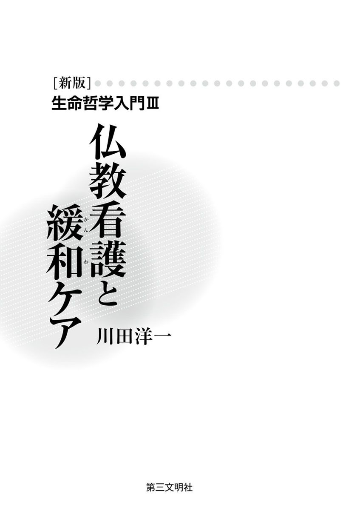
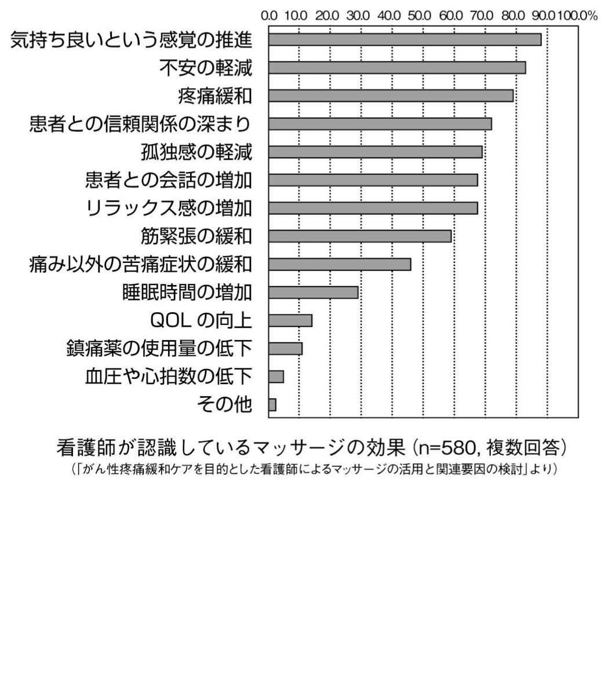
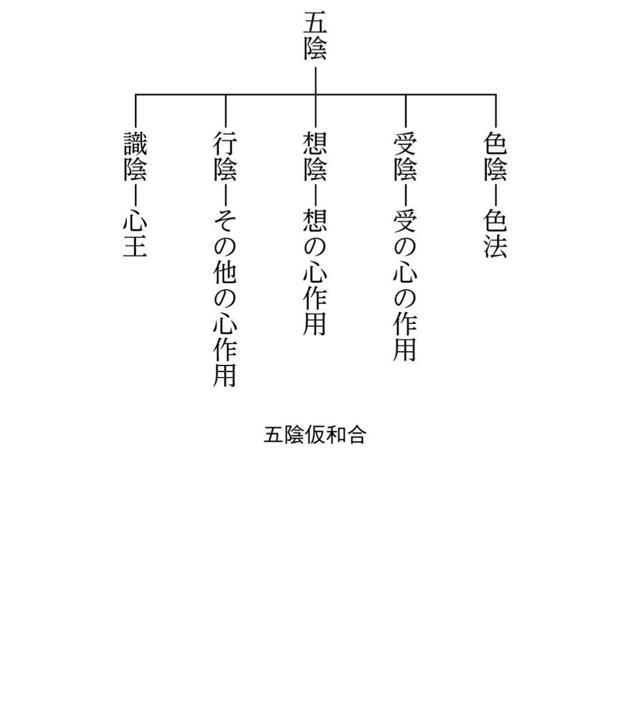
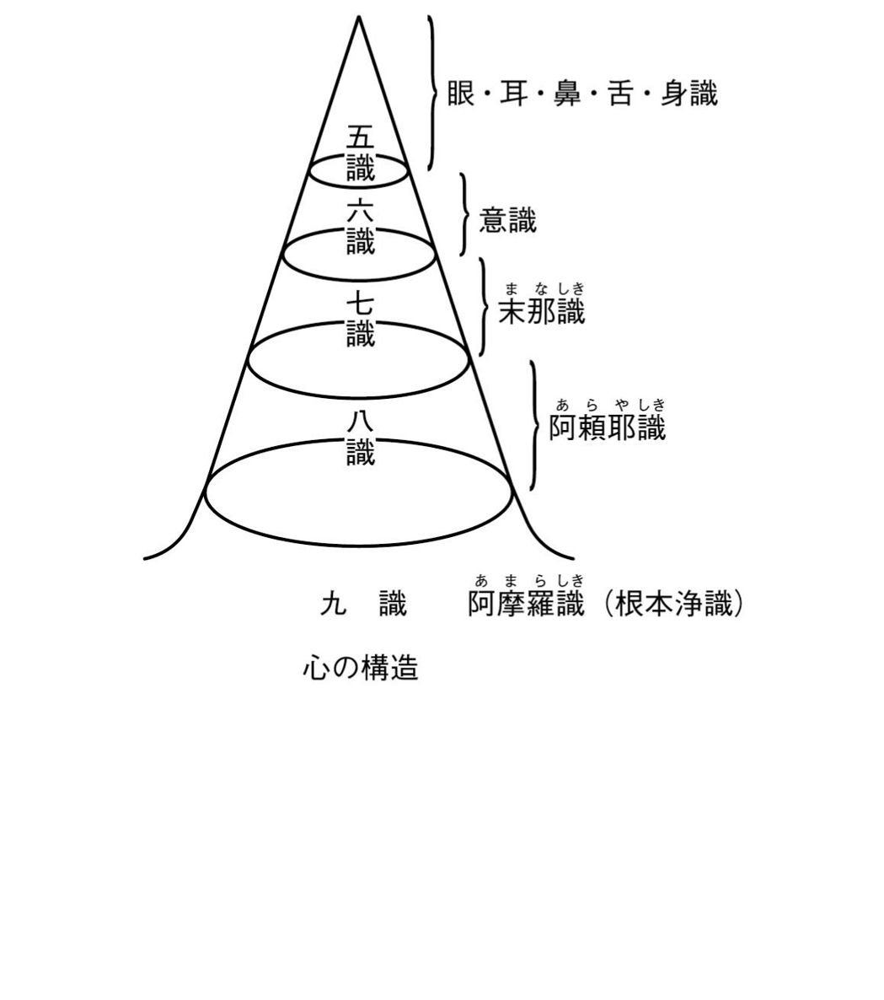
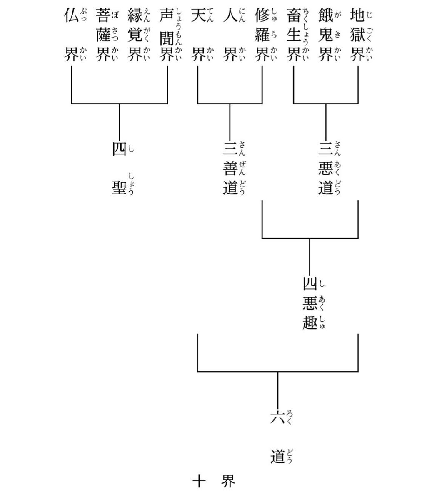
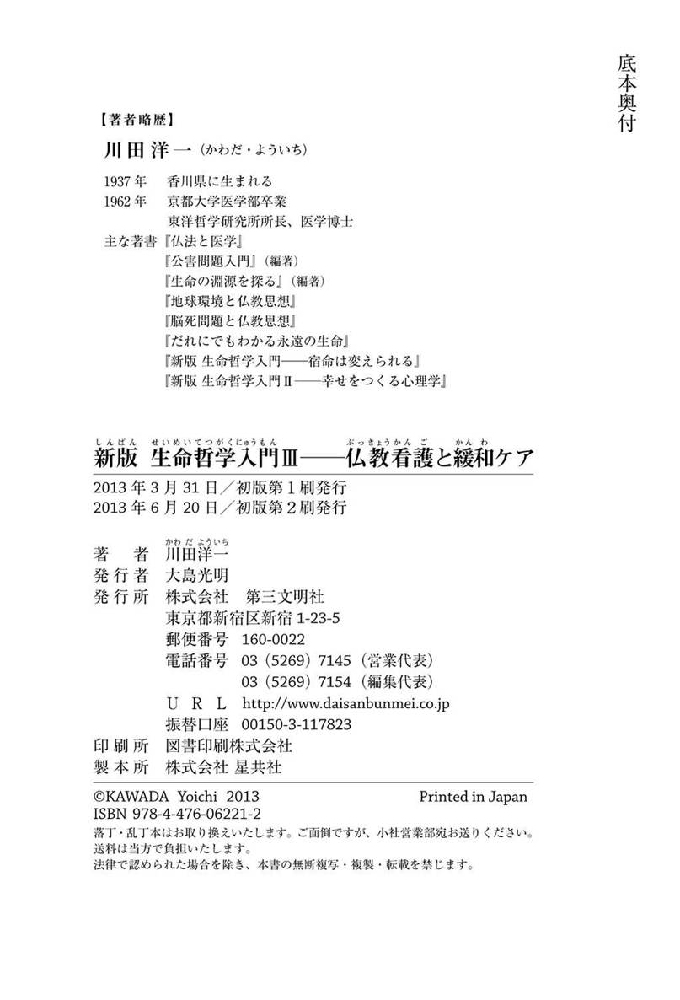

| 新版・生命哲学入門III：仏教看護と緩和ケア | |
| 川田洋一 | |
| (2013) | |

＊この電子書籍は、縦組みの底本を元に作成しました。
＊電子化にあたり、機能上の制約その他の理由により書籍版（冊子体）と異なる表記・表示をした箇所があります。
池田ＳＧＩ（創価学会インタナショナル）会長は、白樺会・白樺グループ（創価学会の看護師のグループ）に、看護師の仏教的使命を託した和歌を贈っています。
いついつも
白衣の姿も
凛々しけれ
生命を守らむ
尊き菩薩よ
（『希望の白樺』白樺グループ・白樺会編、第三文明社）
また、文明論の視座から、今日における看護師の社会的使命を示す言葉をつづっています。
生命を手段にする「力の文明」から、いのちを徹底していとおしむ「生命の文明」へ！（中略）
そして、「生命の世紀」をつくるのは、ほかのだれでもない、「一人の人を、とことん大切にする」私たちの日々の行動なのである。
その先頭に看護婦（＝現・看護師）さんたちがいる。（同前）
日野原重明博士は、東日本大震災の翌月、「すべての看護職のみなさまへ」と題したメッセージのなかで、現代医療の視座から、看護（ケア）の重要性を、次のように述べています。
「これからの看護は医療をも包含するケアという大きな傘のもとで、ケア全体をその最前線で牽引していくことを求められています。医療中心から看護主体のケアへ変わるべきときを迎えて」（『看護の時代』日野原重明・川島みどり・石飛幸三著、日本看護協会出版会）いることが指摘されています。
そのような時代の潮流は、いのちをいとおしむ「生命の文明」の最前線を開拓する主体者が、看護師であるとの、池田ＳＧＩ会長の期待とも一致するものです。
今日、文明社会全体の転換期のなかでの、医療、看護の変革の時を迎えるにあたって、現代看護の基盤をなすべき「看護論」「看護哲学」の再考も要請されているのではないでしょうか。
私は長年にわたり、白樺会・白樺グループのメンバーとセミナーや講演会で意見を交換し、特に、東洋哲学研究所の委嘱研究員をされているナースたちとは、今日の生命倫理をめぐってのディスカッションを深めてきました。そのなかで語られる看護体験は、仏教哲学を基調とし、〝菩薩〟行を現代の実践に移した、きわめて貴重な「生も歓喜」「死も歓喜」を目指す記録集でありました。
ところで、一般的には、今日の看護論の精神的・哲学的基盤は、西洋文明の中核にあるキリスト教やギリシア哲学、西洋哲学、西洋心理学からの理論や実践によって形成されております。
これまで、西洋の理論や実践のなかに、その一部として、仏教思想や修行法が取り入れられる状況にはなってきておりますが、それらはあくまで、西洋思想を基盤とした看護論、医療、看護実践への仏教の導入に他なりません。
最近になってようやく、仏教を基盤とする緩和ケアや看護のあり方が試みられるようになってきております。しかし、仏教看護論としての体系化は、今、始まったばかりといえるようです。
私は、三年前に、釈尊から龍樹、世親、天台、伝教、日蓮そして創価学会・ＳＧＩへと続く仏教思想史を『新版 生命哲学入門Ⅰ──宿命は変えられる』として体系化しました。
次いで、昨年、この生命哲学を基盤としての幸福論を、現代心理学の知見をくみ入れながらの「仏教幸福論」として、世に問いました（『新版 生命哲学入門Ⅱ』）。
今回、本書は、「生命哲学入門」シリーズの第三弾として、仏教の生命哲学、幸福論をベースにしながら、大変革期にある「看護」の領域に、仏教を基盤とした「仏教看護論」の概要を描くことを試みたものです。
第一章「仏教から見た〝心の病〟」と第二章「生命深層の病──『阿闍世王の物語』によせて」では、広義の〝心の病〟の実例を、医学と仏典から取り上げ、現代西洋医学と仏教思想との接点を探り、両者の相補的協力関係を示しています。
第三章「『仏教看護』の源流──釈尊、病人を見舞う」では仏典に記された、釈尊の看護体験を取り上げ、仏教看護の原点を考察しています。釈尊は、一人、室のなかで苦しむ病人を見舞い、手をさしのべ、環境をととのえ、ＱＯＬ（客観的には生活の質、主体的には生命の質）を高め、最後には生死を超越する境地にまで、導いています。ここに、仏教看護の基本的理念が示されています。
第四章「現代医療のなかの『仏教看護』──その特質を探る」、第五章「仏教の生命哲学と看護の根本精神」、第六章「『チーム医療』の基盤──三者和合の倫理」の三章で、仏教看護の基本概念を示しています。
まず、現在、大きく変わりゆく看護のなかでの、仏教看護の特質を十項目にわたって分析しました。現代医療・看護のなかでの仏教看護の役割を明確にするためです（第四章）。
次いで、仏教看護の基盤となる生命哲学と慈悲の精神にのっとった実践法を、主として菩薩道のなかから抽出してみました（第五章）。
そして、仏教看護の中核の一つに、仏教倫理があります（第六章）。医師、看護師、患者の三者和合の倫理とは、仏教医学で主張する医道（医戒）、看護道（看護戒）、患者道（患者戒）の三者の協力を説く医療倫理です。
古来、医師の倫理としては、ヒポクラテスの誓いがあり、看護師には「ナイチンゲール誓詞」があります。仏教医学での医道（医戒）と看護道（看護戒）は、それぞれ西洋医学倫理の基盤をなす、上記の二つの倫理に対応する内容をもっています。
さらに、仏教倫理では、釈尊の時代から、患者の倫理性を重要視し、患者道（患者倫理）をも説いています。これは病苦、死苦という苦悩に対峙するためには、三者（医師、看護師、患者）の協力（和合）が必要不可欠であることを洞察していたからです。
第七章「仏教と緩和ケア──『尊厳なる死』を求めて」では、仏教で示す「尊厳なる死」（一般の尊厳死と区別する意味で「尊厳なる死」と表現しています）の内容を考察しています。人間の尊厳性を守り、ＱＯＬを高め、真実の幸福境涯を築きゆく「緩和ケア」のあり方を仏教幸福論から導き出してきます。
第八章「仏教看護の深層心理──『臨終正念』のために」では、キューブラー・ロスや現代のユング心理学者の知見と仏教心理学を対比させながら、死へと向かう人の生命内奥を探っています。
これらの知見を活用しながら、生から死へのプロセスのなかで、ＱＯＬを最大に高め、自己実現の究極──「生も歓喜」「死も歓喜」の大境涯を確立するためのケアのあり方を示しております。ケアにたずさわる看護師、医師等の医療スタッフ、病人がともに、最高のＱＯＬである菩薩的「自己」を確立しゆくことが、現代医療のなかでの仏教看護の使命であると考えています。
最後に、仏教文明圏のみならず、すべての人間が手本とすべき「人類の教師」としての釈尊の「大いなる死」へのプロセスを、仏典『大パリニッバーナ経』によって、たどっております。釈尊の遺言「自島」「法島」──大宇宙の根本法（ダルマ）と一体化した自己（大我）の確立こそ、すべての人々を導く智慧の指針であり、仏教看護の崇高なる使命であります。
健康長寿を志向し、ＱＯＬの充実と「よき生」「よき死」を達成するための「ケア」に関わる人々が、本書のなかから智慧と方途をくみとっていただければ幸いです。
ここで、白樺会の代表であり、東洋哲学研究所の委嘱研究員でもある稲光礼子さん、小島明子さんから、貴重な看護体験の症例と看護師としての見解のアドバイスをいただいたことに深く感謝いたします。
最後に、本書の出版にあたって、全面的にご協力をいただいた第三文明社の方々に深く御礼申し上げます。
二〇一三年二月
川田洋一
〔新版〕生命哲学入門Ⅲ 仏教看護と緩和ケア 目次
西洋医学における心身症の研究 ヴァイツゼッカーの試み 心身症の実例 疾病利得のケース 利他的な夫婦愛が治癒につながる 個人無意識と集合無意識 阿頼耶識次元から考える〝心の病〟
『大般涅槃経』に説かれた阿闍世王の物語 阿闍世に近づく提婆達多 「阿頼耶識」から悪業に汚染される 煩悩で弱る阿闍世の生命力 父王を幽閉する 父王に「まことの父」を見る 悪瘡により、膿血が垂れ、悪臭を放つ 業因業果を信じ、釈尊のもとへ 〝心の病〟を治す釈尊 「まことの息子」に目覚める 「仏性」に具わる「妙の三義」の力
釈尊の看護体験 『大品』に説かれた看護体験 『十誦律』（巻二十八）に説かれた看護体験 『摩訶僧祇律』（巻二十八）に説かれた看護体験 その他の仏典に説かれた看護体験 心理学者エリクソンが語る「手」 日本の研究者が語る「手」の効果 仏教が教える三苦 「三苦」から見た釈尊の看護
拡大する看護の目的とその対象領域 看護師に問われる人生観 看護師に課されている責任範囲 仏教看護の特質十箇条
生命尊厳の思想 五陰仮和合──色心不二の人間観 九識論──「内なる宇宙」 一念三千論 生死不二──永遠なる生命 仏教看護の根本精神 仏教看護における誓願と目的 仏教看護の実践法 実践法①四摂事 実践法②六波羅蜜
医療と拡大する看護 日野原重明博士が主張するチーム医療 仏教医学の「三者戒」と西洋医療の倫理 医戒（医師の倫理） 看護師戒（看護師の倫理） 病者戒（病人の倫理） 「菩薩的自己」を形成しゆく患者 常楽我浄の「四徳」がもたらす影響
「死の受容」五段階 ＱＯＬと緩和ケア（終末期医療） 欲求から考えた幸福論と緩和ケア 他者貢献と宇宙的・本源的欲求 「尊厳なる死」の現実 良き死の迎え方
ロスの「臨死体験」研究 文化・宗教を超えた共通点 フォン・フランツが語る「光の生命」 アーノルド・ミンデルの「昏睡状態の人」との対話 「永遠の自己」と大我 意識レベルの低下──深昏睡へ 出入息（自発呼吸）の消失 日寛「臨終用心抄」を読む 「断末魔の苦」の意味 「臨終正念」のために 懐苦──精神的苦悩を超える 行苦──実存的・宗教的苦悩を超える 生も歓喜・死も歓喜の大境涯 臨終正念
［引用文について］出典は二度目以降は（前掲『 』）で示し、直後に連続して同じ出典を示す場合は（同前）と記した。なお、編集部注は（＝ ）で示した。読みやすくするため、改行やふりがなを追加した箇所や、旧かなづかいを新かなづかいに改めた箇所もある。
装幀／志摩祐子（有限会社レゾナ）
西洋医学における心身症の研究
「病は気から」という言葉がありますが、仏教では、古くから精神と身体との相関性を認識していました。釈尊や、釈尊に深く帰依した名医耆婆の時代からのことです。
このことは、たとえば「心身一如」（心と体は一つである）との言葉や、「色心不二」（物質的存在である「色法」と、精神を示す「心法」は二つにして、一つである）との言葉で表現されてきました。
五世紀に入ると、唯識学派の人たちの修行「禅定」によって、意識の深層を解明しようと試みます。
そして、人間の意識の深層には、「煩悩」「善心」「業」などがうずまいていることを発見したのです。その様子は、いわば「心的宇宙」とも表現すべきもので、意識の枠が、「個」から「全体」へと、無限に広がっていることを唯識学派は見いだしました。
彼らはこれを「八識論」として体系化します。
さらに、その後、中国の天台や日本の日蓮が、釈尊が悟達した「法」（ダルマ）と一体となった宇宙生命そのものを「九識」としました。「九識」とは「仏性」や「真如」のことです。（「九識論」の詳細については、『新版 生命哲学入門──宿命は変えられる』︿第三文明社﹀をご参照ください。）
一方、西洋医学においても、「医学の父」と称されるギリシアのヒポクラテスの時代から、心が身体へ与える影響を重視し、心身ともに治療すべきであると主張されてきました。
ところが、近代に入って西洋科学の影響が強くなると、西洋医学でも物質的、身体的側面ばかりが重視されるようになります。その結果、心の影響、精神的な側面が等閑視されるようになりました。さまざまな病気における心理的影響がなおざりにされていったのです。この傾向はしばらく続きました。
西洋において、精神や心の問題が再び注目されるようになったのは、十九世紀末から二十世紀にかけてのことです。大きなきっかけは、ジクムント・フロイトが創始した精神分析でした。西洋では、フロイトから、意識の奥に広がる広大な無意識層の探究に入ります。
その後、フロイトが発見した個人における無意識層は、アドラー、ユング、マズローらの心理学者たちによって、個を超えたトランスパーソナルの領域へと拡大されていきました。そして、意識の深層に広がる「内的宇宙」の様相が明らかにされるようになったのです。
ヴァイツゼッカーの試み
以上のように、西洋における深層意識の探究はフロイトから始まったのですが、二十世紀初頭における学術界は、フロイトの精神分析を無視し続けました。そのような状況にあって、内科学へ精神分析を導入しようと努力したのが、ヴィクトーア・フォン・ヴァイツゼッカー（一八八六～一九五七）という医学者でした。
ヴィクトーアは、ドイツ連邦共和国第六代大統領リヒャルト・カール・フォン・ヴァイツゼッカーと、その兄で著名な物理学者・哲学者カール・フリードリッヒ・フォン・ヴァイツゼッカーという二人の兄弟の叔父にあたります。この兄弟は、叔父ヴィクトーアをヴァイツゼッカー一族の誇りとして、深く敬愛していました。
なお、池田ＳＧＩ（創価学会インタナショナル）会長は、東西ドイツ統一後の一九九一年六月、当時統一ドイツの大統領であったリヒャルトと会見しました。また、ＳＧＩ会長は、物理学者カール・フォン・ヴァイツゼッカーの息子であり、環境学者として世界的に活躍するエルンスト・ウルリヒ・フォン・ヴァイツゼッカー博士と『潮』誌上で対談を行いました。
さて、ヴィクトーア・フォン・ヴァイツゼッカーはどのようにして内科学に精神分析の手法を導入しようとしたのでしょうか。彼は著書『病因論研究──心身相関の医学』のなかで、次のように述べています。
病気はなにかの偶然といった起こりかたをするものではなく、生命の情念的な動きから起こるものだ。その生成を捉えられるかどうかは、この情念の動きを追うことができるかどうかにかかっている。（『病因論研究──心身相関の医学』Ｖ・ｖ・ヴァイツゼッカー著、木村敏・大原貢訳、講談社）
生命の情念的な動き、すなわち感情や衝動、欲求などによって病気になるのであり、この情念の動きを追うことができれば、病気の原因をつきとめられる、と述べています。
ヴァイツゼッカーは心理的なはたらきによって病気が起こると考えていたのです。
心身症の実例
ヴィクトーア・フォン・ヴァイツゼッカーは、今日の「心身症」に相当する数々の興味深い症例を挙げています。『病因論研究──心身相関の医学』から、情念と病気の関係を追跡した症例を見てみましょう。
【ケースⅰ】
年配の未婚の女性がやはりかなり年配の鉄道員と結婚した。彼はそれでもこの結婚が十分に幸福を与えてくれるという期待を抱いていた。ところが彼は遠方へ転勤することになり、妻のほうは自分の母親から離れて夫について行く決心がつかなかった。いろいろと長いやりとりがあった後で、彼女は結局夫のところへ行くことになった。
妻が到着したその日に夫は重い扁桃炎にかかって合併症を来し、長い病床生活を送った後に勤務不能ということで退職することになった。そこで彼は妻といっしょに妻の母のところに戻り、いまでは一家全員同じところに集まって暮らしている。（同前）
遠方への転勤は、きわめて今日的なテーマです。この例では、夫婦一緒に妻の母と暮らせるようになって、夫も妻も心の中での〝葛藤〟がなくなり、当時の重い病気である扁桃炎やその合併症などの病気が消失しているのです。
つづいて、別の例を見てみましょう。
【ケースⅱ】
極度に内気で臆病な女の子が内心ではこだわりながら結婚に同意し、しかし夫を絶対に愛せないだろうという気持ちを抱いていた。結婚式の後で二人がホテルに入ったとき、彼女は夫の侮辱的な態度に心を傷つけられ、顔を殴られたようなショックを受けた。「その瞬間、わたしの内部で大きい変化が起きました」と彼女は言っている。翌日、彼女は激しい扁桃炎にかかって、新婚旅行を中止しなくてはならなかった。結婚生活は長続きせず、離婚が成立した。（同前）
ここでも、心の中の情念（夫への嫌悪）が扁桃炎という身体の病を引き起こしたと考えられています。このケースも、きわめて現代的な内容をはらんでいます。男性の女性に対するモラルハラスメントを思い起こさせるからです。
【ケースⅲ】
三十歳前後の卵巣摘出術を受けた未婚女性が、妹の結婚式に出かける旅行のとき、列車に乗り込もうとして足を踏み外した。足の傷は軽かったが、それに引き続いて脚がヒステリー性に麻痺してしまった。
この麻痺は長期間ギプス固定かなにかで治療されていたが、一年半ほど続いた後に無意識を意識化する手法の心理療法を受けてよくなった。そこで明らかになったのは、妹の婚約者を彼女自身が愛していたということだった。（同前）
この未婚の女性は心のなかの情動（妹の夫を愛してしまったという愛欲の葛藤）を、超自我（良心）によって無意識的に抑えつけていたのです。そのため、無意識層の情動が身体面に現れ、ヒステリー性の麻痺となったのです。心理療法によって、意識下の情動を意識化し解放することによって、病状は好転しました。
疾病利得のケース
「疾病利得」と思われる例もあります。疾病利得とは、病であることから得られる利益のことです。心理的な苦痛を回避するために、葛藤を抑圧し、そこから疾病が起こって、その結果、患者が得をするというような事例です。
【ケースⅳ】
若くて結婚したある男の妻が、初産で男の子を出産した。（中略）出産の次の日、彼は激しい扁桃炎に見舞われた。しかし彼はある理由から、この病気をむしろ喜んだ。
というのは、それで彼には遠方への旅行を中止するいい口実ができたからである。その旅行はあまり出たくない会議のために予定していたもので、もし出席すれば気乗りのしない講演をしなくてはならないはずだった。（同前）
この例では無意識層にある講演を拒否する心が、扁桃炎という病気に結びついたと考えられます。結果的に、彼は病によって「講演しなくてもよいという」利益を得ています。
ヴァイツゼッカーは、心理的な葛藤が身体面の症状のみならず、虚言癖、空想癖、盗癖などの反道徳的行為として現れる事例も挙げています。それはブルーノという少年のエピソードを通して語られています。
【ケースⅴ】
（三番目の子として生まれたブルーノは、何でも兄や姉と同じようにやりたいと思うあまり、空想的な物語をつくり出したり、お菓子を買うために小銭をごまかしたりしていました。そんなことをしているうちに、小学校に入学する時期を迎えます。
ブルーノは実は入学に際し、内心、どうしようもない不安を抱いていました。ところが、その頃に扁桃炎にかかったというのです。）
彼は扁桃炎のため数日間学校を休んだ。そのとき、なにもかも消えてしまった。いきり立つことも気を悪くすることも、ごまかしも盗みも、扁桃腺が腫れるのも咳をするのも、すっかりどこかへ行ってしまった。その後数カ月のうちにブルーノはいい子になった。空想癖はなくなった。（中略）
その後もブルーノは同じような道徳的な危機を何回か通りすぎた。そのたびに喉が痛くなり、声がかれ、何回かは腹痛と胃の不調を来したこともある。ギムナージウム入学のための予備試験のときと、ギムナージウムの最初の登校日の前夜には嘔吐もあった。その後もう一回、発作的な盗癖も見られた。（同前）
ヴァイツゼッカーは、この症例について次のように解説しています。
ブルーノのこころの乱れは、この子にとって暴風雨といってよいだけの意味をもっていたのだ。彼の引き起こした道徳的な騒ぎは、大人のそれが市民社会の秩序の中で演じられ、その中でそれなりの結果をもたらすのと同じだけの意味をもっていた。（同前）
扁桃炎や呼吸器系、消化器系の症状と同じように、ブルーノの道徳的な危機──虚言癖、空想癖、盗癖──の奥底には、無意識層に吹き荒れる情動の「暴風雨」があったとヴァイツゼッカーは考えたのです。大人であれば、扁桃炎などを発症するだけで済むような場合でも、ブルーノは、身体的な病状を示すだけでは抑えられないほど、情動のエネルギーが突き上げて「心をも危機に陥れて」いたのです。
ヴァイツゼッカーが人生のドラマのなかでとらえた情動と疾病の「心身相関の医学」は、現代の心身医学、精神医療の先駆をなす業績といえます。
利他的な夫婦愛が治癒につながる
ヴァイツゼッカーが述べた「暴風雨」を仏教的に表現すれば、「煩悩の嵐」となるでしょう。煩悩とは、怒り、不安、恐れ、悲しみ、貪欲（＝欲求不満）、攻撃性などのネガティブな精神的作用のことです。
仏教では、【ケースⅲ】のような愛の情動（妹の夫への愛）も煩悩に含めて考えています。この感情は愛情といえるかもしれません。しかし、一転して憎悪に変わるような性質をもっており、その可能性のゆえに煩悩のなかに数えています。
一方、利他的で純粋な愛情については、善心（これを「菩提」と呼びます）であると考えます。
ユング心理学にもとづく心身医学の実践者であり、仏教にも深い知見を示していた外科医・河野博臣博士は、利他的な愛情についての症例を示しています。彼の著作『患者の心 医師の心』（聖教新聞社）を紐解いてみましょう。
【ケースⅵ】
（腸閉塞となったある婦人が入院し、手術を受け、退院しました。ところが、彼女は半年後、また同じ症状で入院し、手術を受けます。このようにして三年間に五回も手術を繰り返したのです。彼女は三十歳になりました。
河野博士はその後のエピソードを次のように述懐しています。）
その時に初めて私は患者さんと心を開いて話し合うことができたのですけれども、そこで思いがけないことを私はその患者さんから聴いたのでございます。
まず、その患者さんとそのご主人──ご主人は三十五歳だったと思いますが──そして私の三人で病室で話をしたわけでございます。すると、その時に患者さんは、なにげなくこういう話をされたのです。
「私が病気をして、病院に入院し手術をした時だけは主人は私に対して非常な愛情を示してくれるんです」と。
夫婦関係というのは、夫と妻がお互いに気を配り合う、配慮し合うところに成り立っています。（中略）
この患者さんはポリサージャリー（手術頻回症）の患者さんだったのです。ポリサージャリーというのは心身症でございます。心身症の患者さんというのは身体的な訴えをいたします。おなかが痛い、頭が痛い、肩がこる、心臓がどきどきするというふうに身体的な訴えをします。
だけどその原因は、身体そのものにあるのではなくて、心理的なものにあるわけです。ですから、その患者さんを治療する時は、どうしてもその人の心に関わって治療しなければ、根本的な治療にはならないわけです。（前掲『患者の心 医師の心』）
夫はいたく反省し、ふだんから妻への愛情を示すようになりました。以後、妻の腸閉塞は再発していません。
お互いを思いやる利他的な夫婦愛が、「ポリサージャリー」という心身症を治癒させたと考えることができるでしょう。
河野博士の著書から、もう一例、興味深い症例を見てみましょう。
【ケースⅶ】
（ある肝臓がん患者が、一時間ごとに麻薬を射たないと痛みが治まらないほどひどい症状に見舞われていました。患者には娘が三人いて、彼女たちは時おり看病に訪れます。親孝行の娘たちといえるでしょう。
ところが、河野博士が見るところ、娘たちが看護している時のほうが、痛みが悪化していました。博士はその原因を追究し、次のように述べています。）
そこでよく話し合ってみると、その患者さんには、じつは隠し子があった。その人は再婚でして、前の奥さんとの間に子供があったのですが、どうしてもそれを表沙汰にすることができないという秘密をもっていたのです。
秘密の問題というのは、ものすごく大事ですけれども、その患者さんの場合も、家族を含めて話し合うことができて、秘密にしていた子供さんを患者さんに会わせることができたわけです。
その患者さんは、心の中で「子供と会わないうちは死ねない」とひそかに思っていたのです。その子供と会えば心残りはない。そこで家族みんなで話し合って、その子供と会うことができて、それから痛みは非常にやわらいでいきました。（同前）
仏教では、人間の苦しみの種類を「苦苦」（身体的な痛み）、「壊苦」（心理的な悩み）、「行苦」（実存的悩み）という「三苦」に分けています。
この患者の場合、「苦苦」である肝臓がんの痛みを、「壊苦」──前妻との間の子どもと会わないうちは死ねないという心のなかの煩悶──が増幅していたととらえることができるでしょう。
隠し子という存在は、家族に葛藤をもたらしかねません。しかし、この一家は家族全体で互いに純粋な愛情を示すことによって、患者の「壊苦」を取り除くことができました。その結果、「苦苦」をも軽減できたのです。家族がお互いを思い合う純粋な愛情が、苦痛を克服する要因となったと考えられるでしょう。
仏教においては、憎悪に転ずる可能性をもつ愛を「煩悩」とするのに対して、この二つの例に挙げられるような夫婦愛・家族愛は、純粋な愛情として「善心」（菩提）ととらえることは先述しました。
善心にはこのほかに、慈愛、信頼、智慧、希望、利他心、勇気などの精神的はたらきがあります。これらの「善心」（菩提）こそが、煩悩の苦しみを打ち破る心のエネルギーとなるのです。
したがって、〝心の病〟を治癒していくためには、患者の心のなかにある善心を触発し、強化することが重要になります。
個人無意識と集合無意識
私たち人間の生命には、煩悩という悪心もあれば、菩提としての善心もあります。どんな人のなかにも、善悪両方の心が存在しています。
これまでの症例では、無意識層に存在する善悪の心が身体に影響する様子を見てきました。これらの無意識層は、ユングから見たフロイトの精神分析の領域、すなわち「個人無意識」に相当すると考えられます。
ユングは、自らが発見し解明しようとしていた無意識層を「集合無意識」と定義し、この立場から、フロイトの解明した無意識の領域を「個人無意識」と位置づけました。
西洋の深層心理学におけるこの二つの心の深層──「個人無意識」と「集合無意識」──を仏教の知見に照らしてみると、唯識学派における「第七・末那識」と「第八・阿頼耶識」とほぼ同じ心の深層を探究しているのではないかと私は考えております。
仏教が考える「末那識」は根源的な自我意識であり、自分が自分であることを認識するアイデンティティの根本ですが、その領域には、さまざまな心の作用が存在しています。悪の心作用（煩悩）も善の心作用（菩提）も、ともにうずまいているのです。
ですから、フロイトが焦点をあてたように、また、ヴァイツゼッカーや河野博士の症例にあるように、個人が無意識のうちに意図しない行動を起こしてしまうような現象は、仏教的視点に立てば「末那識」次元のはたらきによると考えることができます。
そして、「末那識」にあるエネルギーのなかでも、悪のエネルギー、すなわち煩悩が意識の次元に顕在化すると、広い意味での〝心の病〟を引き起こすと、仏教では考えるのです。
精神科医であり、犯罪精神医学、精神病理学、社会精神医学が専門の東京工業大学名誉教授・影山任佐博士が書いた『心の病と精神医学』（ナツメ社）によれば、今日における広義の〝心の病〟は、心身症、神経症、精神病（統合失調症、気分障害──躁鬱病等）や、パーソナリティ傷害、心的外傷後ストレス障害（ＰＴＳＤ）、乖離性同一性障害（多重人格）を含んでいます。
これら広義の〝心の病〟に対処するには、悪の心作用を抑え、善の心作用を起こすことが重要です。しかし〝心の病〟のなかには、「末那識」次元の煩悩や善心を超えた深層──「第八・阿頼耶識」まで考慮に入れなければならない症例もあります。
唯識学派は、「阿頼耶識」には「業」と呼ばれる潜在的エネルギーが満たされていると考えました。「業」とは、身心のはたらきが潜在化した、生命エネルギーのことです。
意識や末那識次元の悪の心作用（煩悩）は「悪業」として、善の心作用（菩提）は「善業」として潜在化し、「阿頼耶識」に蓄えられていきます。そして、この「業」のエネルギーは環境との対応を通して、「意識」や「末那識」次元の善悪の心作用となって顕在化するのです。
阿頼耶識次元から考える〝心の病〟
現今、望まれないで生まれてくる子どもや、両親に拒否される子どもが増加しているという話を聞きます。
家庭内の暴力（ＤＶ）も増加しています。両親による子どもへの虐待、子どもによる親への暴力行為、果てには殺人にまでいたるケースもあるようです。
家庭内のみならず、教育現場でも、悪の心作用が広がっているように感じます。
たとえば、学校内における生徒の間でのいじめや暴力行為が数多く報道されています。そこに教師が関わる例もあるようです。また、秩序がなくなり、授業ができず、〝学級崩壊〟といわれるほどの学校もあります。
さらに、家庭や学校のみならず、社会全体にまで視野を広げると、攻撃性、怨念、欲求不満、不信などの煩悩が、制御しきれずに噴出してきております。
今後、これまで症例として取り上げた「末那識」次元の〝心の病〟よりも、さらに深い次元である「阿頼耶識」が関与するところまで掘り下げる必要のある症例も増えてくるに違いありません。
河野博臣博士の提示する次の症例は、まさに、「個人無意識」の奥深くに存在する「集合無意識」の次元からの影響が考えられます。
【ケースⅷ】
（ある高校二年生の男子生徒の話です。彼は高校受験の頃から、登校時になると襲われる強迫的な便意を恐れていました。このような便意に襲われると、意識ではどうにもならなかったからです。青春期の手本となるべき彼の父親は、わがままで酒飲みで、少しも相談にのってくれるような人ではなかったのです。
彼が、この強迫神経症を克服するきっかけになったのは、彼が起こしたある事件でした。彼は父親が大切にしていたブランデーをもち出して飲み、教室で酔っ払っていたところを見つかったのです。河野博士は彼の心の様子を、次のように述べています。）
酒に酔っぱらうという行為が、この場合、多分に自我の抑圧を弱める結果になり、自我は自己（意識と無意識を含む心全体の中心）との関わりの中で、更に高い自我の統合を求めて動きだしたものといえる。いわば、彼は、本来の父親らしい要素を父親に求めようとして、父親と闘う力が出てきたのである。その結果、この生徒は強迫的な便意の症状を克服すると同時に、その自我はより高い自我へと統合を果たしたものと考えられる。（『病気と自己実現』河野博臣著、創元社）
彼は「父親らしい要素」、つまり、「まことの父親」を求めていた。ところが、実際の父親は飲んだくれにしか見えない。現実にはいない「まことの父親」を求める心の奥の衝動が自我の抑圧によって、強迫的な便意となって現れていたのです。
たまたま酒を飲むことにより、自我の抑圧が弱められ、無意識層でのダイナミズム（真相）がかい間みられたのです。彼は、「まことの父」を求めていたのです。そこで、治療者は、彼が勇気をもって父親と対話するのを手助けしました。その結果、彼は父親のなかに自分が求めていた「まことの父親」を見いだしていきます。そして、強迫的な便意を克服したのです。
この高校生は、現実から逃避する弱い小さな「自我」から、「まことの父親」との出会いを通じて、一段高く大きな「自我」へと成長していったのです。ここに示される無意識層は、ユング心理学での「集合無意識」の次元であり、仏教的にいえば、「阿頼耶識」の深層にまで及んでおります。
次章では、釈尊に帰依し、「阿頼耶識」の深層に起因する〝心の病〟を克服して大きく成長していったある王子の物語を見ていきたいと思います。仏典に説かれる阿闍世王の物語です。
──「阿闍世王の物語」によせて
『大般涅槃経』に説かれた阿闍世王の物語
前章では、河野博臣博士が示した「まことの父親」を見いだそうとする高校生の症例（【ケースⅷ】）を見てきましたが、仏典に記される阿闍世王の物語は「まことの父」「まことの母」を求めて、無明・煩悩と、法性・善心との間を激しく揺れ動く人間ドラマです。ヴァイツゼッカーや河野博士にならって、阿闍世王の〝心の病〟を引き起こした情動のエネルギーを、煩悩と善心の視点から追跡していきたいと思います。
阿闍世王のストーリーは、多くの仏典に記載されていますが、ここでは主に『大般涅槃経』の記述にしたがって考察していくことにします。
阿闍世に近づく提婆達多
紀元前五世紀頃、釈尊と同時代を生き、当時インド最大だったマガダ（摩訶陀）国の王位に即いたのが阿闍世王でした。
阿闍世の不幸は、提婆達多という存在によって引き起こされます。釈尊の弟子だったもののやがて敵対し、釈尊の教団を乗っ取ろうと企んだ提婆達多は、目的達成のために阿闍世に近づいていきます。
阿闍世の父であり、当時、王位にあった頻婆娑羅王と、その妻である韋提希夫人は、ともに釈尊に帰依し、教団の外護者として存在感を示していました。そこで提婆達多は阿闍世を、釈尊に帰依する父王・頻婆娑羅王に反逆させることができれば、釈尊の教団に大打撃を与えるのみならず、強大な権力を手に入れることができると考えたのです。
提婆達多には阿闍世の心をつかみ、自分の味方につけるためのとっておきの秘策がありました。『大般涅槃経』には、その秘策を実行する場面が描かれています。
ある時、提婆達多が、阿闍世（太子である阿闍世は、当時、「善見太子」と呼ばれていました）が住む王舎城にやってきます。提婆達多の顔色は悪く、憔悴しきっていました。
阿闍世（善見太子）がその理由を尋ねると、提婆達多はこのように答えました。
「外人があなたのことを罵って、〝非理〟と言っています。そのことを聞くと、親友である私は悲しまざるを得ない」
「外人」とは王舎城の外に住む住民のことで、王族とその関係者以外の一般民衆のことをいいます。提婆達多は、彼らが善見太子を〝非理〟、すなわち道理に外れた非道である、と罵っていると告げたのです。
『大般涅槃経』には、次のように続きます。
善見太子、復是の言を作さく「国人云何が我を罵辱する」
提婆達云はく「国人汝を罵りて未生怨と為す」
善見復云はく「何が故に我を名づけて未生怨と為す。誰が此の名を作す」
提婆達の云はく「汝未生の時、一切の相師是の言を作さく。是の児生じ已りて当に其の父を殺すべしと。是の故に外人は皆悉く汝を号して未生怨と為す。一切の内人は、汝が心を護らんが故に、謂って善見と為す。韋提夫人、是の語を聞き已りて、既に汝が身を生じて、高楼の上より之を地に棄て、汝が一指を壊せり（『大般涅槃経』巻三十四）
ここで「国人」とは「外人」と同じです。彼らが自分の何を罵っているのかという善見太子の問いに、提婆達多は「未生怨」という言葉を出します。
提婆達多の説明によると、善見太子がまだ母の胎内にいた時に、占い師が、この子は父を殺すようになるであろうと予言しました。つまり、生まれる前、未生のうちから父親を怨んでいたということで、外人たちは阿闍世を「未生怨」と呼んでいたというわけです。
しかし、内人、すなわち宮廷内の人々は阿闍世の心を護るために、逆に「善見」と呼んでいるというのです。
「阿頼耶識」から悪業に汚染される
ところで、ある経典（『観無量寿経疏』巻二）によれば、占い師が、阿闍世は父を殺すようになるであろうと予言した由縁を、父母のエゴイズムにまでさかのぼって説明しようとしています。
その内容を要約すると、次のようになります。
「──父の頻婆娑羅王には世継ぎの子がいなかったので、占い師に韋提希夫人を占わせたところ、山中に住む仙人が死後に太子となって生まれるであろうと予言した。
王は早く子どもが欲しいという焦りから、仙人の寿命である三年が待てないで、家来を送って仙人を殺害させる。
まもなく夫人が身ごもったので、再び占い師に占わせると、このように予言された。
『生まれた男の子は王の怨となるであろう』
王は、占い師の言葉を聞き、恐ろしくなって高い建物の上から子どもを落とした。だが、子どもは一本の指を折っただけで無事だった──」
『大般涅槃経』にも他の仏典にも、仙人を殺させたのは頻婆娑羅王であり、母の韋提希夫人が積極的に仙人を殺害させたという記述はありません。しかし、夫人も父王の行為に従ったとなれば、やはりそこに母のエゴイズムを見いださざるを得ないでしょう。
このことを煩悩の視点から見てみましょう。
早く王国を継承する男子が欲しいという権力欲に染まった頻婆娑羅王のエゴイズムはゆがんだ愛情であり、煩悩であることはいうまでもありません。この煩悩が阿闍世の未生の怨念を形成していったのです。
母の韋提希夫人も、子どもを産むことによって夫の愛をつなぎとめたいというエゴイスティックなゆがんだ愛によって、頻婆娑羅王と行動をともにしたのです。
阿闍世のなかの父母への怨念（反逆の心）のエネルギーは、「阿頼耶識」に深く潜在化しておりました。
わが子の可愛い姿を見た父母は、自らのエゴイズムを反省します。また、釈尊と出会ったこともあって、二人は阿闍世に純粋な愛情を注ごうとつとめました。
両親に愛されて育ち、青年期に達した阿闍世の身心は、若々しい生の息吹に満ち、善心と希望に輝いていたことでしょう。阿闍世は「善見太子」の名のとおりに成長していきます。
この生の躍動を一瞬にして停止させ、未来を閉ざし、阿頼耶識のなかにあった怨念のエネルギーに呪縛し、あらゆる善心を消失させたのが、未生怨の秘密をあばいた提婆達多の言葉でした。
提婆達多がさも親切そうに阿闍世に接近して、その実、阿闍世の出生の秘密をあばきたて、父母への怨念を抱かせたのには訳があります。阿闍世が父母を憎めば、父母が帰依する釈尊とも敵対するようになるでしょう。提婆達多はこのようにして阿闍世に釈尊を迫害させようとしたのです。
煩悩で弱る阿闍世の生命力
自身の出生の秘密を知ったその瞬間から、阿闍世の苦悩の日々が始まりました。
仏教的に考えれば、阿闍世の生命に生じた〝怨〟（うらみ）という煩悩は、〝瞋恚〟（いかり・にくしみ）の激したものです。瞋恚は地獄界における煩悩で、次々に随煩悩──煩悩にしたがって生じる悪心──を引き起こしていきます。
それは〝忿〟（はげしいいかり）となり、〝恨〟（うらみ）となり、〝嫉〟（ねたみ）となり、〝悩〟（なやみ）となり、深層意識を揺り動かします。そして、ついに〝害〟、すなわち暴力性となって、自他の身心を破滅する衝動へと爆発していくのです。
その結果、阿闍世は自身が生きる意味を喪失し、身体の抵抗力も急速に低下していきました。
また、瞋恚という煩悩は今述べたような随煩悩を引き起こすのみならず、貪欲、愚痴などの煩悩も呼び覚まします。瞋恚・貪欲・愚痴は三悪道における典型的な煩悩です。なかでも、貪欲はのちに権力欲となって現れています。憎悪、悲哀、不安、恐怖などの情動を帯びたこれらの煩悩が顕在化し、阿闍世の「末那識」を汚染していったのです。
それに反比例するかのように、純粋な愛情（親子愛）、〝信〟（根源的信頼感）、生きる希望、智慧などの善心が失われていきました。同時に、身体のエネルギーが枯渇していきます。〝心の病〟が〝身の病〟として現れ始めたのです。
父王を幽閉する
生命力を失った阿闍世は、とうとう提婆達多の甘言にたぶらかされてしまいます。仏典『五分律』には、提婆達多が阿闍世王を誑惑する場面が記されています。
我当に仏を害して代わりて法主となるべし。新王、新仏にて摩竭国に於て共に道化を弘めんに亦善からざらんや（『五分律』第三）
「自分は釈尊を殺して新仏となり、あなたは父王を殺して新王となり、ともに、この国を治めよう」と提婆達多は阿闍世に言ったというのです。ここに、世にいう「王舎城の悲劇」が始まります。
阿闍世は、父母への恩愛と怨念との間で葛藤し、苦しむのですが、結局、提婆達多の言葉に引きずられてしまいます。阿闍世は、頻婆娑羅王を幽閉しました。阿闍世は父王に食事を与えず、餓死させようとしました。
ところが、頻婆娑羅王は生き続けました。韋提希夫人が阿闍世に隠れて、夫を支え続けたのです。
『仏説未生寃経』には、韋提希夫人が、浴して身を清浄にし、蜜に麨を混ぜて身に塗り、瓔珞（首かざり）のなかに葡萄の漿（薬水）を入れて夫・頻婆娑羅王を訪れたことが記されています。頻婆娑羅王は夫人の身についた麨や、瓔珞に入れられた葡萄の漿を食して、生きることができたのです。
このことを知った阿闍世が母をも殺そうとした時の様子が、『大般涅槃経』の記述で分かります。
時に諸の守人、即ち太子に告ぐ「大王、夫人往いて父王を見んと欲す。不審なり。聴さんや不や」。善見聞き已りて復瞋嫌を生じ、即ち母の所に往き、前んで母の髪を牽き、刀を抜きて斫らんと欲す。爾の時耆婆白して言さく「大王、国有りて已来、罪極重なりと雖も女人に及ばず、況んや所生の母をや」。善見太子是の語を聞き已りて、耆婆の為の故に即便放捨し、父王の衣服・臥具・飲食・湯薬を遮断す。（『大般涅槃経』巻三十四）
母が獄中の父のところに行き、飲食を与えていたことを聞いた阿闍世は、激怒し、母のところに行き、刀を抜いて、母を害しようとしたというのです。
この文によると名医・耆婆が「国が存在するようになってから、罪が重くとも、女性にまでは及んでいない。まして、自分を産んでくれた母を害したことはありません」と説いて、阿闍世の行為を止めました。耆婆は阿闍世の母親殺しの罪を防いだのです。
たとえ、その行為が過去の母のエゴイズムへの反逆であったとしても、母を害することは自らの生命そのものの破滅へとつながります。自らの生命の本源、〝母なるもの〟への反逆は、自己の存在基盤そのものを破壊することを意味するのです。
父王はこれ以後、飲食・湯薬を断たれることになります。
父王に「まことの父」を見る
そんなある時、阿闍世の子・優陀那が瘭疽を患いました。瘭疽とは、手足の指の皮下組織に起こる化膿菌による炎症で、強い痛みをともない、膿が出ます。悪化すると骨などに波及しやすい疾患です。
『根本説一切有部毘奈耶破僧事』によると、いたく心配した阿闍世は、息子にかかりきりになります。阿闍世は優陀那を抱きかかえて、手足から出てくる膿を口で吸い取って看病しました。ここには父親としての阿闍世の愛情が見て取れます。
ところが、次の瞬間、優陀那は泣き叫びました。阿闍世は吸い取った膿血を地に吐き出したのですが、それを見た優陀那は驚き、動揺して、恐怖に陥り、泣き出してしまったのです。
この様子を見ていた韋提希夫人は悲しげにため息をつきます。阿闍世が母にため息の理由をただすと、韋提希は次のような話を語り始めました。
「──阿闍世が幼い頃、同じように瘭疽を病んだことがある。その時、父の頻婆娑羅王は、今の阿闍世と同じように膿血を吸って看病した。しかし、父は膿を吐き出すことなく飲み込んでいた。
父は膿血を地に吐き出せば、阿闍世が心を乱して泣きやまないだろうと考えたから──」
この話を聞いた阿闍世は驚いたのでしょう。阿闍世が韋提希に確認しているシーンが描かれています。
問うて曰さく「実に是の如くに我を憐愛せることありしや」
母曰はく「是の如くに汝を憐愛せるならくのみ」（『根本説一切有部毘奈耶破僧事』）
阿闍世は母の追想のなかに息づく頻婆娑羅王に、自分が求めていた「まことの父」を見いだしたのではないでしょうか。「まことの父」としての頻婆娑羅王は、エゴイスティックなゆがんだ愛ではなく、わが子を慈しみ、守る純粋な父の愛を心に抱いていました。阿闍世は、ただちに父のいる牢獄へと臣下を走らせます。
一方、父王は食料も薬も絶たれ、衰弱し切っていました。そんな状態で、遠くのほうから騒がしい足音が聞こえてきたのです。
父王は、驚きます。そして、「私にさらに重い刑を加えるのか」と思い込んでしまったのです。
頻婆娑羅王は恐怖のあまり床に倒れてしまいます。そして、結局、そのまま息絶えてしまいました。
悪瘡により、膿血が垂れ、悪臭を放つ
阿闍世は父の訃報に接し、絶望に襲われたことでしょう。生きて「まことの父」に会う機会が永遠に失われてしまったのですから。ただ、頻婆娑羅王の「まことの父」としての愛は、のちに生死を超えて、阿闍世に届くのですが、それはもう少しあとの話です。
父の死を機に、阿闍世の体に決定的な変化が起こり始めます。阿闍世の全身に悪瘡が生じ、そこから膿汁が大量に流れ始めたのです。さらに、体は悪臭を放つ有様でした。
母親である韋提希は、釈尊に出会ったことで大きく変化していました。阿闍世を慈愛で包み、熱心に看病し始めます。
悪臭のため、近づきがたく、だれも看病しなくなった阿闍世を、韋提希は「まことの母」の愛で包み込んだのです。ところが、悪瘡はますます悪化していきます。
『大般涅槃経』に、次のように記されております。
爾の時に、其母字は韋提希、種々の薬を以て、為に之を傅くに、其瘡遂に増して、降損有ること無し。王即ち母に白す。「是の如きの瘡は、心より生じて、四大起に非ず。若衆生の能く治する者有りと言ふは、是處有る無し」（『大般涅槃経』巻十九）
阿闍世王は母に対して、これらの悪瘡の原因は「四大」ではなく、心が原因で、この病を治せる者はいないだろうと言ったのです。
仏教医学では、病気を「身の病」と「心の病」に分類します。
「身の病」とは、地大、水大、火大、風大という四種類の物質的エネルギー──「四大」の調和が乱れる時に起きる病気を示します。これらの「身の病」は、薬剤や手術などによって治すことが可能であると考えられていました。
一方、「心の病」は心のはたらきが引き起こすものです。単に心といっても、広い意味での〝心の病〟ですから、深層心理からわき起こる種々の原因不明の症状も含まれます。九識論でいえば、「末那識」「阿頼耶識」の次元から生起してくる病気が該当します。
意識や情動などの分かりやすい次元のみならず、深層次元の煩悩・悪心や菩提・善心も関与してきますし、善悪にわたる業も影響します。複雑な様相を呈していることはいうまでもありません。だから、「身の病」に比べて「心の病」は治癒が困難なのです。
阿闍世王の場合、深層意識はどのように作用していたのでしょうか。阿闍世は母の話から、頻婆娑羅王のなかに「まことの父」を見いだしました。ところが、父は死んでしまう。阿闍世が殺したのも同然です
母の話は、阿闍世にわずかながら息づいていた「末那識」次元の善心を刺激しました。その善心は、父の死によって大きく揺り動かされます。それは〝慚愧〟として現れます。慚愧とは自らに深く恥じ、他者に恥じ、心を改めるという善心です。
この慚愧の善心が、これまで阿闍世の生命にこびりついていた怨念、不信、絶望などの煩悩との間に、激しい葛藤を起こしていたことは想像に難くありません。このような深層意識における煩悩と善心の葛藤が、悪瘡となって出現していたのです。
では、母親の看病によって悪瘡が悪化したことには、どのような深層心理のはたらきがあるのでしょうか。
釈尊の教えを受けた韋提希は、かつてのエゴイスティックな愛にとらわれた母ではなく、「まことの母」となっていました。そして、悪臭を放って、看病する者のいなくなったわが子を純粋な母性愛で包み込んで離れようとしなかった時、阿闍世は「まことの母」の愛情を感じたことでしょう。
その結果、阿闍世の深層領域における葛藤はますます激しくなり、その葛藤が悪瘡の悪化をもたらしたのです。阿闍世は、自らが求めていた「まことの父」「まことの母」の姿を現実の両親に見いだして、ますます後悔、懺悔の苦しみに陥っていきました。この心の奥底での出来事を自覚したために、阿闍世はこの〝心の病〟を癒す者はこの世にいないのではないかとの疑念を抱かざるを得なかったのです。
業因業果を信じ、釈尊のもとへ
ここで六人の大臣が登場し、阿闍世に対して当時の思想家の説を述べていきます。阿闍世の心を慰めるためでした。
唯物論的見地から死後の世界を否定する者、「阿頼耶識」のなかの業因業果の法を否定する者、また、過去の業因は認めても、現在から未来への因果を否定する者など、さまざまな思想が語られます。仏典では、これらの六人を六師外道として示しております。
ところが、誰も阿闍世の心を動かすことはできません。阿闍世は自身の生命の深層にある業と煩悩が病の原因であることを直感的に知覚していました。ですから、唯物論や因果否定の無道徳論や懐疑論で癒すことは不可能だったのです。
そして、最後に耆婆が登場します。耆婆は心身症としての悪瘡を見抜き、その基盤に潜む、阿闍世の生命の奥底で繰り広げられている葛藤を見逃しませんでした。
阿闍世の疑念を晴らすべく、耆婆は次のように説き始めます。
善い哉、善い哉。王、罪を作ると雖も、心に重悔を生じて慚愧を懐く。大王、諸仏世尊は常に是の言を説きたまふ。「二つの自法有りて、能く衆生を救う。一つは慚、二つには愧なり......」（同前）
耆婆は、阿闍世王が深層領域において慚愧を抱いたことを見抜きました。〝慚〟とは自ら恥じる善心であり、〝愧〟は他者に恥じる善心です。
耆婆はこれを褒め讃えた上で、語り続けます。
善い哉大王、能く因果を信じ、業を信じ、報を信ず。唯願はくば、大王、愁怖を懐くこと莫れ（同前）
業因業果という因果の法則への信、すなわち人間倫理の基本である道徳律への信について述べられています。耆婆は、阿闍世が道徳律を否定することなく、業因業果という倫理性を信じるがゆえに、悪瘡が発生し、苦悩しているのだと指摘したのです。
阿闍世は、悪人によくある道徳律の否定者ではありませんでした。
耆婆は阿闍世に、釈尊のもとを訪れるよう勧めます。阿闍世の心の奥に〝慚愧〟を、また、業の因果律への〝信〟を見いだしたからでした。
大王、若能く臣が語を信じたまはば、唯願はくば速かに往いて如来の所に至りたまへ。（同前）
しかし、阿闍世は躊躇します。釈尊と敵対する提婆達多との関係も、足を踏みとどまらせた要因の一つかもしれません。
ところが、阿闍世が躊躇っていると、大空より懐かしい声が聞こえてきたのです。今は亡き父、頻婆娑羅王の声でした。
爾の時に虚空より、尋いで声を出して言はく「（中略）仏曰将に大涅槃の山に没せんとす。大王、仏若世を去りたまはば、王の重悪更に治する者無けん」（同前）
父の声は「仏はもうすぐ涅槃に入られます。王の重悪を治す者は、いなくなるでしょう」と言っていました。「涅槃に入る」とは、死を意味しています。
父は生死の枠を超えて、阿闍世を釈尊のもとへと促したのです。
それは阿闍世の内なる父の声であったかもしれません。阿闍世の内奥の「内なる宇宙」の虚空から、意識の領域へと語りかけてきたのでしょうか。父の呼びかけは「まことの父」の慈愛にあふれていました。
その声は、釈尊の死を予言しています。内なる虚空の声は、予知夢のように未来を予知することがあります。釈尊の入滅が近いというのは真実でした。
仏が涅槃してしまっては、わが子を救う者はこの世にいなくなってしまうという父の慈愛が叫びとなって、阿闍世を揺り動かしたのでしょう。
阿闍世は釈尊のもとへ行くことを決心します。
〝心の病〟を治す釈尊
阿闍世は業の因果を信じるがゆえに、〝慚愧〟の善心が深い懺悔となって、罪悪感が身心をさいなんでいました。身体中の悪瘡が増劇し、冷薬を塗っても、その熱は冷めなかったと伝えられています。
『大般涅槃経』によれば、釈尊は状況を察し、「月愛三昧」という悟りの境地に入ります。釈尊が月愛三昧に入ると、月明かりのような光明が放たれました。その光明は、阿闍世のもとにまで届き、彼の全身を包み込みます。
爾の時に世尊大悲導師、阿闍世王の為に、月愛三昧に入り、三昧に入り已りて、大光明を放つ。其の光清涼にして、往いて王の身を照らす。身瘡即ち癒え、欝蒸除滅す（『大般涅槃経』巻二十）
病める阿闍世の全身を包んだ慈悲の光明は、病人の身心をいたわるような柔らかい光線で彩られていました。それ以降、悪瘡が癒えていったと記されています。
耆婆は種々の譬えをもって、阿闍世に説明しました。
「月光がすべての青蓮華を開花させるように、月愛三昧は人々の善心を開花させていきます」
「盛熱の時に、人々は月光さわやかな夜を思うように、月愛三昧はすべての人々の煩悩の毒熱を除いていきます」等々。
耆婆の言葉を聞き、阿闍世は我が身が癒された理由に納得します。月愛三昧の光明がすべての善心を開花させ、強化すると同時に、煩悩の熱を冷やし、その結果、善悪の心の葛藤が消えていった──阿闍世はそう理解したのです。
もう少し、阿闍世の深層意識を見てみましょう。
月愛三昧の光明に包まれた時、阿闍世の末那識は、善心におおわれて、最高善である仏の大慈悲に抱かれた、絶対的な安心感、安堵感の境地を楽しむことができました。
心の葛藤によって悪化を余儀なくされていた悪瘡は、葛藤が解消された上、絶対的な安心感に包まれるにいたって、生命本来の自然治癒力を回復し、治癒していったのです。
「まことの息子」に目覚める
しかし、耆婆はまだ心配していました。
悪瘡の消失は、仏の慈悲力によるものです。この時点では、まだ阿闍世自身が自らの生命力を強化して、病に打ち勝ったわけではありません。
阿闍世が仏を求めてこそ、煩悩や悪業の根本にある内なる「無明」を打ち破る生命エネルギーと智慧を得ることができるのです。九識論でいえば、阿頼耶識を超えた第九識、すなわち内なる「仏性」が顕在化し、「無明」を打破してこそ、〝心の病〟が根源から癒されるのです。
病が落ち着くと、阿闍世は耆婆とともに釈尊のもとを訪れました。阿闍世に会った釈尊は深い思いを寄せて、大慈悲の言葉で阿闍世を包み込んでいきます。そして、釈尊は仏教の諸法の理を語り、「無常」「無我」を語り、「空」を語りました。
釈尊が語るにつれて、阿闍世の心はその深層領域まで、善心で満たされていきました。そして、ついには阿闍世自身の生命の究極──第九識「根本清浄識」すなわち「仏性」が力強く顕在化してきます。
阿闍世の生涯をかけて求めてきた「まことの父」「まことの母」は、仏の教えを信受することによって、エゴイスティックな愛欲を転換し、利他の純粋な愛──まことの親子愛、夫婦愛に目覚めました。
だとすれば、父母への懺悔とは、阿闍世自身が「まことの子」となり、仏に帰依し、父王の遺志を継ぐことです。父王の遺志は、阿闍世が民衆のために尽くす賢王となることでした。
真の懺悔とは、ただいたずらに過去をふりかえることではなく、仏に会えた歓心を未来の行動に移すことです。阿闍世は慚愧の念を未来への行動へと転じ、自らの使命の道を進む決心をしたのです。自分の人生に、新たなる希望を見いだした阿闍世は、懺悔の涙を歓喜の光明へと昇華させることに成功しました。阿闍世の内なる「仏性」が「無明」の雲を晴らしたのです。
こうして、阿闍世は前世以来の自身の悪業を根源から転換したことに、心の底からうなずきました。阿闍世は釈尊に対して、次のように語っています。
世尊、我世間に伊蘭子より伊蘭子を生ずるを見、伊蘭子より栴檀樹を生ずるを見ず。我今始めて伊蘭子より栴檀樹を生ずるを見る。伊蘭子とは我が身是なり。栴檀樹とは即ち是我が心無根信なり。（中略）我今、仏を見たてまつる。是の仏を見て得る所の功徳を以て、衆生の有らゆる一切煩悩の悪心を破壊す（同前）
伊蘭とは、ひどい臭気を放つ植物であり、煩悩にたとえられます。栴檀とは、すばらしい香気を放ち、善心（菩提）にたとえられます。
無根信とは、根のないところに樹が育つように、信仰心がまったくなかった者が信仰に目覚める様子を示しています。阿闍世は「伊蘭のような煩悩におおわれた心から、あのかぐわしい栴檀の樹のような善心が生まれ、仏への信が生まれました。これはまさしく、根のないところに生じた樹のようなものです」と述べているのです。
仏への信とは、自らの「仏性」への信に通じます。自らの「仏性」を現すための善心のはたらきなのです。
「仏性」を力強く開いた阿闍世は、すべての人々の悪心、煩悩を打ち破ると釈尊に誓っていますが、実際にその誓いどおりに行動します。
阿闍世は父王の後を継ぐにふさわしい、賢王となりました。仏入滅の後も仏教の熱心な求道者であり続け、第一回仏典結集では外護者として大いに活躍しています。
「仏性」に具わる「妙の三義」の力
この「無根信」の物語について、池見酉次郎博士は、次のように解説しています。
アジャセの宿命的な心病を救うものは、釈尊のような、絶対的なゆるしでなければならなかった。しかも彼を釈尊にまで導いたのは、他ならぬ、当の被害者のビンバシャラその人であった。古沢先生は、分裂病患者（＝統合失調症者）が現わした殺人傾向の中に、アジャセの心病を見られたのであろう。そして、ここまで根の深い精神の病気は、もはや単なるテクニックだけで治せるものではなく、釈尊のような絶対的な慈悲の中に抱きとって、とろかす他はないというところにまで、思い至られたようである。（『自己分析』池見酉次郎著、講談社）
古沢平作博士（一八九七～一九六八）は、フロイトの「エディプス・コンプレックス」に対して、「母親のエゴイズム」に発する「アジャセ・コンプレックス」を提唱した日本の精神分析学の創始者です。阿闍世の〝心の病〟は、阿頼耶識の業にまで及ぶ宿命的な心病だったのです。
この心病を根底から救い、癒したのは、釈尊でした。その釈尊へと導いたのは、「まことの愛」を示した父母でした。また、耆婆は医師として、友（善知識）として、阿闍世にアドバイスし、釈尊のもとに導き、「絶対的な慈悲」の光明に浴させました。
こうして、阿闍世は自らの内なる「仏性」──阿頼耶識を超える「根本清浄識」としての第九識──を開くことができたのです。釈尊による「絶対的なゆるし」を中心に、両親や友人の支えがあってこそ、阿闍世は仏性を開くことができたといえるでしょう。
この「仏性」に「三つの義」が具わっていると説いたのが日蓮でした。いわゆる「妙の三義」で、日蓮は「蘇生」「具（円満）」「開」の三義を挙げています。
それぞれの「妙の力」を見てみましょう。
「蘇生」とは、新たな生命根源力を発動することです。生命根源力を医学的にいえば、自然治癒力となるでしょう。
「具（円満）」とは、「仏性」の根源力にはすべてが具わっているということを示しています。善心（菩提）はもちろん、煩悩を善心へと転換、統合し、活用するはたらきが具わっているということです。
そして、心身にわたるすべての力を活用しながら、外界へと能動的にはたらきかけていく「開」の力が、あらゆる苦難を打ち破っていきます。このような「妙の力」を、身心にわたって存分に発揮することができてこそ、真の健康体になることができるのです。
では、〝心の病〟を克服するところに出現する「真の健康」とは、具体的にどのようなものなのでしょうか。
身体の次元では、自然治癒力が強く顕在化していて、身心のはたらきをダイナミックに調和していきます。精神の次元では、慈愛、智慧、信などの善心に満ちていきます。また、自分のみならず、善心を社会へと伝え広げるべく、人々の幸福のために、利他主義の行動を起こしていきます。
これら善心を発揮している魂（スピリチュアル）の次元、仏教的にいえば「阿頼耶識」の次元では、生の充実と歓び、安心感に包まれている──そんな生命状態を指すのではないでしょうか。
以上のように、身体的、精神的、社会的、そして、スピリチュアルな側面すべてを含めた総合的な健康こそ、すべての人々が目指すべき目標であり、医学・医療の指標ともなるべきものです。
池見酉次郎博士は、心身医学療法の指標を、次のように示しています。
精神分析療法は、はじめは、ノイローゼやヒステリーにかぎられていたが、近年は、深い性格的なひずみをもった心身症患者、もっと根の深い性格神経症やある種の分裂病（＝統合失調症）にまで、手をのばすようになってきている。（中略）
そこでもっと積極的、能動的に治療者の温かい愛情で、包んでいかねばならないというように、一般に考えられるようになってきている。これは、何も分裂病（＝統合失調症）などにかぎったことではなく、赤ん坊のときから、人間としての安全弁（人生にたいする、人間愛にたいする基本的な信頼感）をとりつけられていない、不安で疑い深く、孤独な現代人の心にたいする、究極の救いにも、つながるものといえよう。（同前）
今日では、〝心の病〟の療法として、薬物療法をはじめ、認知療法、行動療法、芸術療法、箱庭療法などが実践されています。これらのさまざまな療法を活かしていくために、阿闍世王が蘇生した物語は重要なことを示唆しています。
釈尊をはじめ、両親や耆婆が阿闍世を善心に彩られた純粋な愛情で支えたように、現代の〝心の病〟の治療にも、患者の父母、家族、友人、医療スタッフの純粋な愛情こそ基盤とすべきなのです。
自らの「仏性」を開発し、慈悲と智慧をわき上がらせる宗教である仏教と、さまざまな心理療法との接点、協調領域は、このようなかたちで存在するのではないかと、私は考えています。
──釈尊、病人を見舞う
釈尊の看護体験
仏教は「生老病死」すなわち「四苦」を超克することを目指しています。特に病気の治療は、病苦の克服を中心として、死苦、老苦、生苦の三つにわたる苦悩の克服にも及んでいます。
釈尊は釈迦族の太子だった頃、帝王学の一つとして「医方明」を学んでいました。「医方明」はインド古来のアーユルヴェーダ医学を基盤とした病気治療の方法です。
釈尊は医方明を基本に、弟子の名医・耆婆から最先端の医療を吸収し続けました。そして、これら医学的知識を自身の「悟達の法（ダルマ）」のもとに位置づけ、「仏教医学」として弟子たちに教示しています。
たとえば、耆婆は外科手術にすぐれた医師でしたが、釈尊に帰依し、「仏教医学」を根本に多くの人々を救いました。これらの「仏教医学」については、拙著『仏教医学物語』上下巻（レグルス文庫、第三文明社）にまとめてあります。
医学に造形を深める一方で、釈尊は修行者の看病にも努めていました。この釈尊の行動は、仏教における看護の原点といえるでしょう。
仏典には釈尊が病比丘──病を患った修行者のもとを訪れ、種々に看病し、説法した体験の記録例があります。これらの看護体験を追いながら、その内容を分析してみましょう。
『大品』に説かれた看護体験
『大品』とは南伝仏教の文献（『律蔵・大品』）です。そこには、腹病を患い、大小便の中に埋もれて臥していた一人の比丘を看病した釈尊の姿が記されています。
釈尊はこの比丘の精舎に来て、問いかけました。
「比丘よ、汝は何の病を患うや」
「世尊よ、我に腹病あり」
「比丘よ、汝を看護する者ありや」
「世尊よ、無し」
「比丘等は何故に汝を看護せざるや」
「我、比丘等において為す所なかりき、故に比丘等は我を看護せず」
釈尊が「どうしてほかの比丘たちはあなたを看病しないのか」と尋ねたのに対して、病比丘は「ほかの比丘に修行者としてやるべきことを怠っていたから、自分が病気になっても、皆、私を看病してくれないのです」と答えています。
釈尊は病気の比丘がいれば、お互いに看病するのが修行者の務めであると説いていました。しかし、この病比丘は、ほかの比丘の病を看なかったのです。だから、自分が病気になった時に、看病してもらえませんでした。
そこで、釈尊は弟子の阿難と一緒に、大小便に埋もれていた病比丘の世話をし始めました。
時に世尊は具壽（＝仏法に通じた者の意）阿難に告げて云いたまへり。
「阿難よ、往きて水を持来れ。我等、此比丘を浴せしめん」
「唯々」と具壽阿難は世尊に応へ水を持来り。世尊は水を濺ぎたまひ、具壽阿難は洗へり。世尊は頭を取り、具壽阿難は足を取上げ床に臥せしめたり。
釈尊は阿難とともに、病比丘の身体を洗い、二人で床に横たわらせたとあります。
『十誦律』（巻二十八）に説かれた看護体験
漢訳仏典のなかにも、釈尊の看護体験が描かれています。ここで数例を取り上げてみましょう。
まずは『十誦律』の巻二十八に見たいと思います。
一人の病比丘が、伴侶もなく、大小便のなかに臥しているのを見た釈尊は、その比丘にその理由を問いました。すると、比丘は次のように答えます。
「大徳我れ性嬾にして、他に事有るも我れ助けず。我今病む。他人亦復我れを看ず」
この比丘は、「自分は怠惰な性格で、他の人が病気の時に、自分は看病をしなかった。だから、自分が病気になっても、誰も見てくれない」と述べています。『大品』と同じような内容であることが分かるでしょう。
この時、釈尊はこの病比丘に「手当て療法」を施します。
是の時、仏即ち手を以って是れを摩したまう。手を当てて摩する時比丘の苦痛即ち除愈し、身心安楽なり。
釈尊の「按手」によって、病比丘の苦痛が取り除かれ、身心にわたって安らいだということです。病比丘は次のように感じています。
今仏の威神力手を以って我が身を摩するに当に手を下したまう時、我が身苦即ち除愈し、身心安楽なり。
釈尊の「手当て」によって、自分の身の苦しみが治り、身心が安らかになったというのです。
つづいて、釈尊は病比丘の身体を清拭したり、衣を洗ったり、床や部屋を清掃したりしました。これについて、病比丘は次のように感じたと書かれています。
是の比丘仏の大恩を念じ、善心を生じ、清浄の信を得。種々の願を立つ。仏の功徳を尊重し、仏に於いて意を撿むること一心なり。仏比丘の意に随いて善く説法を為したまい、是の比丘草座の上に在り、一切諸法を受けず、阿羅漢を得たり。
釈尊は自ら、孤独な病比丘の身体をきれいにし、ベッドをととのえ、衣を洗って、看病しました。そして、ここで「按手」によって、身心にわたって癒しています。
その結果、身心ともに安らかになった比丘は、仏の大恩に感じ入り、善心を生じます。そして、清浄の信によって「意」、すなわち仏への求道心を起こします。
釈尊はその比丘の意に応じて法を説き、比丘は「阿羅漢」という境地を得ています。阿羅漢とは「世の尊敬を受ける聖者」のことです。
『摩訶僧祇律』（巻二十八）に説かれた看護体験
漢訳仏典『摩訶僧祇律』巻二十八にも、同じような記述があります。世話をしてくれる比丘がいない一人の病比丘のもとを、釈尊が訪れるところから記述は始まります。
まず、釈尊は病比丘に食事をしているかどうかを尋ねました。これに対して、病比丘は「食物を得られないので、食事をしていない」と答えます。
つづいて釈尊は「この室に一緒の比丘はいないのか」と問うと、この比丘は次のように答えました。
「世尊、我れ臭穢なるを以て、憙まざるが故に、余処に徙り去りたれば、我れ孤り苦しめり、世尊。我れ孤独なり」
「自分が悪臭を放ち、汚れているので、嫌われてしまい、同室の比丘は去って行きました。だから、自分は孤独で苦しんでいるのです」と病比丘は告白しています。この理由は、『大品』や『十誦律』とは異なっています。
その言葉に対して、釈尊は次のように伝えました。
「汝、憂悩すること莫れ。我当に汝に伴るべし」
釈尊は「私があなたの伴侶となり、世話をするから、孤独を憂い、悩むことはない」と励ましたのです。このようにして、釈尊はまず病比丘の心の悩みを取り除きます。
つづいて、釈尊は阿難と一緒に、病比丘の身体の清拭や、部屋、寝床などの清掃にあたりました。
その後、釈尊はこの病比丘にも「手当て療法」を行っています。
爾時、世尊は無量功徳荘厳の金色柔輭の手を以て比丘の額上を摩でて問うて言はく「所患増せりとやせん、損せりとやせん」比丘言さく「世尊の手を蒙りて我が額上に至るに、衆苦悉く除こりぬ」と。
釈尊の手が比丘の額上をなでると、比丘のいろいろな苦しみがことごとく取り除かれたとあります。
体調が良くなったところで、釈尊は説法を始めました。すると病比丘の心に変化が生じます。
爾時、世尊は病比丘の為に随順し説法したまふに、歓喜心を発し、已にして重ねて為に説法したまひしに、法眼浄を得たりき。
釈尊は病比丘のために「随順説法」──その人の境涯に合わせた説法を始めます。説法を聞いて、病比丘は歓喜しました。そして、釈尊が重ねて説法をすると、病比丘は「法眼浄」という境地を得たと述べられています。法眼浄とは、「真理を正しく見る眼」を示します。
その他の仏典に説かれた看護体験
漢訳仏典『四分律』（巻四十）にも同じようなエピソードが描かれています。釈尊が看病する人のいない比丘にその理由を尋ねると、その比丘はこう答えます。
「我れ無病の時他の病を看ず、是の故に今病むも人の瞻視供養する者なし」
自分が元気だった時に、他の修行者の病気の面倒を見なかったために、自分が病気になっても、面倒を見てもらえないのだということです。『大品』や『十誦律』と同じです。その後、釈尊が病比丘の身体と衣と室を清らかにしました。
同じく漢訳仏典『五分律』（巻二十）でも、釈尊が怠惰な性格の比丘を世話して、歓喜心を起こさせた上で説法し、法眼浄を得させています。
これらの仏典に記された釈尊の看護体験を分析してみると、次のような特徴があることが分かります。
まず、釈尊が一人孤独な病比丘の室を訪れ、なぜ一人なのかを尋ねます。病比丘が孤独になった理由は大きく二つに分けられます。
一つは、病比丘が怠惰な性格で、他の比丘が病気になった時に世話をしなかったため、逆に自分が病気になった時に誰も世話をしてもらえない、というケースでした。
もう一つは病比丘が病のために悪臭を放ち、体も汚くなってしまったので、他の比丘が去ってしまうというケースでした。
つづいて、孤独の理由を聞いた釈尊は、自分が伴侶となると申し出て、孤独な病比丘の心を癒し、励まします。
その後、釈尊は弟子の阿難と一緒に、あるいは一人で、病比丘を看病します。
釈尊による看病の内容は、人間にとって基本的な生理的欲求に応えるものです。身体と衣服と部屋を清浄にし、環境衛生をととのえています。また、水、食料や薬物なども与えたと推測できます。
釈尊は自らが伴侶になると申し出て、病比丘の孤独を癒し、心の悩みを除くとともに、「手当て療法」を行っています。釈尊の「手当て療法」は、病比丘たちの身体的苦痛をやわらげるのみならず、心全体に善心をあふれさせていきました。病比丘は歓喜する心とともに、釈尊への感謝と信を強め、求道心を起こします。
このように病比丘が自ら法を求める心を起こすにいたって、ようやく釈尊は説法を始めます。この場合、釈尊は相手の境涯や状況に応じた適切な「随順説法」を行っています。また、病比丘に対しての説法ですから、相手の体調を慎重に見極めなければならないということも示唆しているのかもしれません。
説法を聞いた比丘は病苦を乗り越えるのみならず、「法眼浄」（真理を正しく見る眼）を得たり、「阿羅漢」（世の尊敬を受ける聖者）の境地に達したりします。釈尊の説法によって、比丘は病を乗り越え、死の不安や恐怖をも乗り越えて、最上の幸福境涯を確立していったのです。
以上が釈尊による「仏教看護」のあり方であり、仏教医学における治療のあり方であります。
今日は科学的医療が高度に発達しています。しかし、むしろそのゆえに、かえって「手当て療法」や、「説法」──現代的にいえば「対話」による癒しが求められているのではないでしょうか。
心理学者エリクソンが語る「手」
ところで、「手当て」と「説法」とが、釈尊の「仏教看護」の特色となっていますが、特に釈尊の行った「手当て療法」は、他にも多くの仏典に出てきます。たとえば、『仏説浄飯王般涅槃経』には、臨終にあった父浄飯王の願いに応じて、釈尊が「手を以て父王の額上に著く」とのエピソードが出てきます。
釈尊の手によって、浄飯王は身体的な痛みがやわらぐとともに、心も安らいでいきました。釈尊は心身にわたる苦悩を取り除いたのです。
この「手当て療法」は、現代の医学から見ると、どのような意義があるのでしょうか。
心理学者エリクソンは、「老人期とコミュニケーション」を論じるなかで、人の「手」について、深い考察をしています（『ライフサイクル、その完結』Ｅ・Ｈ・エリクソン、Ｊ・Ｍ・エリクソン著、村瀬孝雄・近藤邦夫訳、みすず書房）。
まず、「手の中」という言葉について、次のように論じています。
「手の中に」というこの言葉ほど、患者にとって如何に人の手が重要かを明確に表わすものはない。意識的に注意深く手を用いることが、孤独感や見捨てられ感を持つ患者への世話や彼らとの快い関係の中で、我々の人生をより意味深いものにする。手は、人が生きていく中で、生き生きとした関わり合いを持つために不可欠なものである。（前掲『ライフサイクル、その完結』）
大小便の中で、ただ一人、孤独感にさいなまれ、見捨てられたと感じていた病比丘に、釈尊は文字どおり「手をさしのべた」わけです。釈尊は自らが伴侶になると伝え、病比丘の心の悩みを取り除き、心が通い合ってから「按手療法」「手当て療法」を行いました。
この手による接触について、エリクソンは次のような意義を強調しています。
我々は健康維持のための接触とコミュニケーションのための接触との区別を心に留める必要がある。健康維持のための接触とは、からだを拭く、抱き起こす、食べ物を与える等の、からだの衛生と健康管理のための接触である。コミュニケーションのための接触とは、背中や肩をさする、手を握る等の、人間関係のための接触である。たとえ健康維持のための接触であっても、尊敬に満ちた人間味溢れる配慮を持って行なえば、患者の心の中に、からだを拭かれる物、運搬される物として扱われるのではなく、人間として扱われているという感じを残すのである。（同前）
釈尊は尊厳なる一人の人間として病比丘に接し、人間味あふれる配慮をもって、身体をさすったり、手をにぎったり、額上をさすったのです。このような釈尊の尊敬と慈愛にみちた「手当て」は、エリクソンが言うように、健康上の意義とともにコミュニケーションの意義をも含んでいたと推測することができます。
日本の研究者が語る「手」の効果
山口創桜美林大学准教授は『手の治癒力』（草思社）のなかで、「生老病死」のいずれの場面でも「手」によって救われるとし、次のように述べています。
人間の赤ん坊の「生」は、動物のように地面に産み落とされるのではなく、人の手で取り上げられる。（中略）
「老」は人や社会とのつながりが薄れ、孤独に生きる高齢者にじかに会って、触れ合い、肩を叩いて励ます。言葉での触れ合いでもよいが、メールでは温かさは伝わらない。認知症の患者にはタクティールケアで症状をやわらげることもできる。
「病」に対しては（中略）医療や看病で手の役割を見直し、医療の対象を病理から「人」へと取り戻す必要がある。（中略）
「死」も同様に、ターミナルケアでもマッサージなどの触れ合いを通して最期まで人間らしさを保てるような取り組みも出てきている。（前掲『手の治癒力』）
山口博士は、現代によみがえらせたい「手当て」の効果を、第一に「癒し」、第二に「絆」としています。
第一の「癒し」について、このように述べています。
「癒し」とは身体的にも精神的にも社会的にも全体として健康を回復することである。全体を回復させて統合させることが、癒しにとって必要不可欠であり、そのためには手当ては最大の武器となる。（中略）
人と人の肌の接触により皮膚感覚を取り戻し、心と体をつなぐ方向性をもつ技こそが、現代に生きる私たちに求められている。そのような癒しの手段として、古来の手当ての技を現代によみがえらせることは何より意味のあることだと思う。（同前）
この「癒し」は、人間を全体的に回復させるため、身心を統合することです。そうすることで不安、恐れ、痛みをやわらげることができます。
第二の「絆」については、次のように述べています。
「ふれあい」は皮膚と皮膚の接触であるため、「体」から入る情報であり、それは皮膚感覚という身体感覚を生み、さらにそれが感情を生む。（中略）これは「触れ──触れられる」ことから感じられる快や温かさといった感覚から、親密感や優しさ、愛情、信頼感といった感情が生まれるのであり、体に根ざした感情であるといえる。（同前）
「絆」は五感のなかの触覚から得られる快さや温かさが、他の良質な感情を引き起こすということです。仏教の立場からいえば、五識（＝五感）における「触」（触覚）が、快さや温かさをもたらすとともに、六識（意識）から、そしてさらに深層意識（末那識、阿頼耶識）の次元から、善心を呼び起こすことができるということになります。
慶應義塾大学の新幡智子氏らは、がんの痛みに苦しむ患者五百八十人に、マッサージをした効果をまとめています（新幡智子・小松浩子「がん性疼痛緩和ケアを目的とした看護師によるマッサージの活用と関連要因の検討」『Palliative Care Research 2010; 5（1） : 101-113』）。
その結果、まず、約九〇パーセントの人が「気持ち良い」という感覚を増進していることがわかりました。次いで、約八〇パーセントの人が不安を軽減し、同じく疼痛を緩和しています。
看護者の手によって、患者の快を増進し、不安をやわらげ、痛みをもやわらげていることが分かります。
さらに、約七〇パーセントもの人が患者との信頼感を深め、孤独感を癒しています。そこから会話が増加し、他の症状にも好効果をもたらしているのです。
人間味あふれる看護者の「手当て」は、心身を活性化し、痛みをやわらげ、善心を呼び起こし、患者との信頼感を増幅するとともに、「自然治癒力」さえも刺激するのです。

仏教が教える三苦
第一章でも触れましたが、仏教では苦しみを分析し、三種に分けています。「苦苦」（身体的な苦しみ）、「壊苦」（精神的な苦しみ）、「行苦」（実存的な苦しみ）の三苦です。
この三苦は生老病死それぞれすべてにともなうのですが、特に「病苦」と「死苦」において激しく突き上げてきます。
病苦でも「死にいたる病」に罹っている場合などは、三苦のなかでも「行苦」に悩まされます。
三苦がどのような苦しみを示しているのかについて、少し詳しく見てみましょう。
第一の「苦苦」（身体的な苦しみ）には、二種類の内容が含まれます。
一つは生理的、本能的欲求がかなえられない苦しみです。基本的なニーズを求める本能的な衝動で、具体的には水、食物への渇望、快適な住居などを求める衝動だといえるでしょう。
もう一つは、身体的な痛みがもたらす苦しみです。
生きている限り、誰もが避けて通れない痛みです。ただし、現在では医療の進歩によって、多くの痛みを感じずに済むようになってきました。
「死苦」がもたらす苦しみでさえ、「ペインクリニック」などの進歩によって、ある程度コントロールできるようになってきています。
この身体的痛みを増幅するのが、第二の「壊苦」（精神的な苦しみ）です。
「壊苦」は社会的、心理的な悩みを指します。たとえば、愛する人と別れなければならない苦しみ（愛別離苦）、逆に憎む者と会わなければならない苦しみ（怨憎会苦）、自分の欲望がかなえられない苦しみ（求不得苦）などを指しています。
この苦しみは、「苦苦」のような身体的苦痛ではなく、社会的、心理的ストレスが引き起こす、精神的な苦しみです。死を意識した時、あとに残す家族を心配していたり、地位や名誉や財産に執着があったりする場合も、「壊苦」が生じてきます。
ただ、「壊苦」は精神的・心理的苦しみですから、周囲の人の励まし、支援、看護態勢によって癒されることも少なくありません。つまり、「苦苦」も「壊苦」も、薬剤や手術などを含めた医療の進歩や、周囲の人々の援助、福祉などによって軽減できる苦しみです。他人が手助けできる苦しみです。
しかし、第三の「行苦」（実存的な苦しみ）は、病人自身で克服しなければならない苦しみです。
「行苦」の「行」は、「諸行無常」の行と同義で、現象界のあらゆるものは常に変化していくということを示しています。この苦しみは実存の問題であり、現象世界に存在する限り、逃れることはできません。ほかの誰でもない、自分自身の問題だからです。「行苦」は、たとえば「死苦」においては、自己自身の存続、あり方をめぐる不安、恐れとして顕在化してきます。
以上の三苦を踏まえた上で、釈尊の看病のプロセスを分析してみましょう。
「三苦」から見た釈尊の看護
まず、釈尊は病人の基本的ニーズを満たすところから、看病を始めています。釈尊は環境を清浄にし、おそらく必要な水、随病薬、随病食をととのえたことでしょう。これによって「苦苦」を取り除きます。
それと同時に、釈尊は「あなた（病人）の伴侶となる」と伝え、孤独を癒します。こうすることで、患者の「壊苦」が取り除かれるのです。
また、「手当て療法」により、身体的痛みや不安、恐れ、うつ状態などの悪心を軽減するとともに、身心の内奥から善心を呼び起こします。釈尊の「手当て」には「苦苦」も「壊苦」も取り除く効果があったと考えられます。
このように「苦苦」「壊苦」を克服したところで、病人のなかに現れた善心（菩提）──感謝、歓喜、安心、信頼など──に応じて、釈尊は「随順説法」を行います。釈尊はその病人に適切な仏教の法理を説くことによって、「行苦」を乗り越えさせようとしたのです。
病人は「法眼浄」（真理を正しく見る眼）を得たり、「阿羅漢」（世の尊敬を受ける聖者）の境涯を得たりしています。釈尊の説法によって、病人は死への不安・恐怖を乗り越えて、永遠なる「宇宙生命」に触れる機会を得たのです。
釈尊は病人に仏教の法理を説くことによって、生命の内奥からの「仏性」の顕在化を促したのです。生死の基盤をなす「永遠なるもの」「宇宙的なるもの」を覚知した病比丘は、絶対的な安心感に包まれたことでしょう。釈尊の看病は、病人の心身を癒すにとどまらず、生死がもたらす根本的な苦しみをも克服した絶対的な幸福をもたらしていったのです。
釈尊は病人の病苦を、自らに具わる「仏性」を顕在化させるきっかけへと転換させていきました。病苦を克服するプロセスで、病人は自らの「仏性」を活性化させつつ、いかなることにも揺るがない幸福を目指して生きていったのです。
このような釈尊の疾病治療の行動こそ、仏教史を貫いて、今日の「仏教看護」の源流をなしていくのです。
──その特質を探る
拡大する看護の目的とその対象領域
本章では、釈尊が基礎をつくった「仏教看護」が、現代医療において具体的にどのような役割を果すべきなのかを考えてみたいと思います。そのために、まず、変革しゆく、今日の看護の定義、目的、看護師の使命などを検討していきます。
国際看護師協会（ＩＣＮ）定款によれば、現在、看護は次のように定義されています。
【国際看護師協会（ＩＣＮ）による看護の定義】
看護とは、あらゆる場であらゆる年代の個人および家族、集団、コミュニティを対象に、対象がどのような健康状態であっても、独自にまたは他と協働して行われるケアの総体である。
看護には、健康増進および疾病予防、病気や障害を有する人々あるいは死に臨む人々のケアが含まれる。（日本看護協会 国際部訳）
定義を読むと、ケアの対象が疾病中心の個人から、家族、集団、コミュニティにまでわたっていることが分かります。
また、病院内で疾病や傷害をケアすることから、健康の保持・増進、病気予防、そして緩和ケア（終末期医療）にまで、その領域を拡大しています。
ですから、今日において、看護の目的は次のように定義されることになります。
【日本看護協会による看護の目的】
看護は、あらゆる年代の個人、家族、集団、地域社会を対象とし、対象が本来もつ自然治癒力を発揮しやすい環境を整え、健康の保持増進、疾病の予防、健康の回復、苦痛の緩和を行い、生涯を通して、その人らしく生を全うすることができるよう身体的・精神的・社会的に支援することを目的としている。（『看護にかかわる主要な用語の解説──概念的定義・歴史的変遷・社会的文脈』日本看護協会２００７、社団法人 日本看護協会）
ここでは、看護の目的が二つ挙げられています。
第一に、看護の対象となる人が本来もっている自然治癒力の発現を促すことです。看護は人間や集団に具わっている生命本来の力の発現を目的としているというのです。
第二の目的は、看護の領域が疾病のケアから、疾病の予防、健康の増進にまで拡大しているため、患者が「その人らしく生を全うする」ように、身体的、精神的、社会的に支援することだとされています。
「その人らしい生を全うする」とは、その人独自のＱＯＬを充実させ、高めることです。ＱＯＬとは〝quality of life〟を意味します。
ここに、緩和ケアまで含めた「生涯にわたるＱＯＬの充実」に貢献することが、これからの看護の中心目的であることが示されています。
と同時に、これは医療全般の中心概念となるべき目的ともいえるでしょう。
看護師に問われる人生観
看護師の役割については、哲学者の澤瀉久敬博士は『医の倫理』（誠信書房）のなかで次のような論旨を展開しています。
澤瀉博士は、「看」と「護」という言葉の定義から、看護を考えました。「看」ということについては「看護婦（＝現・看護師）は病人そのものを観察するということ」（前掲『医の倫理』）と述べています。そして「護」については「患者を護る、あるいはいたわる」ことであると定義しています。（同前）
医師が病気の診断をするのに対して、患者を観察し、適切な時にそれにふさわしい対応をし、患者をいたわるのは、看護師の仕事です。この点について博士は次のように指摘しています。
ここに看護婦（＝現・看護師、以下同）の重要な役割が生ずるのであります。つまり病人を単に身体的に故障のある人としてではなく、人間としてその人を身体的と同時に精神的、社会的見地からとらえることこそ、看護婦に課せられている重要な使命ではないかと思います。（同前）
ここで澤瀉博士は、釈尊と同じように、看護する者自身の人間観、人生観を問います。
人間とは何か、人生とは何かということを知ることなくしては患者のそれを知ることはできません。あるいはみずから深く人生を知るに応じて病人の悩みもよりよく理解し得るのであります。
このように考えますなら立派な看護婦（＝現・看護師）となるためにはただ医学的知識や看護の技術を身につけるだけでは不十分なのでありまして、文学や哲学に親しみ、それによって人の世の姿やこの世に生きる人間の苦悩を深く理解する、それに応じて患者の悩みも深く理解できるのであります。（同前）
生物学的に「生きている」状態だけを目指すならば、医学的な専門知識だけで間に合うかもしれません。しかし、病人が精神的にも社会的にも「よく生きていく」状態を目指すのであれば、看護する病人が何を欲し、どのようなことを考えているのかにまで、気を配る必要があります。
ひいては人間とはどのような存在なのかという人間観、人生とはどうあるべきなのかという人生観を養うことが求められます。そのために、文学や哲学が必要だと、澤瀉博士は主張しているのです。
看護師に課されている責任範囲
以上のような観点を含みながら、今日の看護師に課されるべき責任範囲を見てみましょう。
東京慈恵会医科大学、愛知医科大学などで教鞭をとり、現在、西武文理大学で教授を務める髙橋照子博士は、看護師の責任範囲について、次の五点を紹介しています。
【看護者の五つの責務】
①看護の提供者としての責任
②意思決定者としての責任
③代弁者（擁護者）としての責任
④コミュニケーションをとる人としての責任
⑤教育者としての責任
（『看護学原論──看護の本質的理解と創造性を育むために』髙橋照子編、南江堂）
髙橋博士はそれぞれの項目を、大要、次のように説明しています。
まず、①看護の提供者として看護師は、看護の対象となる人たちに誕生から死にいたるまで、必要なときにはいつでもどこでも看護を提供する責務を負っている。
また、②その過程で、健康増進や予防・治療などに関するその人の意思決定に、看護師は積極的に情報を提供し、一緒に考えていく。他職種と共同で行う意思決定や看護方針の決定に関しても、看護師は責任をもたなければならない。
さらに、③他のいかなる保健医療職者よりも看護職者は、二十四時間人々の身近にあることから、他の保健医療職者や社会などに対する患者らの代弁者・擁護者としての責任がある。
そして、④看護は対象となる人々との信頼関係に基づいて提供されることから、人々とコミュニケーションをとる人としての責任をもっている。
加えて、⑤看護は今後ますますヘルスプロモーションにかかわることが多くなることからも、看護師の教育的機能は拡大し、教育者としての責任も大きくなっている。（同前）
ところで、⑤の説明で挙げられている「ヘルスプロモーション」という言葉にはあまりなじみがないかもしれません。
この言葉は、一九八六年にカナダの首都オタワで開催された第一回健康促進会議において、ＷＨＯ（世界保健機関）によって提唱されました。ヘルスプロモーションとは、人々が自らの健康をコントロールし、さらにプロモートするためのプロセスであり、健康戦略の概念の一つに位置づけられています。
このような意味から、看護師は地域の人々が可能な限り通常の生活ができるようにサポートする役割を担うことになったのです。具体的には、在宅医療や訪問看護などが重要視されるようになりました。
このように、看護の責任領域が拡大し続ける一方、近年では看護の専門化も進んでいます。
専門看護師と呼ばれる資格には、がん看護、精神看護、老人看護などがありますし、認定看護師には、救急看護、緩和ケア、新生児集中ケアなどがあります。それぞれの分野でスペシャリストを育成しているといえるでしょう。
看護師の責任領域が拡大し、独自の専門化が進むほど、かえって本人たちがもつ信念や哲学が重要になってきます。一部の専門知識にのみ偏ると、ともすれば全体像を見失い、物の見方にひずみを生じやすいからです。看護の仕事は、常に生命、人生の全体像のなかに知識を位置づける努力が要請されるのです。
ゆえに、澤瀉博士がいうように、看護師の人生観、生死観が重要になってくるのです。
仏教看護の特質十箇条
次に、このような現代医療のなかにおいて、仏教看護はいかなる役割を果たすことができるのか──その位置づけのために、仏教看護の特質を十箇条にわたって抽出してみました。それぞれについての説明に入ります。
①仏教看護は仏教の生命哲学を看護の分野に活用する
仏教看護は、仏教の慈悲の精神と智慧の発現である生命哲学を、看護の分野に活用することを目指しています。その根本理念は〝生命の尊厳〟です。すべての人々の内奥に「仏性」という尊厳なる生命を洞察し、その顕在化を目指しています。すべての人の生命のなかから慈愛、信愛、勇気、希望、信頼などの善心を開発していきます。
②仏教看護の対象は四苦を抱えた人間であり、個人から地域社会にまで及んでいく
仏教看護の対象は「生老病死」の四苦を抱える「人間」です。時間的には、その人の人生の始めから、緩和ケアを経て、死後にまで及んでいます。当然、看護者自身も対象になりうる可能性をもっています。また、仏教の「依正不二」（生命主体とその環境世界は、現象面では別々に顕在化していても、根源においては一体不二である）の法理からすれば、苦悩からの救済の対象は個人から家族、集団、地域社会にまで広がることになります。病院看護から訪問看護、在宅看護、地域の福祉・健康にまで関わっていきます。
③仏教看護の人間観は、身体的、心理的、社会的、スピリチュアルな存在である
仏教看護の人間観は、仏教の「色心不二」（身体と心は、現象面では二つの側面に顕在化していても、その根本においては一体不二である）の法理にもとづき、身体的存在であるとともに、心理的、社会的、スピリチュアルな全体的存在です。したがって、人間を単に物質的、身体的存在としてのみ扱うことはありません。看護者の感性を磨き、生命の奥深くにまで看護の眼を行き届かせるのです。スピリチュアルな次元とは、九識論でいう末那識、阿頼耶識、そして、仏性としての第九識にまで及んでいきます。
④仏教看護のケアは、身体的、心理的、社会的、スピリチュアルにまで及ぶ
仏教看護におけるケアは、人間の身体的ケアから、心理的、社会的そしてスピリチュアルなケアにまで及んでいきます。ゆえに、釈尊の示した多くの実例のように、看護者は、身体的な看護技術を体得するとともに、人間生命の「内的宇宙」（精神的、スピリチュアルな次元）まで洞察した賢明な配慮が求められるのです。
⑤仏教看護は、チーム医療のなかに、患者・家族まで含む
仏教看護では、仏教の縁起の法理（関係者の相依相資）にもとづき、医師、看護師をはじめとする、チーム医療のスタッフが相互に支え合い、資け合い、和合し、協力することが要請されます。また、当然、その協力のなかには、患者自身も含まれます。つまり、医療スタッフと患者や家族は、相依相資（互いに依存し合い、資け合う）の関係にあるのです。
⑥仏教看護の倫理は、医道、看護道、患者道にわたる
仏教看護に関わる者は、すべて、仏教医学の倫理である三者戒を守るべきです。医療スタッフは、高度に発達する医療技術を、「生命の尊厳」「人間の尊厳」の理念にもとづき、賢明にコントロールすることが要請されるからです。
この意味における、仏教看護は、サイエンスであるとともに、アートです。慈悲の「生命尊厳」の理念によるサイエンスの活用であり、それはまさに人間アートというべき性質をもちます。アートとしての看護技術の活用は、釈尊のような豊かな〝経験知〟を必要とするのです。また、患者自身にも、守るべき倫理を仏教看護では要請しています（三者戒については、第六章で詳述します）。
⑦仏教看護では、患者とともに医療スタッフもＱＯＬを高め、自己実現を歩む
仏教看護の目的は、患者のＱＯＬを高め、自己実現を促すことです。しかし、仏教看護の特質は、医師、看護師をはじめとして、医療スタッフも同時に、自己自身の自己実現のプロセスを歩むことを可能にします。したがって、患者や家族との関わりは、医療スタッフ自身の自己実現の絶好のチャンスとなるのです（自己実現については、第六章で詳述します）。
⑧仏教看護の実践者はすべて〝菩薩的人格〟の形成を目指す
仏教看護でいう自己実現の究極とは、すべての実践者が「菩薩的人格」を形成しゆくことです。大乗仏教はすべての人々の生命から菩薩界・仏界を強力に顕し、「菩薩的人格」を形成することを目標にしています。仏教看護では看護という行為を通して、関与するすべての人々が「菩薩的人格」を形成できるのです。それゆえに、看護は、きわめて尊い人間の行為だといえるのです（〝菩薩的人格〟については第五章で詳述します）。
⑨仏教看護の実践者は、患者とともに「生死不二」の生死観の確立を目指す
看護者は、自ら「菩薩的人格」を形成しつつ、患者とともに「永遠なるもの」「宇宙的なるもの」に根ざす「生死観」「生命観」を確立していくことができます。ここに、患者の自己実現の究極にある「菩薩的人格」に具わる〝生死観〟──釈尊と同じように〝生死を超越した不二の大境涯〟を、自ら体得できるようになるのです。
仏教看護における看護者の最大の目標は、患者の病苦、死苦との共感、協働によって、自らも人生最大の苦である「行苦」を恐れず、それを克服する「生死不二」の智慧と境涯を確立することです。
⑩仏教看護では、看護者は患者の「自己決定」の相談者となる知識と智慧を身につけている
看護者は、今日の医療技術の長足の発達によって、患者の「生」と「死」に直接的に関わってくる生命倫理（たとえば、植物状態、脳死、臓器移植、尊厳死、人工中絶、人工授精、再生医療等）への「自己決定」「リビングウィル」の相談にのり、ともに考える知識と智慧と教養を身につけなければなりません。最先端の医学的、看護学的知識は当然のこととして、一般の教養教育も、患者への関わり方の手助けとなるでしょう。まさに澤瀉博士のいうように、文学や哲学に親しむことが要請されるのです。
そして、仏教看護では、学ぶべきさまざまな教育・芸術・趣味・哲学等の中核に、仏教哲理そのものを位置づけていきます。
生命尊厳の思想
「仏教看護」は、その基盤となる〝生命尊厳〟の思想を仏教そのものに求めていきます。世界宗教である、仏教という宗教から、看護に必要な人間観や生命観、生死観や、看護技術を患者に適応する「アート」としての精神、実践智をくみとってきます。そして、現代の科学的医療、看護を相補的に活用しながら、患者のＱＯＬの向上と自己実現に奉仕するのです。
すべての人間は、この世に生きる意味、目的、生きがいを求め、とりわけ「死」を自覚せざるを得ない実存的な存在です。このような設問に科学的思考は答えることはできません。実存的な問いに向かい合うのが宗教です。
仏教看護は、生と死にわたる実存的問いへの「智慧」を仏教から得ようとしています。しかし、釈尊を源流とする仏教思想は二千五百年に及ぶ仏教史のなかで、〝八万法蔵〟といわれるほどに多岐にわたっています。
私が、本書で論述する「仏教看護」の基盤となる「生命哲学」は、釈尊から龍樹、世親、天台、日蓮へと発展的に継承されてきた仏教法理のなかから、今日の仏教看護に有用と思われる内容を抽出したものです。まず、人間観から始めたいと思います。
五陰仮和合──色心不二の人間観
仏教では、人間生命を五陰──色陰（身体）・受陰（感受する心作用）・想陰（想像する心作用）・行陰（意思等の心作用）・識陰（心の主体）──の統合体としてとらえます。このうち、色陰が身体であり、識陰が心の主体、受陰・想陰・行陰が心のはたらきとなります。

人間は、身体に具わった五根（眼・耳・鼻・舌・皮膚の五つの感覚器官）によって、環境からの情報をキャッチし（受陰）、イメージを形成し（想陰）、対応の仕方を決め（行陰）ていきます。環境と対応する心のはたらきを、統合するのが、心の主体（心王としての識陰）です。
人間が生きている時には、これらの五陰が相互に関連し合いながら、環境に対応しつつ、身心のはたらきを営んでいます。人間が死に入ると、五陰の統合性が失われ、身体（色陰）と心（識陰）は分離していきます。
しかし、身体が分解されても、心（識陰）自体が消失してしまうのではありません。この心の内層には、広大な「内なる宇宙」が広がっています。この心（識陰）の内奥を洞察した体系が、次の九識論なのです。
九識論──「内なる宇宙」
仏教の人間観は、識（心の主体）の内層を掘り下げて、壮大な心の世界を解明していきます。人間の心は単に意識の表面だけではなく、その内奥に「末那識」と「阿頼耶識」という深層意識を包含しています。これはフロイトの精神分析から始まり、アドラーやユングを経て、現在はトランスパーソナル心理学が解明しようとする領域と重なっています。
「末那識」は、意識（自我）の内層にある深層意識（無意識）の領域で、根源的な自我意識を指しています。この領域には善心（菩提）と悪心（煩悩）が潜在していて、環境との対応を助縁として意識次元へと現れてきます。
「阿頼耶識」は、「末那識」のさらに奥深くにあり、身心のはたらきを生み出す、すべての生命エネルギーを蓄えています。このなかには、善心と悪心を生み出す、善業と悪業が蓄えられています。その業は、個人の業（不共業）のみならず、家族、民族、国家、人類の業（共業）へと広がり、さらに地球生態系の業をはらみ、宇宙生命へといたります。宇宙根源の生命と一体となった識を、根本清浄識、または第九識と称します。
仏教看護の対象とする人間は、身心（五陰仮和合）の内奥に、善心と悪心、善業と悪業を潜在化させた存在であり、しかも、究極のところに、宇宙根源の生命と一体となった光り輝く根本清浄識（第九識）を内包した尊厳なる当体なのです。

一念三千論
人間すべての心には、その奥深くに業（潜在的生命エネルギー）が存在しています。その業を境界によって分類すると、十界に分けられます。極悪の業である地獄界から、餓鬼界、畜生界、修羅界、人界、天界、声聞界、縁覚界、菩薩界、そして極善の業である仏界へといたります。仏界とは九識論における第九識です。

すべての人間の内面には、この十界がすべて具わっており、この法理を「十界互具」といいます。
「十界互具論」で重要なことは、九界の衆生のなかに、仏界が具わり、しかも顕在化できることを示した点にあります。いかなる人間も平等に、生命の奥深くに仏界、第九識を具えています。しかも、その当体を顕在化することによって、悪業を善業に転換し、悪心を善心に変えうる能力をもっているのです。特に大乗仏教では、悪道を超克し、仏界へといたる方法を菩薩道として説いています。
たとえ、三苦に襲われて、地獄界や餓鬼界、畜生界の三悪道の境涯を現しているような病人でも、その生命の内奥には仏界や菩薩界があります。菩薩道の実践によって、生命に内在する仏界や菩薩界を顕在化して三悪道を脱することができるのです。
この「十界互具論」を中心に、人間の生命（一念）にある十界が、環境との対応を助縁として、どのようにして顕在化するかを示した法理が一念三千論です。
生死不二──永遠なる生命
仏教の生死論では、人間生命は生とともに大宇宙から顕現し、死とともに大宇宙へと還っていき、融合していくと説きます。そして、大宇宙と一体となっていた生命は、再び、現象界のさまざまな縁を助けとして、この生の世界へと顕在化するのです。
その意味において、生と死は、生命の二つの側面といえるでしょう。
中国の天台は、『摩訶止観』で「起は是れ法性の起、滅は是れ法性の滅」と説いています。「法性」とは大宇宙の生命それ自体のことです。人間生命が宇宙生命から顕在化するのが「起」（生）であり、宇宙生命へと潜在化していくのが「滅」（死）というように、宇宙生命を基盤にして生と死を繰り返していくのです。
このような永遠なる生死流転のあり方を、生死不二と称しています。
仏教看護の実践者は、以上に記したような人間観、生命観、生死観を体得しつつ、病人が三苦を超克して、自己実現をなしゆくプロセスを援助するのです。
なお、ページ数の関係で簡単な説明にとどめました。詳細は『新版 生命哲学入門──宿命は変えられる』（第三文明社）をご参照ください。
仏教看護の根本精神
これまで述べてきたような仏教の生命哲学に立脚して、仏教看護の看護者は、仏教全体に貫かれた慈悲の精神によって、具体的な実践に入っていきます。
仏教看護の根本の精神は「慈悲」です。仏教の慈悲は、共感の心情の「純粋なかたち」であると述べたのは、仏教学者の中村元博士でした。
看護者はこの「慈悲」を原動力として、医学・看護の知識や技術と、仏教の生命哲学から得られた智慧とを、医療の場に活用していくのです。
慈悲は一切衆生を慈しみ、哀れむ心情です。慈悲の「慈」は真実の友情、純粋な親愛の心を指し、「悲」は同情、憐れみ、思いやりを意味しています。
龍樹は慈悲について、『大智度論』で次のように説きました。
大慈とは一切衆生に楽を与え、大悲とは一切衆生の苦しみを抜く。
つまり、「慈」は「与楽」であり、「悲」は「抜苦」であると解釈したのです。
このような慈悲心は、母が子を思う純粋な愛情のうちに認められます。釈尊は「スッタニパータ」で次のように説きました。
あたかも、母が己が独り子を命を賭けても護るように、そのように一切の生きとし生けるものどもに対しても、無量の（慈しみの）こころを起すべし。（『ブッダのことば──スッタニパータ』中村元訳、岩波書店）
母がわが子を生命をかけても守るように、すべての病人の苦しみ、悩みに同情し、親愛の念で、その苦しみを抜き取り、幸福を与えようとする慈悲心こそ、仏教看護の根本精神なのです。
慈悲は仏教史のなかで、「四無量心」として展開していきます。龍樹は『大智度論』（巻二十）で次のように述べました。
四無量心とは慈、悲、喜、捨なり。
ここにいう「慈」「悲」「喜」「捨」とは、どのようなものなのでしょうか。仏教看護における四無量心──「慈」「悲」「喜」「捨」を考えてみましょう。
①慈──すべての病人に幸福を与えようとする心
②悲──病人の苦しみをともに抜こうとする心
③喜──病人が苦を脱して、楽を得ることに、ともに歓喜する心
④捨──愛著や憎悪の心を乗り越えて、すべての病人を平等に思い接する心
この四つの心を無量に起こしていくことが、仏教看護の四無量心となります。このような無量の慈悲があふれる精神が、患者を心から看護するという実践を促すのです。
仏教看護における誓願と目的
大乗仏教におけるすべての菩薩たちは「四弘誓願」という決意をしています。これは現代における仏教看護の実践者、なかでも特に、看護師に要請される誓いです。
四無量心と同様、四弘誓願それぞれを仏教看護の立場から見てみましょう。
①衆生無辺誓願度
すべての病人を、自分の親しい友（善知識）として扱い、彼らの三苦──苦苦、壊苦、行苦を克服し、自己実現を達成するのを手助けしようとする誓いです。
ここでいう「度」とは「救済」という意味ですが、病人の救済とは、病気の克服はもちろん、その人が真の幸福を確立することまでを含みます。
②煩悩無数誓願断
看護のプロセスで、生命からわき出てくる悪心（煩悩）を、善心（菩提）へと不断に転換しようとする誓いです。病人や医師などとの人間関係のなかで出てくる憎しみ、嫉妬、貪欲、無関心、怠惰などの悪心を不断にコントロールし、愛情、自律、関心、勤勉などの善心へと変えようとする決意です。
病人や他の人々と接する時に、仏教看護の看護師には、まず自らの生命変革が要請されます。
③法門無尽誓願知
仏教看護における「法門知」とは、現代の医学、看護学の知識はもちろんのこと、仏教の生命哲学から、他の思想・文学・芸術・学問・哲学など、人類知すべてを含むものです。関わる病人もそれぞれの個性をもち、また生命から発動する煩悩も「無数」だから、それに対応する学ぶべき知識も「無尽」となります。
だからこそ、病人に対応するために生涯をかけて、その時に必要とされる知識や智慧を学ぼうとするのです。このような誓願実践の人生そのものが、自己の生命変革を促すのです。
④仏道無上誓願成
看護師自身が自らの「三苦」を克服し、自己実現をなしつつ、絶対的な幸福境涯（仏道）を確立していくことです。仏教的にいえば、四弘誓願を実践するプロセスのなかに、自らの菩薩界や仏界が顕在化し、一段と強化されて、生命の深層に蓄積され、揺るぎない幸福境涯を確立することができます。
釈尊は『大品』で「比丘等よ、我に侍せんと思う者は病人を看護せよ」と呼びかけました。また『梵網経』では「看病福田これ第一の福田なり」と示しています。
「福田」とは、供養した人が大いなる功徳を得ることのできる対象を指します。最も優れた福田は仏ですが、病人の看病は仏とまったく同じ功徳を得られるというのです。このことは、病人を看病した看護師が大いなる福徳を得て、善心を増し、宿命を転換し、絶対的な幸福境涯を得られることを意味しています。
つまり、仏教看護においては、病人の三苦の克服を通しての自己実現と、看護師自身の三苦の克服と充実した生命変革・宿命転換とは、一体となって進行するのです。仏教看護ではこの両者の目的を「菩薩的自己」の確立と定めています。（患者が確立すべき「菩薩的自己」については次章で詳述します。）
仏教看護の実践法
では、以上のような仏教看護の精神を現実においてどのように実践していくべきなのでしょうか。
『勝鬘経』のなかに、在家の王女・勝鬘夫人が、菩薩としての誓いと実践法を語っています。『勝鬘経』では、釈尊に代わって勝鬘夫人が仏教の深義を説いています。夫人の誓いの一節を見てみましょう。
世尊よ、今後、私は身寄りのないもの、牢につながれたもの、捕縛されたもの、病気で苦しむもの、思い悩むもの、貧しきもの、困窮者、大厄にあった衆生たちを見たならば、彼らを助けずには、一歩たりとも見捨てて行ってしまったりいたしません。
世尊よ、私がそのような苦しみに悩む衆生たちを見たならば、それらの苦しみから逃れさせるために、財産の蓄えをもって（彼らの救助を）成就してのちはじめて、私は身を引くでしょう。（『大乗仏典 第十二巻』「勝鬘経」高崎直道訳、中央公論社）
病気や貧困、孤独などで苦悩する人々を、一歩も退かず救済する。苦しむ衆生すべてを救済するまで、決して行動をやめないというのが、大乗仏教の菩薩道です。
彼女はその具体的な実践法として、「四摂事」と「六波羅蜜」を説いています。
実践法①四摂事
「四摂事」について、勝鬘夫人は次のように述べています。
世尊よ、今後、私は（布施と愛語と利行と同事という）四つの人をひきつけること（四摂事）によって、衆生たちのために役に立ちたいと望みます。（同前）
民衆を惹きつける四つのことを実践し、民衆のなかに入っていき、民衆に奉仕したいというのです。
その四つの行動とは、「布施」「愛語」「利行」「同事」です。この「四摂事」を看護師と病人の関係に当てはめつつ、見てみましょう。
①布施
布施には「財施」「法施」「無畏施」があります。
「財施」は、看護師が病人の基本的ニーズ（水、食物、適切な環境）をかなえること、適切な薬剤を与えることにあたります。「苦苦」に対応しています。
「法施」は、看護師が専門的な知識を与えたり、技術を施したりすること、さらに病人の精神的な悩み（「壊苦」）を解消するために努力することなどがあたるでしょう。
たとえば、病人の孤独を癒したり、家庭や社会での心理的ストレスの解消につとめたりすることも含まれます。また、死の不安、恐怖である「行苦」を克服するために、仏教の生命哲学からの助言を与えることもできるでしょう。
このような物心両面にわたる布施は、すべて、病人が病苦や死苦に畏れなく立ち向かえるようになるための「無畏施」に向けられています。
②愛語
愛語とは、思いやり、慈悲のある言葉による対話です。仏教看護においては、愛語はきわめて重要な役割を果たします。
『十誦律』（巻二十八）には、看護師戒（看護師の倫理）の一つとして「悪性ならず共語すべし」とあります。善心をもって一緒に語り合いなさいということです。
五根（五つの感覚器官）のなかで、触覚の重要性については釈尊の「手当て療法」のところで述べてきましたが、言葉を感受する能力である聴覚も、死の直前まで残る大切な感覚です。言葉は心の奥にまで届いていくのです。
『大毘婆娑論』（巻百四十二）には、「耳根は法身を導養するを勝と為す」とあります。「導養」とは、その人の生命を導き養うことですから、耳根に入った愛語、すなわち慈悲の言葉は、病人の法身（生命）を、恐れなき安心の方向へと導いていくのです。
釈尊の愛語は、病人との共語、すなわち対話を通して、三苦を癒し、安らぎと歓喜を引き出していきました。
また、日蓮は次のように声の重要性を指摘しています。
此の娑婆世界は耳根得道の国なり
（「一念三千法門」『日蓮大聖人御書全集』創価学会版〈以下御書と略す〉四一五ページ）
釈に云く声仏事を為す（「御義口伝」御書七〇八ページ）
看護者の愛語が、病人の自己実現を促し、絶対的な幸福境涯へと導いていくとの意味です。
③利行
利行とは他者のために尽くすことです。
看護師は身（身体）と口（言葉）と意（こころ）を使って、病人のために尽くすことです。このなかには身体を使う「手当て」も含まれます。
④同事
同事とは、相手と同じ立場に立って、一緒に苦難を乗り越えることを意味しています。看護師は、常に、病人と同じ立場に身を置いて、その視線から一緒になって病苦を乗り越えることに奉仕していくのです。
仏教看護の実践者である看護師は、慈、悲、喜、捨の「四無量心」を根本に「四摂事」を実践していくところに、病人との信頼関係を築いていくことができます。
実践法②六波羅蜜
次に「六波羅蜜」ですが、勝鬘夫人は次のように説いています。
（ところで、）世尊よ、（この）真実の教えをしっかり身につけることは、もろもろの究極・完全なる実践行（波羅蜜）と別ではありません。世尊よ、真実の教えを身につけることは、（具体的に言えば、六つの）究極・完全なる実践行のことにほかなりません。（前掲『大乗仏典 第十二巻』）
大乗仏教の菩薩は、六波羅蜜を実践するのですが、ここでは「四無量心」を具えた看護師の看護行為として考えてみたいと思います。
①布施
布施については「四摂事」で述べたとおりです。
②持戒
持戒とは、看護師の倫理性を指します。自らの瞋恚、貪欲、差別心、妄語、綺語（真実に背いて巧みに飾りたてた言葉）、両舌（二人に違ったことを話して、二人の間を裂き、争いを起こさせること）などの悪心をよくコントロールすることです。
③忍辱
忍辱とは、看護の現場において、さまざまな苦難をよく耐え忍ぶ精神力を指しています。
④精進
精進とは、活動がはばまれたり、惰性に陥ったりする時に、強靱な意志力によって、絶え間なく努力することです。その積み重ねが心の深層に善心と善業を刻みつけることになるのです。
⑤禅定
禅定とは、精神を集中して、心を動揺させず、常に冷静な理性で判断していくことです。
⑥般若
般若とは、知識を活用する智慧のことです。医学や看護などの専門的知識を活用しつつ、患者の苦悩を克服しゆくための、看護師自身の生命観・生死観からわき出てくる現場の智慧を指します。
仏教看護は、看護師が「四無量心」によって、布施をはじめとする菩薩行を患者一人ひとりに適応していくところに特色があります。
病人や家族との強い信頼心に結ばれた人間関係を築いていけるからです。
──三者和合の倫理
医療と拡大する看護
第四章で確認したように、看護師の対応領域は広がり続けており、要求される専門知識も拡大しております。また、これまで看護は疾病のケアが中心だったのに、現在では疾病の予防から、健康の増進にまで拡大しています。
それだけではありません。患者が「その人らしく生を全うする」ように、身体的、精神的、社会的に支援することも求められています。つまり、ＱＯＬの向上をはかることです。
【国際看護師協会（ＩＣＮ）による看護の定義】には「対象がどのような健康状態であっても、独自にまたは他と協働して行われるケアの総体である」とあります。
看護師は、一人で行う場合もあれば、他の医療スタッフと協力して、課題を解決する場合もあります。しかし、このような時代の流れのなかでは、他の医療スタッフとの協力関係が、ますます不可欠になってきています。
日野原重明博士が主張するチーム医療
聖路加国際病院理事長である日野原重明博士は、看護の目的と同様、医療の目的について、「予防」「治療」「延命」に加えて、「クオリティ・オブ・ライフ（ＱＯＬ）の充足」を挙げています（前掲『看護の時代』）。
日野原博士は「健康」について、次のような定義を示します。
からだに不自由があり不具合を抱えていても、その人自身が日々健やかさを感じているのであれば、それはその人の「健康」な状態と呼んでいいのです。（同前）
たとえ身体に障害があり、不具合があったとしても、本人が健やかさを感じて生きていることが、健康状態である──このような健康観を提示した上で、医療職の役割に言及します。
その時、日野原博士は「チーム医療」の必要性を説きます。
各人各様の健やかな状態を維持するために、では医療職は何をなすべきか──。
これほど広がりをもった問いは、これまで「病んだ臓器」や「病んだ組織」という、いわゆる治療の対象となるべき身体の欠陥に焦点を当ててきた医師にとってはなじみが薄いといえるかもしれません。からだの部分を見つめ、その治療に専念してきた医師が単独でこの問いに答えることはもはやできないのです。
部分ではなく、その人の全体、すなわちからだや心や魂までをとらえる必要があり、それにはさまざまな医療職がひとつの使命のもとに結集し、チームを組んで取り組んでいかなければなりません。（同前）
医師はさまざまな医療職の一部として位置づけられ、ほかの医療職と協力して治療にあたるべきだとの主張です。看護師と同様、医師にも協働することが求められているのです。チーム医療の構成員としては、まずさまざまな専門家が思い浮かぶことと思います。医師、看護師はもちろんのこと、理学療法士、作業療法士、薬剤師、放射線技師、臨床検査技師、ソーシャルワーカー、介護士、医療秘書などが挙げられます。最近では心理療法士の活躍の場も増えているようです。
一方で、日野原博士は患者本人や家族にもチーム医療への参画を求めています。
これまで医療の受益者でしかなかった患者や家族までもが、チームの中核として医療への参与を求められます。これからの医療が目指している「一人ひとりの健やかさ」は、患者当人が自らの健康を守っていくという行動なくして実現されず、またその達成の度合いも最終的には当人が評価すべきものだからです。（同前）
患者やその家族のＱＯＬの充実のためには、医療専門家たちのアドバイスを得つつも、自らが主体的につくり出し、高めていくことが必要なのです。
仏教医学の「三者戒」と西洋医療の倫理
ところで、「仏教医学」では、これまでに見てきた「チーム医療」の基盤となるような協働の倫理が、釈尊によって説かれております。
それは、仏教看護の十箇条のところで示したように、仏教は、人間は身体的、精神的、スピリチュアルな存在であり、また、社会的にも家族や地域ともつながってはじめて健康を保てる存在であることを認識していたからです。
したがって医療にも、医師や看護者のみならず、患者自身の積極的な参加が要請されたのです。
そこで仏教医学のなかには、医師と看護師と患者に要請される倫理がそれぞれ説かれています。医師の倫理（医道）には医戒、看護師の倫理（看護道）には看護師戒、患者の倫理（患者道）には病者戒が説かれました。これを仏教医学では「三者戒」と呼んでおります。
病人を心身ともに救済するには、医師と看護師と病人との三者の協調、和合が不可欠であると考えていたのです。
倫理については、西洋では古来、医師の倫理としてはヒポクラテスの誓いがあり、看護師に対しては、ナイチンゲール誓詞があります。
仏教医学においては、仏教の慈悲の精神にもとづいて、釈尊は医師の倫理性を厳しく問い、看護師にも厳しい倫理を要請しています。その上、仏教では患者の倫理性にも言及しています。これは西洋医学にはない特色です。
これらは、医師としてのヒポクラテスの誓い、看護師のナイチンゲールの誓いとも、その倫理性を共有し、また先述した日野原重明博士の考え方とも共通する内容をはらんでおり、現代医療に取り入れられるべき倫理を説いております。
では、それぞれの戒律を見てみましょう。
医戒（医師の倫理）
『金光明最勝王経』除病品には、医戒が説かれています。
この経典において、医師は、仏教医学における病気の種類（風病、熱病、癮病、総集）と、その症状を知り、気候による変化、治療方法、食物や薬剤に精通していることを要請されています。つまり、医学と医術に熟達していることが求められているのです。
その上で、医の倫理として、次のようなことも挙げられています。
先に慈愍心を起して、財利を規ること莫れ。我れ已に汝の為に療疾中の要事を説く。此を以て衆生を救い、当に無辺の果を獲べし。
医師は慈悲の心を起こして、病人を救い、財利を貪るようなことがあってはならない。医療でもって衆生を救済し、その結果、限りない功徳を得ていきなさい、という意味です。
これは、持水と呼ばれる名医が、その子どもである流水に説いた言葉です。流水もまた医師でした。この戒を読むと、釈尊が医師に対して、学・術・道にわたって練達することを要請していたことが分かります。
特に医道については、龍樹も『大智度論』でこのように語っています。
仏法には大もなく小もなく、内もなく、外もなく、一切皆修行することを得。譬えば薬を服するは病を除くを以て主となし、貴賤大小を択ばざるが如し。
ここでは仏法を薬にたとえて、病人に薬を服させるのは、ただ病気を治療することだけが目的であり、病人の貴賤や貧富にとらわれてはならないという、医師としての倫理を示しています。
龍樹自身も、仏教医学における名医と讃えられた人物でした。医師は患者の職業や経済力などの差にとらわれてはならず、すべて人に平等に薬を与え、治療しなければならない──これは医道の基本原理です。
名利や金銭、社会的地位、人種、性別などに執着して、患者を差別するような医師は医道に背く存在です。医師はあくまで「慈悲心の表れとして」、平等な医療行為を行わなければならないというのです。仏教医学では、医師の倫理性を養い高めるのが前章（第五章）で述べたように仏教の生命哲学の根本精神です。
看護師戒（看護師の倫理）
看護師の医療における重要性について、経典では次のように指摘しております。
病比丘の中には、如法の看（病）を得ずして便ち死するあり。如法の看（病）を得て便ち活くる者あり。是故に応に好く看るべきなり。務めて如法に安穏ならしめんには、即ち命を施すと為すなり。是故に看病せんには大功徳を得。諸仏は讃歎したまうなり。是を「看病人法」と名く。（『摩訶僧祇律』巻二十八）
つまり、看護や世話の仕方いかんによって、病気が治る者もあれば、場合によっては死ぬ者もあるということです。
教えのとおりに看病する良い看護は、患者の身心を安らかにし、寿命を延ばしたり、生命力をよみがえらせることにもなります。そのゆえに「命を施す」といわれているのです。看病すれば大功徳を得ることができ、仏に褒め讃えられるとあります。
仏教医学においては、これほど「如法の看病」を重要視したのです。
それでは「如法」、すなわち生命の法にかなった看病とはいかなるものでしょうか。
多くの仏典に説かれておりますが、そのなかの若干例を紹介したいと思います。『摩訶僧祇律』巻二十八には、仏教の精神にかなった良き看護師とそうでない看護師を列挙しています。
良き看護師の条件を見てみましょう。
「五法成就せんに病人を看ること能くす」（何等をか五とす）
少汚にして能く大小行器、唾壺等を出し、能く病人の為に随病薬、随病食を索め、能く時々に病人の為に随順説法し、希望心なく、自業を惜まざるを。
是を「五法ありて病人を看ることを能くす」と名く。
ここでは看護師がすべき五つの行為（五法）を挙げています。
①少汚、すなわち汚物を嫌わず、便器や唾壺を出す。
②患者のために、その人に適した薬剤や食物を求め与える。
③時に応じて、患者のために本人に適した説法をする。
④希望心（利益を求める心）をなくして患者と接する。
⑤自業（自分の労力、時間）を惜しまずに看病する。
この五条件が良き看護師の倫理であり、この一項目でも反するのは悪しき看護師とされています。
南伝仏教の経典『大品』にも同様の条件が示されています。
「比丘等よ、五分具足の看病者は病者を看護するに適う。謂く、能く薬を作り、随〔病〕と随〔病〕に非ざるとを知りて随〔病〕に非ざるを与へず、随〔病〕なるを与へ、慈心ありて看病し、欲念の為にせず、大小便唾吐物を除くを厭はず、時々に能く法を説きて病者を教示し......慶喜せしむるなり」
ここでは次の五つを挙げています。
①患者のために薬剤をつくる。
②患者のために、その人に適した薬剤を与える。
③慈悲心で看病し、欲念があってはならない。
④大小便や唾吐物を嫌わない。
⑤時に応じて説法し、病人を喜ばせる。
この五条件にかなうのが、良き看護師であるというのです。
他の仏典に説かれている内容も含めて、仏教看護における良き看護師の条件を列挙すると、次のようになるでしょう。
①慈悲の心をもって病人に接する。
②利益心や欲念にとらわれて、そのために差別したり、怠けたりしない。
③患者の病状を正確に知り、その人に適した薬剤、食物を用意する。
④患者の汚物を嫌がらずに取り扱う。
⑤患者のために法を説き、歓喜の心を起こさせる。
この五項目をかなえるのが、仏教看護における良き看護師といえるのです。③に「患者の病状を正確に知る」とは、看護師は、二十四時間、患者のかたわらにいるのですから、医師よりも患者の状態を知ることができるのです。
その情報を医師にも伝え、共有しながら、適切な治療を行うことができるのです。このような意味において、看護師は患者の代弁者ともなり、擁護者ともなれるのです。
なお、「如法の看病」の大功徳とは、自らのＱＯＬを高め、自己実現の究極にある「菩薩的自己」を確立できるということです。
病者戒（病人の倫理）
医師や看護師がいかに努力しても、病人自身が主体的に病気と取り組まなければ、病気を治療しＱＯＬを高めることは不可能です。ですから、仏教では病人が守るべき倫理（戒）を説いています。
仏典には病人の実践すべき倫理（戒）を次のように説いています。
病人、五法を成就せんに看ること易し、何等をか五とする。能く随病薬、随病食を服し、看病人の語に従い、人問はんに病の増損を知り、能く苦痛を忍び、精進して慧あるを、是を「五法ありて病人を看ることを易し」と名く。（前掲『摩訶僧祇律』）
病気を治療するには、医師や看護師とともに、病人自身の協力が必要です。ここでは、病人に求められる努力として、次の五つを挙げています。
①その病人に適した薬剤や食物を摂取する。
②医師や看護師の指示・アドバイスにしたがう。
③医師や看護師に病状を問われたら、的確に伝える。
④病による痛み・苦しみを耐え忍ぶ。
⑤病人は、不断に努力して、自分としての智慧を発揮する。
④にある「痛み・苦しみを耐え忍ぶ」とは必ずしも身体的な痛みとは限りません。これまでも述べてきたように、今日では、身体的な痛みはペインクリニックなどによって、コントロールできるようになってきています。しかし、精神的なストレスなどさまざまな悩みが身体的な痛みを増幅していきます。
病気のもたらすさまざまな苦しみを直視し、対峙することによって、病気の意味や人生の意味を深く思索する契機ともなるのです。
そこで、⑤の「精進」と「智慧」が求められるのです。患者自身も努力を怠らず、智慧を発揮して、主体的に病気に立ち向かうべきなのです。
患者自身の努力と智慧は今後、ますます大切になってきております。たとえば、リハビリテーションや食事療法には、患者の努力が必要です。疾病の予防や健康の維持にも、患者の努力が求められます。
悪い病人の条件は、先ほどの良い患者の反対です。たとえば、自らの欲望やエゴのために、医学的に適切な治療に従わず、怠惰にして自ら努力しないのは悪い患者です。
今日、患者自身の智慧が要請されるのは、治療において、患者や家族に「自己決定」を求める機会が多くなっているからでもあります。自らの病状や、可能な治療法を知り、医師や看護師の説明に耳を傾けながらも、手術の選択、ある種の薬剤の投与、人工呼吸器の装着と取り外し、また、臓器移植への賛否、不妊治療の選択、人工妊娠中絶への判断など、きわめて多くの場面で、病人自身の「自己決定」が求められております。
その意味において、患者本人にも、深い人生観、人間観、そして生死観が問われているのです。その形成のための手助けとして、看護師にも、自らの思索・体験にもとづく人生観や生死観を形成していくことが要請されております。
「菩薩的自己」を形成しゆく患者
仏教看護においては、患者の「菩薩的自己」の確立は、看護師のそれと一体となって進行していきます。もちろん、患者の家族や、医師をはじめとした医療スタッフも同様に、「菩薩的自己」の確立が求められるのですが、ここでは患者の「菩薩的自己」の確立について考えてみましょう。
元東海大学医療技術短期大学教授の稲光礼子さんは、自然治癒力をわき出して、病気を克服し、死の恐怖にも打ち勝つ患者について、次のように述べています。
仏教的にいえば、三苦を克服し、絶対的な幸福境涯を確立していく患者となるでしょう。
闘病の姿勢に大きく影響する、特にがんの治療にあたっての最大の要因は「肯定的な感情＝希望・歓び・信念・愛情など」や「何事も前向きにとらえる楽観主義の生き方」であり、「挑戦の意欲・勇気」が重要だと思います。それらの基盤となるのが信仰であり、その人がもっている信仰に対する確信と、確信をもってその人を励まし支えるすべての周囲＝援助者が大切といえるのではないでしょうか。（「東洋哲学研究所におけるセミナー」より）
これらを仏教的な立場から見てみましょう。
肯定的な感情、楽観主義、意欲、勇気、周囲の人々の支えなどは、生命にある善心です。これらは自然治癒力を強化していきます。
逆に、恨み、悲観的な考え方、死の恐怖は、悪心（煩悩）です。自然治癒力を弱め、生き抜く力を阻害してしまいます。
常楽我浄の「四徳」がもたらす影響
仏教看護の観点から、稲光さんの挙げる条件を位置づけると、これらはことごとく「菩薩的自己」がもつ内容となります。
日蓮は「御義口伝」のなかで、「菩薩的自己」に具わる「四徳」を示しています。「四徳」とは「常楽我浄」という四つの徳のことです。
それぞれを見てみましょう。
①我
「我」とは、宇宙根源の生命と一体化した「大我」を指します。「我」には宇宙生命としての仏界からわき出る自然治癒力としての智慧や生きる意志、将来への希望、目標が具わっています。
この「大我」のはたらきが、常、浄、楽となって現れます。
②常
「常」とは、いかなる苦難をも乗り越えようとする自由性を指しています。
この自由のはたらきは、病苦を忍び、痛みをコントロールし、死の恐怖を克服し、また、他者に向かっては、家族や友との心の通ったコミュニケーションへと向かっていきます。
③浄
「浄」とは、悪心（煩悩）を善心（菩提）へと変えるはたらきです。
病苦や死苦によって生じる恨みや不安を克服し、生きるための信念、周囲の人への信頼、生命そのものへの慈愛など、さまざまな善心を養っていきます。
④楽
「楽」とは、永遠の生命観に立脚した安心立命の境地であり、自己実現の究極のところに現出する真実の幸福境涯です。
この「菩薩的自己」は、どのような苦難をも乗り越えようとする楽観主義に満ちています。
仏教看護の目的は、看護、医療の場に関わるすべての人間が、常楽我浄の四徳をもつ「菩薩的自己」を確立することです。
患者自らが三苦を克服するなかで、強靱な「菩薩的自己」を確立していくと同時に、病人を看護し手助けする看護師、医師、その他の医療スタッフも、慈悲心による関わりによって、四徳を養うことができるのです。
こうして慈悲の医療の現場は、患者、看護師、医師、医療スタッフそれぞれの自己実現を促すはたらきをなし、三苦を克服し、真実の絶対的幸福境涯を創り上げていく機会を提供しているのです。
それは単に身心の苦悩を解消するのみならず、「行苦」を克服するプロセスにおいて、「永遠なるもの」に触れる貴重なチャンスなのであります。そのチャンスをつかむ人を、日蓮は「病によりて道心はをこり候なり」（「妙心尼御前御返事」御書一四八〇ページ）と表現するのであります。
稲光礼子さんは、看護の現場で、信仰を基盤に病気と闘い、克服されている多くの方に接した体験から、治療が難しいと診断された方や奇跡的な回復といわれた人の体験を、『東洋学術研究』（二〇一二年、第五一巻第二号）で紹介しています。
そのなかで、二つの症例を見てみましょう。
①直腸がんのステージⅣ期と宣告されたＡさんは、当時三十二歳の区役所勤務の男性です。二〇〇三年十月頃に、鈍い下腹部痛、出血に気づいて受診し、医師から「七センチ大のかなり大きながんです。とうに初期の段階は越え、すでに転移している可能性もあります。永久に人工肛門を覚悟してください」と、突然の告知を受けたのです。
Ａさんは恐怖心でいっぱいに。しかし、手術は成功。転移は一切なく、抗がん剤の必要もなくてすみました。
医師も「あなたのような患者は珍しい。がんの大きさから手遅れで、転移の可能性が十分だった」といわれて、十年たった現在、四十二歳。元気いっぱいに職場、地域で活躍しています。
Ａさんは、病気を体験して得たことを五つ挙げています。それは「前にもまして健康になったこと」「人生に希望がもてるようになったこと」「他人に心から感謝できるようになったこと」「家族の絆が深まったこと」「信仰のすばらしさを身をもって実感できること」と語っています。
②看護教員のＫさんは、二〇〇六年、四十五歳の時、転移の可能性もある乳がんに。抗がん剤治療でがんを縮小させ、その後手術し、放射線とホルモン治療を受けて、看護教員として元気で活躍しています。
Ｋさんの「生きぬく力」「治す力」になったのは、彼女を笑わせようと努力したりする二人の子どもであり、友の励ましであり、信仰でした。祈りによって「生命の感動・躍動」を感じたと語っています。
──「尊厳なる死」を求めて
「死の受容」五段階
誰人も、死に直面する「苦苦」と「壊苦」──身心にわたる苦悩のみならず、「行苦」という誰もが避けては通れない実存的苦悩に襲われます。
人生の最終章における人間苦を乗り越えるために、仏教はどのように関わっていくべきなのでしょうか。
早くから人間の死のプロセスを探究していたのが、エリザベス・キューブラー・ロスです。彼女は精神科医として、末期がん患者やエイズ患者などに関わり、苦痛を軽減し、精神的に支え、尊厳ある生を全うさせる「緩和ケア」に尽くしました。
彼女は患者が自身の「死にいたる病」を知ってから、死にいたるまで、五つの段階をたどるという説を立てています（『死ぬ瞬間』Ｅ・キューブラー・ロス著、読売新聞社）。これは「死の受容」五段階と呼ばれています。その五段階とは、次のようなものです。
第一段階「否認」
不治の病にかかったことを知ると、精神的なショックとともに、それを認めまいとします。
第二段階「怒り」
もはや否認できなくなると、怒りの感情が込み上げてきます。「なぜ、私がこんな目に遭わなければならないのか？」と怒りにかられ、それはあらゆる方向へと向けられます。
第三段階「取引」
神や仏に対して、何か条件を申し出て、何らかの約束を結ぶことを思いつきます。そうすることで、この悲しい出来事をもう少し先に延ばせるかもしれないと思うのです。
第四段階「抑うつ」
「抑うつ」には二つの型があります。「反応抑うつ」と「準備抑うつ」です。
「反応抑うつ」は、過去のすべてを喪失する体験です。この段階は、「壊苦」──精神的な苦しみの性質を帯びています。
一方、「準備抑うつ」は、今いる世界との訣別を覚悟するための経験であり、準備的な悲嘆であり、まさに「諸行無常」を体験する「行苦」との対面です。
第五段階「受容」
死を受け入れる段階です。
それはあたかも、痛みも、悲しみも終え、「長い旅行の前の最後の休息」の時が来たかのようであるといわれます。
仏教的な立場からいえば、この五段階の根底では「壊苦」と「行苦」がうずまいています。患者がこれらの苦悩とどのように関わるか、どのように向き合うかによって、死へのプロセスは変化していきます。
ある者は、「否認」や「怒り」のまま死を迎えます。ある者は長い「抑うつ」状態のまま死を迎えます。また、安らぎの「受容」にいたる者もいます。
仏教は、永遠の生命観に立脚した死生観によって、三苦を乗り越えるために、これら五段階の各プロセスに関わっていきます。そして、尊厳なる「よき生」と、自己実現の究極のところに顕在化する「よき死」へのプロセスを指し示すのです。
では、仏教は具体的にはどのような緩和ケアのあり方を示しているのでしょうか。
ＱＯＬと緩和ケア（終末期医療）
「緩和ケア」とは、治療（cure【キュア】＝ケア）の見込みがもてなくなった患者の苦痛を緩和することを目指し、最期まで、その人らしく生きがいをもち、意義ある人生を送れるように支援するケアのことです。「緩和医療」とも表現され、今日において、このようなケアは疾患の初期段階から行われるようになっています。
ＷＨＯ（世界保健機関）によると、「緩和医療」には次のような定義があります（『プラクティカル医療心理学』飯田紀彦編著、金芳堂）。
①治癒を目的とした治療に反応しなくなった患者に対する積極的で全人的なケア
②痛みや他の症状のコントロール、精神的、社会的、霊的な問題のケアを優先する
③緩和医療の目標は、患者と家族のＱＯＬを高めること
④疾患の初期段階においても、がん治療の過程においても適応される
つまり、緩和医療による全人的ケアの目標は、患者や家族のＱＯＬを高めることにあるといえるでしょう。
看護師として多くの患者に接してきた、稲光礼子さんと創聖健保看護師長の小島明子さんは、ＱＯＬについて、次のような四つの観点があると述べています。
ここでいう「ケア」とは、病院を中心とした医療関係者によるケアだけでなく、患者さんの家族や友人なども含めたケアを意味することはもちろんです。そうしたＱＯＬには、以下のような四つの観点があるとされます。
①肉体的苦痛が緩和され、できるだけ身体的活動ができること。
②精神的に充実し、満足できること。
③家族や友人・知人と交流ができ、社会生活が充実・満足できること。
④宗教的に充実・満足できること。
（『新たな生死観を求めて・上 大乗仏教の挑戦４』東洋哲学研究所）
人間には、生理的・本能的欲求のみならず、多くの欲求が本来的に具わっています。これらの欲求をかなえていくところに、満足感、幸福観が広がっていくのです。
緩和ケアが「全人的なケア」を目的とするならば、①の肉体的な苦痛の緩和のみならず、②から④までの視点も重要になってきます。そのためには、人間に本来的に具わる欲求と、それをかなえることで得られる幸福を知っておく必要があります。
欲求から考えた幸福論と緩和ケア
アメリカの心理学者アブラハム・Ｈ・マズローは、すべての人間に本来的にそなわる欲求を、五つの欲求として段階的に整理しています。これがいわゆる「欲求段階説」です。
筆者は仏教の生命哲学の立場から、マズローの「欲求段階説」に二段階を加えた欲求説と、それにともなう幸福論を提示しました（『新版 生命哲学入門Ⅱ 幸せをつくる心理学』）。
その七段階は次のようになります。
第一段階「本然的・生理的欲求」
第二段階「安全と保障の欲求」
第三段階「愛と所属の欲求」
第四段階「承認の欲求」
第五段階「自己実現の欲求」
第六段階「他者貢献の欲求」
第七段階「宇宙的・本源的欲求」
これらの欲求がかなえられるにつれて、幸福感が充実していきます。ここでは、ＱＯＬが高まることによる幸福感の充実度を見ていきます。
したがって、緩和ケアのプロセスでは、これらの欲求がどのように満たされていくかを指標とすることができます。
それぞれの段階と、そのために必要なケアの方法を見ていきましょう。
第一段階「本然的・生理的欲求」
「生理的欲求」を満たすことは、人間が生きていくための必須条件です。
この欲求がかなえられるように、基本的ニーズ（呼吸、食事、排泄、清潔、睡眠、痛みの緩和など）を満たすようなケアが求められます。
第二段階「安全と保障の欲求」
「安全と保障の欲求」は、危険から保護され、安全を保障されることです。
療養する場所が病院であれ、在宅であれ、患者が安心できる生活環境を保障することが必要です。また、経済的にも安心できるように、福祉政策が求められます。
第三段階「愛と所属の欲求」
「愛と所属の欲求」とは、家族や集団、コミュニティに属し、互いに愛情を交わし合いたいという欲求です。
この欲求がかなえられないと、「孤独感」や「見捨てられ感」にさいなまれますから、家族や親しい友人と交流できるようにケアすることです。
第四段階「承認の欲求」
「承認の欲求」とは、他者から敬意をもって対応されることにより、自尊心を保持できることです。
ここでは、特に医療スタッフが患者やその家族の基本的人権を尊重し、尊厳をもってケアすることです。それによって患者は家族や集団のなかで必要とされていると感じ、エリクソンが述べていたように、自らを価値ある存在だと自覚できるようになります。
第五段階「自己実現の欲求」
「自己実現の欲求」は成長欲求です。つまり、自分の希望がかなえられ、さらに前進しようとする欲求です。
この段階におけるケアですが、患者本人がさらに成長するために、患者の希望がかなえられるように心を配ることが必要です。「自己実現の欲求」の内容は、当然ながら個人によって異なってきます。患者や家族に個別に対応し、よく耳を傾けることが求められます。
この成長欲求に促されて、患者は、生きてきた意味をふりかえり、さらなる価値を追求しようと、残された時間を最大限に活用して、生ききろうと努力していきます。この段階から、特に看護には心理的、社会的ケアとともに、スピリチュアルなケアが要請されてきます。
人生の意味に悩み、生きがいと目的を見失うというようなスピリチュアルなペイン（苦悩）への対応です。ケアする人々の人格性と人生観、生死観が問われる段階です。
他者貢献と宇宙的・本源的欲求
筆者は、このマズローの欲求段階説の第五の自己実現の上に、その発展的欲求として、第六に「他者貢献の欲求」と第七に「宇宙的・本源的欲求」を加えています。
第六段階「他者貢献の欲求」
第六の他者貢献の欲求とは、自己を超えて、他者へと及んでいく欲求です。自己の身にとらわれず、心が大きく他者に開かれて、信頼と愛情の心を通じ合いたいという欲求です。患者はしばしば、周囲の人への感謝の念を表現し、他者への思いやりの心を現すものです。患者の心は、すでに、ＱＯＬの目標である〝菩薩的人格〟の確立に向かっています。すでに仏教看護の特質の項で述べたように、仏教におけるＱＯＬは自己実現の究極として、「菩薩的人格」の形成を掲げています。
〝菩薩的人格〟の心は大きく時間・空間へと開かれていきます。そして、この世での仕事、業績、社会への貢献、また財産をどのように後継者に引き継いでもらおうかということにも心を馳せていきます。家族や周囲の人々にも思いを馳せ、心残りがないように、子どもたちや親族の将来を託すこともあります。
第七段階「宇宙的・本源的欲求」
このような尊厳性を保った患者の姿が、ケアをする人々へも、人間の良き「生」と「死」のプロセスを感動をもって伝えるのです。
これらの、すべての人間の本来的欲求を支えるのが、第七の宇宙的・本源的欲求です。「菩薩的人格」の心は、ＱＯＬを高めゆき、これまでの欲求の充足に幸福感を味わいつつ、釈尊と同じように「宇宙的なるもの」「永遠なるもの」の顕現化を体得するのではないでしょうか。九識論でいえば、第九識「根本清浄識」であり、「仏性」です。
患者は永遠なる生命に満たされての、永遠なる「生」「死」の体得を歓喜とともに味わいつつ、大宇宙生命への帰入、融合の道をたどっていくのです。
私は、今日の長足の進歩をとげる医療技術が、人々に問いかける「生」「死」に関わる生命倫理的課題への応答を、それぞれが第七の「宇宙的・本源的欲求」の顕在化を実感しつつ、「自己決定」と「リビング・ウイル」の意思表示をしていただきたいと念願しております。このような宇宙生命に支えられた「菩薩的人格」の意思決定こそが、各自の永遠なる幸福へとつながっていくのであります。
医療スタッフは、このようなかたちでの意思決定に最大の敬意を払い、その実現に最大の配慮をしていただきたいと思います。
「尊厳なる死」の現実
前出の稲光礼子さんは、東洋哲学研究所の委嘱研究員としての発表（ヨーロッパ科学芸術アカデミー、東洋哲学研究所共同シンポジウム「医学と宗教」、二〇一二年六月二十四日、東京戸田記念国際会館）で、死に直面した一人の患者のエピソードを紹介しています。
Ｔさんは、六十四歳の男性。唾液を嚥下できないほどの咽頭痛と左背部腫瘤で受診。診断は中咽頭がんと肺がんのⅣ期でした。医者からは「二か月持つかどうか。抗がん剤はリスクが高いので、対症療法でいきましょう」と説明されました。全身衰弱、意識障害が出現していました。（中略）
池田ＳＧＩ会長がハーバード大学の講演（一九九三年九月、「21世紀文明と大乗仏教」）で述べているように、妙法に生き抜いた人にとっては「生も歓喜であり、死も歓喜」です。この仏教の生死観を学んでいたＴさんの妹は、看護師として今まで多くの臨終に立ち会ってきた経験から、兄の最期を安心立命の境涯で迎えさせてあげたいと願ったのです。
Ｔさんは、家族の祈りと本人の信仰に支えられ、しだいに食べられるようになり、車椅子で外出・外泊ができるまで回復し、周囲の人が驚くほど、好きな食べ物を次々と飲んだり食べたりしました。（中略）その後、自分で死期を感じたのか、なじみのレストランの主人に「もう来られないかもしれない。長い間お世話になりました」と感謝の言葉を述べました。痛みや苦痛はなく、顔色は健康色で、ふっくらとし、体重は九キロ増加し、五十四キロになっていました。担当の看護師に「明日が最期だと思うので、妹に連絡してほしい。ありがとう」の言葉の後、脳梗塞を発症、家族が耳元で唱題すると、意識障害の中、一声、題目を唱え、そのまま安らかに、穏やかな表情で旅立たれました。（前掲『東洋学術研究』）
実際、妹さんの看護によって、Ｔさんは病苦を克服し、死苦にともなう三苦をも乗り越えることができました。この原動力となったのは、妹さんの祈りと本人の祈りであることはいうまでもありません。「宇宙的・本源的欲求」をわき上がらせたのです。
また、死期を察して、お世話になったレストランの主人に感謝の言葉を述べています。受け持ちの看護師や家族に対しても同様です。これは「他者貢献の欲求」の一つといえましょう。
看護師である妹さんや周囲の人々の慈愛あふれるケアに支えられて、Ｔさんは安心立命の旅立ちをしたのです。その感謝の心の表れの言葉が、他者の生死観への大いなる啓発となることでしょう。
このようにして、Ｔさんは「自らの死」の現実をもって、他者に貢献したのです。
良き死の迎え方
稲光さんは同じ発表のなかで、死の宣告を受けて、死を迎えるまでの闘病姿勢と、良き死の迎え方には特徴があると述べ、次の六項目の特徴を挙げています。
①余命を、医師の宣告期間よりはるかに延長している。
②毎日の生活内容が豊かである。いわゆるＱＯＬ（クオリティ・オブ・ライフ）が高い。ほとんど病気前の生活内容に近い。
③家族や友人・知人など周囲の人との絆が強い。
④常に前向きであり、希望や目標をもっている。
⑤死に対する恐怖心がうかがえない。あるいはうかがえにくい。
⑥お見舞いに訪れた人や訪問者に、逆に勇気を与えたり、元気にする「励ます力」をもっている。（同前）
これらの特徴は「病苦」「死苦」にまとわりつく「三苦」を克服し、「自己実現の欲求」「他者貢献の欲求」をわき上がらせている姿といえるのではないでしょうか。
余命を延長していたり、死に対する恐怖心がうかがえなかったりするのは、病苦や死苦を克服しているということです。ＱＯＬの高さ、前向きさ、希望・目標があることは「自己実現」の姿です。
周囲の人々との絆、見舞い客を逆に励ますなどの行動は、「他者貢献」であることはいうまでもありません。
この根底にあるのが「宇宙的・本源的欲求」なのです。
いかに人間らしい「尊厳なる死」を迎えることができるのか──この観点から、医療や看護のあり方を考えてほしいと思います。
──「臨終正念」のために
ロスの「臨死体験」研究
ところで、「死」という現象に対して、これまで医学や心理学はどのようにアプローチしてきたのでしょうか。
古来、死ぬ寸前の状態から帰還した人たちが、その瞬間の体験を語ってきました。それは「臨死体験」と呼ばれています。
ただ、かつての医学界においては、このような臨死体験が真剣に取り上げられることはありませんでした。多くの医師は、臨死体験を患者の「幻覚」として無視し続けていたのです。
しかし、一九七〇年代から、臨死体験に注目し、その深層心理を研究し始めた精神科医や内科医などが現れ始めました。そのなかでも、最も早く臨死体験に注目した一人が、先述した精神科医エリザベス・キューブラー・ロスです。
彼女は緩和ケアに尽力する一方で、臨死を体験した患者の話に注目するようになります。そして、人間の「生」から「死」へのプロセスを解明しようと試みました。
ロスはその著作『「死ぬ瞬間」と臨死体験』（鈴木晶訳、読売新聞社）のなかで、「死」とは何かという問題に取り組む端緒を見つけるきっかけを、次のように述べています。
死とはいったい何かという問題、そして当然それに付随する、死後の生はどんなものかという問題の研究はどこからはじめたらいいのか、それを教えてくれたのは、ひとりの患者でした。
そして、彼女はシュワルツ夫人という患者について語っています。
ロスにとって、シュワルツ夫人は最初に出会った臨死体験者でした。この患者のエピソードを要約して取り上げてみましょう。
シュワルツ夫人の病状は重く、集中治療室を何度も出たり入ったりしている状態でした。そんなある時、夫人は危篤状態で病院に運ばれました。処置室に運ばれて、ただちに医者が治療を始めます。医療チームは懸命に人工蘇生をほどこしました。
夫人は昏睡状態に陥っていましたから、当然ながら、その時の記憶はないはずです。しかし彼女は、驚くべきことに、その時の様子を細部まで記憶していたのです。
夫人はその時、自分が肉体から離れて、ベッドの上にいるのに気づいたといいます。いわゆる「肉体離脱体験」です。
ここでロスは、「肉体離脱体験」について、ナチスの強制収容所を体験し、生き延びた実存分析精神科医ヴィクトール・フランクルの研究に触れています。
フランクルは、ヨーロッパの山から滑落した人たちが、落下の途中、それまでの人生を走馬燈のように見る体験をしていることを報告しています。山から滑落するというごくわずかな瞬間に、人生の出来事が浮かび上がる時間などありません。だから、フランクルは「肉体離脱の間は時間が存在していない」と考えていた、とロスは報告しています。
さて、シュワルツ夫人の話に戻りましょう。
肉体離脱の間、夫人は空中に浮かび、青白くなった自分の姿を見下ろしていたといいます。そして、蘇生チームが処置室に入ってきた時、誰が先頭で、誰が最後かについても覚えていて、彼らの言葉もすべて聞き取っていました。
実はこの時、医療チームの処置にもかかわらず、シュワルツ夫人は治療開始から四十五分後に死亡の宣告をされます。ところが、その三時間半後に、自発呼吸を回復、蘇生しました。
結局、夫人はそのあと一年半も生存しました。
文化・宗教を超えた共通点
ロスはシュワルツ夫人の臨死体験に触発されて、「他にも多くの臨死体験があるはずだ」と思い、調査を開始したと述べています。
以後、ロスをはじめ、内科医で心理学者のレイモンド・ムーディ、そしてユング心理学者たちが臨死体験のケースを集め始めます。それは多岐にわたりました。
年齢は二歳から九十七歳まで、宗教もキリスト教やユダヤ教、仏教、ヒンズー教から、無神論者に及びました。そして、臨死体験が文化や宗教などのバックグラウンドに左右されない、普遍的な事象であることを確かめます。
その結果、ロスは人工蘇生術を受けた人のすべてが臨死体験を記憶しているのではなく、その一割くらいだと結論づけました。ただし、心臓医マイケル・Ｂ・セーバムは、約半数の人が臨死体験をしているとするなど、研究によって割合に差はあります。
ともあれ、ロスはこのような臨死体験から、生きている間の身体は「家」のようなものであるとたとえています。そして、「死」に直面している子どもたちに対しては、「死の瞬間、私たちは繭から出て、蝶のようになるのだ」と象徴的に話していると述べています。
フォン・フランツが語る「光の生命」
では、その臨死体験とはいったいどのようなものなのでしょうか。ロスやムーディによると、臨死体験は次のような経過をたどります。
まず、肉体離脱が起こります。
肉体離脱した人は、つづいて、暗い空間、またはトンネルのようなところを通って、明るい光に向かっていきます。
それから、ある種の「存在」にめぐりあい、霊的な姿を見たりするケースもあります。その「存在」とは、先に亡くなった人であったり、神仏などの尊貴な存在であったりします。
そして、生きるか死ぬかを自ら決定します。
この時に、自分の人生を回想する体験が起こることもあります。それは走馬灯のように生涯がよみがえってくるとされています。
このような臨死体験は、どのようにして起こるのでしょうか。臨死において、生命の深層では何が起きているのでしょうか。
この難問について、医学、心理学や超心理学から、さまざまな仮説が出されています。しかし、ムーディらは、ロスが示したように、死後の存在を示唆する仮説以外では、臨死体験における要素をすべて説明することはできないと主張しています。
ここで、さまざまな仮説のなかで、心理学者フォン・フランツの説を取り上げてみましょう。
ユング派の心理学者であるフォン・フランツは、ユングの仮説から臨死体験を説明しようと試みます（『夢と死』Ｍ‐Ｌ・フォン・フランツ著、氏原寛訳、人文書院）。
フランツによると、かつてユングは「心とは〝広がりのない激しさ〟である」と述べていました。ユングは「心的現実が光を超えた周波数領域にあり、光速を超えられる」と推測していたようです。
心は光速を超えると、いったいどうなるのでしょうか。
ユングは、「最小の広がり」で「限りない激しさ」にいたり、「身体を非現実化する」ことができるといいます。ユング派はこの観点から、脳という器官を、「心の激しさ」を知覚可能な「広がり」に変える「切り替え場」の役割を果たすと解釈します。
つまり、脳が光を見るということは、心が身体をすっかり「非現実化」する直前の瞬間であるということです。光の存在は、身体が目に見えなくなる直前の、最後の現れとなるのです。フォン・フランツは、これこそが光の出現の意味であると述べています。
ところで、臨死体験者のほとんどが死の淵から還ってくる時に、不快感を覚えていますが、フォン・フランツはその理由を「脳が心を、時間・空間の世界に閉じこめ、現実化するからである」と解釈しています。
フォン・フランツは、死に接近した人の記録を取り上げています。二つの例を見てみましょう。
私は大変なスピードで、明るく輝くネットの方に動いていた。ネットは、その光を放つひもの結び目のところで、一つの冷たいエネルギーによって独得の感じで振動していた。（ヴィクター・ソロフという人物が語る臨死体験）
この光がとても奇妙な性質であるのが分りました......それは光以上のもの、エネルギーの格子（グリッド・オヴ・パワー）だったのです（リンドレーという人物が語る臨死体験）
（以上、前掲『夢と死』）
ここに挙げた二人は、「光」をただの光ではなく、エネルギーと解釈しています。これはユングの言う「激しさ」に共通するものだといえましょう。エネルギーをもつ輝く存在、それは、「光の生命」とも表現されるものです。
では、ヴィクター・ソロフとリンドレーの二人の臨死体験に現れた「輝くネット」「光の格子」とは、いったい何なのでしょうか。
これについてフォン・フランツは、時間・空間の領域から、時空を超越した異次元の領域への「閾」を表していると考えています。
死にゆく者は、いわばブラックホールの内部にある星のように、「事象限界」──物事の限界の向こう側に消えてしまうものです。しかし、消滅を意味するものではなく、ユングの「集合無意識」の領域に入ったのだというのです。
「集合無意識」とは、「個人無意識」の底に広がる深層意識です。それは家族を超えて、民族、国家、全人類へと広がっていきます。ユングは「集合無意識」は時空の概念を超えていると考えました。
フォン・フランツのユング心理学によるこの仮説は、「死」について次のように考えていることが分かります。つまり、「死」とは、意識や心が「この世」という現象世界から、別の次元の世界へと移っていくことである、ということです。
アーノルド・ミンデルの「昏睡状態の人」との対話
昏睡状態にある人の眼球の動き、うなり声、筋肉の反応などによって、心のなかの世界を「対話」によって知り、援助しようとする心理学的試みが、アーノルド・ミンデルによって行われています。このワークを「コーマワーク」といいます。つまり、深い昏睡状態の人とも「対話」することが可能になるというのです。
アーノルド・ミンデルは、ユング派心理学者であり、キューブラー・ロスやフォン・フランツの学説に学びながらも、独創的な心理学体系として「プロセス指向心理学」をつくりあげました。
「プロセス指向」とは「今起こっている生命の流れ」を大切にし、それに気づいていくことを意味します。そのための「ワーク」の一つとして「コーマワーク」があります。
たとえば、アーノルド・ミンデルは、次のような「サム」のケースを挙げています。
サムは脳幹にダメージを受け、持続的な植物状態で数週間、ベッドに寝たきりだったのです。このサムに対して、ミンデル夫妻は、微かではあるが、はっきりとした目の動きによって、コミュニケーションをすることが可能になったのです。彼は夫妻の目をじっと見つめました。
そして、バイナリー・コミュニケーション・システム（イエス、ノーを通じたコミュニケーションの方法）によって「対話」を試みました。彼の顔の筋肉にそっと手を触れて、その反応によって、「イエス」か「ノー」かの意思の確認をしようと試みたのです。この方法を学習するまでに四時間かかっています。
夫妻の報告は次のとおりです。
口の周りの筋肉が痙攣した場合、質問に対する答えは「イエス」。痙攣しない場合、質問に対する答えは「ノー」である。
私たちはやっとのことで彼の家族を困らせていたある質問を彼に尋ねることができた。「君は生き続けたいのかな？」私は彼に尋ねた。
彼は即座に返答した。彼は顔をしかめただけでなく、口をいっぱいに開いたのだ！
これははっきりと「イエス」を意味しており、彼は生きることを望んでいたのである。（『昏睡状態の人と対話する──プロセス指向心理学の新たな試み』アーノルド・ミンデル著、藤見幸雄・伊藤雄二郎訳、日本放送出版協会）
また、サムは、夫妻から、インナーワークという方法を学んで、インナートリップの最中にあることを夫妻に伝えています。インナーワークとは、眼球の動きやうなり声などを観察しながら、相手に呼吸をあわせ、一見不明な言葉の意味をくみとり、「対話」を交わしつつ、心のなかの世界を浮かび上がらせていく方法です。
たとえば、眼球が上に向くと、何かをイメージし、左右に動くと、何かを聞いていることが多いというような情報理論を用いて「対話」を進めるのです。
サムのケースでは、彼は、ファンタジーのなかで山に登ろうとしているのであり、そこで未知の女性に出会おうとしていたのです。こうして、サムは、昏睡状態のなかでの「自己決定」の意思を伝えることができたのです。
数カ月後、サムは息をひきとったといわれます。
もう一方で、ミンデル夫妻はロジャーという、持続的植物状態の人とも「対話」し、彼の答えは「ノー」だったといいます。いずれにしても、昏睡状態の人の心のなかでは、さまざまなイメージを描き、想いめぐらせていることがわかります。
仏教的にいえば、意識の水準を低下させ、昏睡状態に陥っているように見える深い「末那識次元」に入っている人も、さまざまなイメージを描き、自己決定をなしうる意志をもっているということです。
その事実の心理学的証明といえましょう。
「永遠の自己」と大我
ミンデルも、キューブラー・ロスやムーディ、フォン・フランツと同じように、「肉体離脱体験」を述べておりますが、さらに「永遠の自己」に言及していることは、きわめて重要です。
これは、フォン・フランツが「光のエネルギー」（光の生命）と表現した永遠なるリアリティに相当すると思われます。
ミンデルは、「永遠の自己」について、次のように述べています。
深い変性意識状態（訳注：非日常的な意識状態）にいる人とのコミュニケーションを一度でも経験すると、死後の生が時を超え永遠なるリアリティとして現在という時に現れているように思われてくる。（同前）
そして、コーマワークやドリームワーク（夢療法）をはじめとする多くの経験から、ユング心理学者として、「永遠の自己」に言及するのです。
通常の夢も不可思議な夢も、症状も変性意識状態もすべてユングがSelf（セルフ）と呼んだこの大いなる自己のある側面なのである。（中略）
人が自己の全体性に近づけば近づくほど、人はこの表象に近づいていき、それが自分の分身のようになってくるのである。
これこそ、昏睡状態で横たわっているリアル・ボディの繭の中から、死の瞬間に姿を現す永遠の自己なのだ。（同前）
ここでも、キューブラー・ロスと同じく、リアル・ボディ（身体）を「繭」にたとえているのです。そして、この「永遠の自己」と人生との関係性についても、説き及んでいます。
私たちが自らの人生をできるかぎり大いなるものにするためには、自分の一部であるこの永遠の自己、神秘的な部分を理解し統合する必要がある。
それがこの部分を理解するのが重要な理由のひとつである。そうすることでこの世界は荘厳なものへと変じていく。この永遠の自己との絆がなければ、人生はなんら生きるに値しないように感じられるだろう。実際人はしばしばそんな風に感じてしまうものである。（同前）
つまり、人生において「永遠の自己」を理解し、統合し、自己自身との絆を結ぶことの重要性について述べているのです。
釈尊は仏典において、人生を主体的に生きるための「自己」について、多くの教示をしています。たとえば「ダンマパダ」には次のようにあります。
己こそ己の主である。他の誰がまさに主であろうか。己がよく抑制されたならば、人は得難い主を得る。（『真理の花たば・法句経』宮坂宥勝訳、筑摩書房）
この自己とは、よく抑制された「自己」であるといいます。仏教において自己を、よくコントロールするためには、宇宙根源の法（宇宙生命に貫かれる法）との融合、統一が要請されるのです。
池田ＳＧＩ会長は、ハーバード大学の講演（「21世紀文明と大乗仏教」）のなかで、この「法」と一体となった「自己」について、それは「大我」であるとして、ユングの自己（セルフ）との共鳴性について述べています。
ここに「己」「自ら」というのは、エゴイズムに囚われた小さな自分、すなわち「小我」ではなく、時間的にも空間的にも無限に因果の綾なす宇宙生命に融合している大きな自分、すなわち「大我」を指しております。（「21世紀文明と大乗仏教」『池田大作全集』第二巻、聖教新聞社）
ここに「小我」とは、意識、末那識次元のさまざまな煩悩に汚されたエゴイスティックな「我」を指しています。
それに対して、「大我」とは、「阿頼耶識」の深層もつきぬけた「第九識」「仏性」としての宇宙生命に融合し、そこから無限の可能性をくみだしている大いなる自己です。
ハーバード講演には、つづいて、次のように述べられています。
そうした「大我」こそ、ユングが「自我（エゴ）」の奥にある大文字の「自己（セルフ）」と呼び、エマーソンが「あらゆる部分や分子が平等に結びつく普遍的な美、永遠の『一なる者』」と呼んだ次元と強く共鳴し、共振し合いながら、来るべき世紀へ「万物共生の大地」を成していくであろうことを、私は信じて疑いません。（中略）そしてまた、「生も歓喜であり、死も歓喜である」という生死観は、このダイナミックな大我の脈動のなかに、確立されゆくことでありましょう。（同前）
〝生も歓喜〟〝死も歓喜〟の生死観は、心理学的には、ユングの「自己」（セルフ）、永遠の自己とも共鳴し、共振しうる仏教の大我、すなわち、釈尊の説く宇宙根源の「法」と融合した「自己」によって確立される、人生完成の姿です。
そして、自己実現の究極の生命に最高の尊厳性を輝かす生死観なのです。
意識レベルの低下──深昏睡へ
次に、キューブラー・ロス、ムーディやユング心理学の知見、生命の深層次元への洞察をも参照しながら、仏教における「生」から「死」へのプロセスをたどってみたいと思います。
すでに述べてきたように、唯識学派は、「識」（＝心）を生命の深層にまで探求しました。そして、生と死を超越する生命主体として、「阿頼耶識」を見いだしております。
唯識学派は、臨終の経緯を次のように説明しています。
まず、意識の水準が低下していき、やがて、深昏睡（深い昏睡状態）へと入っていきます。
五識、すなわち五感のはたらきも徐々に消失し、外から見ると、意識も消失したように見えます。ただし、五つの感覚器官とともにはたらく意識は消失したように見えても、自律的にはたらく意識、たとえば、思考力、創造力、夢を見る意識などは保たれている可能性があります。
しかし、やがてさらに「末那識」のレベルまで低下していきます。「末那識」は、深層の「根源的自我意識」として、さらに内なる「阿頼耶識」を見つつ、さまざまな思いを抱き、善心と悪心にとりまかれています。
西洋心理学での知見である「臨死体験」との関係でいえば、意識が「末那識」の次元にまで低下したレベルで「臨死体験」を経験するのではないかと、私は考えています。つまり、このレベルで肉体離脱体験、トンネル体験、先に亡くなった人を見る体験、そして「光の生命」との出会い、生涯回想の体験をするということです。
〝光の生命〟の出現が、時間・空間の領域（現世）から、時空を超越した領域（来世）への〝閾〟を表しており、ユング心理学における「個人的無意識」から「集合無意識」への境界を示しているとすれば、それは仏教における個の「末那識」から、普遍的次元へと広がる「阿頼耶識」への境界とも、相応するのではないかと考えております。
そうすると、生涯回想は〝光の生命〟に促されての深い次元の体験ですから、「阿頼耶識」に刻印されていた業が「末那識」次元へと顕在化してくる現象も含まれているととらえることもできます。
さて、意識水準を低下させ続ける生命は、やがて「末那識」の次元から、さらに「阿頼耶識」の次元へと潜在化し、もはやそこから再び「末那識」次元へと顕在化することが不可能な状況に陥っていきます。
仏教の「四有」説を使えば、この不可逆性が確実になった時点で、「死有」を超えて、次なる「中有」へと入っていくと考えられます。
こうして生命根源流である「阿頼耶識」から顕在化していた「五識」「六識」「七識」のはたらきやその身体場である「身体の統合力」や「環境への展開力」のはたらきも、すべて、その潜在的エネルギー（種子）を「阿頼耶識」のなかに潜在させたまま、不可逆的に再び顕在化できない時点に達していきます。
つまり、生命主体である「阿頼耶識」は、身心のすべての種子（潜在エネルギー）を摂取して、大宇宙そのものへと融合していくのです。このような「阿頼耶識」を「種子の阿頼耶識」といいます。
ユング心理学においては、アーノルド・ミンデルが述べていたように、「永遠の自己」（Self）へと融合していくととらえています。そして、仏教では、さらに、「種子の阿頼耶識」は、宇宙生命との融合から「中有」を経て、次の生存である「生有」においては、特定の母胎（受精卵）へと顕在化すると説きます。
この母胎へと顕在化した阿頼耶識を「現行の阿頼耶識」といい、そこに内包された身心のはたらきを次々と顕在化させていくのです。
出入息（自発呼吸）の消失
以上は、仏教の唯識学派の視点や、「九識論」にもとづいた死生観でした。つまり、臨終において「識」の潜在化を見て、深昏睡へと入っていくプロセスを追うとともに、一般的には、死の判定方法としては、出入息（＝自発呼吸）の有無を見ていたのです。
天台は『摩訶止観』（巻四上）において、次のように記しています。
人命は無常なり、一息追はざれば千載長く往く。
日蓮も、御書のなかで、出入息の消失をもって、死の「不可逆性」を判断しています。「妙法尼御前御返事」には、次のようにあります。
人の寿命は無常なり、出る気は入る気を待つ事なし・風の前の露尚譬えにあらず、かしこきもはかなきも老いたるも若きも定め無き習いなり、されば先臨終の事を習うて後に他事を習うべし（御書一四〇四ページ）
また、「持妙法華問答抄」には、次のようにあります。
出ずる息は入る息をまたず（中略）総て過ぎにし方を・かぞへて年の積るをば知るといへども今行末にをいて一日片時も誰か命の数に入るべき（御書四六六ページ）
この二つの御文にあるように、天台も日蓮も、出入息（自発呼吸）に着目してきました。では、具体的には、どのように臨終を看取っていたのでしょうか。
日寛「臨終用心抄」を読む
日蓮仏教においては、江戸時代の日寛が臨終について触れています。日寛は、日蓮の教義にもとづいて「臨終用心抄」を著し、尊厳なる「よき死」へと導くために、死にゆく人々のケアのあり方を説きました。
江戸時代のことですから、今日の医療の状況とはまったくといっていいほど異なっています。しかし、仏教の生命観にもとづいて「死苦」を克服するために書かれたさまざまなアドバイスは、今日においてもきわめて重要な内容をはらんでいます。
ところで、天台も日蓮も出入息に着目したわけですが、自発呼吸の消失をどのようにして知ったのでしょうか。
日寛は「臨終用心抄」のなかで、次のように述べています。
臨終の事を属纊之期と云ふは、纊はわた也。臨終の時息が絶へるか絶へざるかを知らん為にわたのつみたるを鼻の口に当てて見るに息絶へぬればわたがゆるがざる也云云。（「臨終用心抄」日寛著、『富士宗学要集』第三巻）
つまり、綿を鼻孔に当てて、自発呼吸の有無を判断していたのです。このような方法で呼吸停止を判断するのでは、判定にかなり大きな幅があったことでしょう。
出入息による判断も、「識」の消失、すなわち深昏睡の判断も、ともに現代医学における死の判断時点より、早い時点で行われたであろうことが推測されます。
現代医学においては、通常救急医療の現場では、自発の呼吸が停止した人は、人工呼吸器を装着することが一般的に行われています。それによって、自発呼吸を再び可能にしようとするのです。こうして、寿命を延ばすことができるのですが、その一部の人が、植物状態や脳死状態に陥ってしまうこともあります。
そして、現代医学では、通常心停止によって、死の判定が行われていますが、呼吸停止の瞬間は、まだ心停止にいたっていない場合が多いことを考えると、呼吸停止での死の判定は、それが正確に行われたとしても、現在の心停止による判定より、早い段階となります。
現在の心停止説にもとづく心停止の確認は、心電図モニターによって、正確に行われております。しかし、当時においては、自発呼吸の有無による判定方法は、きわめて妥当であったと考えられましょう。
「断末魔の苦」の意味
仏典では、出入息の消失によって、生命が死有へと向かっていくプロセスを説いています。たとえば『倶舎論』では次のように述べられています。
又漸に命終する者は、命終の時に臨みて多く断末魔の苦受の為に逼まらる。
つまり、命が終わる時に、「断末魔の苦」を受けるということを述べています。
また、「臨終用心抄」には次のような記述があります。
断末魔の風が身中に出来する時骨と肉と離るるなり（中略）死ぬる苦るしきは家を槌にて頽るが如く四大の板柱材木面々に取り離す故に苦るしむ也、断末魔とは之れを云ふ。此の離散の五陰と云ふ如く離散の四大也。（前掲「臨終用心抄」）
仏教では、生の時に「五陰仮和合」していた身心が、死に際して「五陰」が離散していくと説きます。また、五陰を形成する四大（地、水、火、風）のエネルギーも離散していきます。
つまり、「五陰」と「四大」とを「仮和合」させていた「統合力」が消失することによって、五陰の心身のはたらき、四大のエネルギーが解体していくのですが、その時の苦しみが「断末魔の苦」であると考えているのです。
五陰が離散していくプロセスで、外界の情報をキャッチするはたらきが失われ、やがて意識の水準が低下して、昏睡状態へと入っていきます。
仏典では、この断末魔から「命終」（「断命根」ともいいます。すなわち「死有」ことです）までのプロセスを「死辺際受」（死する際の感受）として述べています。
なお、『大毘婆沙論』によると、末魔を断じてから命終までの間を「久しからずして」としています。一方、同経典では、断末魔と断命根（命終）までの関係を「身受」と「心受」としてとらえています。
つまり、断末魔の苦しみは身体的苦痛（苦苦）であり、「久しからずして」訪れる命終を感受するのは心、すなわち精神的苦痛（壊苦）であるというのです。
断末魔の苦の時は、まだ意識が明瞭であり、その後、意識の水準は下がっていきます。身体的痛みを意識で感受するゆえに、断末魔の時には、激痛が襲うのです。
「臨終正念」のために
では、どのようにすれば、安らかな臨終を迎えることができるのでしょうか。人間としての尊厳性を保った死へのプロセスを歩むことができるのでしょうか。
日寛は「臨終用心抄」のなかで、「臨終正念」──臨終における正しい心のあり方について述べています。「臨終正念」とは、死に臨んでも、心を乱さず、正しい念慮（思い、考え）を保ち続けることです。
日寛は「正念」を妨げ、臨終を乱す要因として、
第一に断末魔の苦
第二に妻子財宝等への執着
第三に魔の所以
を挙げています。これらの三種類の妨害を乗り越えることによって、「臨終正念」がかなえられるというのです。
そこで、第一段階の要因として、「断末魔の苦」があります。日寛は「断末魔の苦」によって臨終を乱さないために「此の時指にても当る事なかれ」と注意しています。
日寛が生きた江戸時代では、家族や身内の人々に見守られながら、自宅で死を迎えるのが常だったことでしょう。しかも、当時の医学には、断末魔の身体的激痛をコントロールする手段も、あるケースでは蘇生へと向かわせるために行う有効な医学的手段もありませんでした。
そのような状況において、死を看取る際、家族が身体的激痛に見舞われている病人に触れることは、痛みを激化させることになったのです。ですから、このような注意をしたと考えられます。
現代医学においては、ペインクリニックをはじめとして、身体的苦痛（苦苦）をコントロールすることができるようになりました。
横浜日赤病院の外科部長を務めた森田修平博士は、ペインクリニックの現状を次のように述べています。
そこで、この苦痛の除去をめぐるペイン・クリニックの現状を見ておきたい。現在も痛み発生のメカニズムや痛覚神経経路に関して完全に解明されたわけではないが、鎮痛・除痛に関する治療法はかなり進歩してきたといえる。従来の疼痛除去治療としては神経ブロックや薬物療法が中心であったが、近年ではそうした従来の療法の改善のほか、電気刺激療法や東洋医学療法・心理療法なども加わってきた。
たとえば、「ＷＨＯ方式ガン疼痛治療法」（一九九六年発表）がある。そこには適切な鎮痛薬（モルヒネ・オキシコドン・フェンタニルなど）があげられ、その使用法、薬剤の長所・短所および作用時間も整理され、副作用とその防止対策までがまとめられている。そうしたガン疼痛治療法を用いた場合、九五パーセントぐらいまで痛みは緩和できるとされる。（前掲『新たな生死観を求めて・上』）
がん末期の痛みには対処できても、それ以外の原因による疼痛もありますので、今後、さらなる進歩が期待されるところです。「苦苦」、すなわち身体的な苦痛への対処は、今日、日進月歩の状態にあるといえましょう。
一方、日寛が指摘する「壊苦」への対処方法は、今日においてもきわめて重要です。「苦苦」は「壊苦」によって増幅されるからです。
日寛は「妙法尼御前御返事文段」において、次のような「用心の習い」をまとめています。
①平生善を修むること
②平生人を譏らざること
③平生覚悟を定むること
また、「臨終用心抄」には、「断末魔の苦」における心の用心について、次のように述べています。
一には顕宗論の意に准ぜば他人を譏刺すべからず、人心を傷切すべからず
（前掲「臨終用心抄」）
以上に示されているように、生前に善業を積んでおくことが重要であり、逆に他人をそしったり、傷つけたりする悪業は、苦痛を増幅していくのです。
善業とは他者に対する慈愛の行為によって、生命のなかにある菩薩界を強化していくことです。逆に他者をそしることは、修羅界を強め、他者を傷つけることは、地獄界を強めてしまいます。
生前に菩薩界を強めて、自身の生命の基底部にしておけば、「苦苦」をやわらげ、「壊苦」「行苦」さえも乗り越えていくことができるということです。このような「善心」「善業」を強化する「尊厳なる生」こそが「尊厳なる死」へと導いていくのです。
壊苦──精神的苦悩を超える
断末魔の苦から次第に意識のレベルが低下し、深昏睡に陥っていく「死辺際受」の間にはたらくのは「末那識」です。
断末魔では意識がはたらいていましたが、深昏睡では「末那識」の次元に入ります。先述したとおり、末那識は深層領域における「根源的自我」です。この深層にある自我が、悪心（煩悩）や善心を感じ取って、苦しんだり、喜んだりしているのです。意識が消失したように見えても、深層の自我である末那識は、苦と楽を感受しています。
日寛は「臨終用心抄」おいて、臨終を妨げる第二の要因として「妻子、財宝等への執着」を挙げています。
妻子への心残りや財産への執着は、不安、後悔、心配はもとより、憎悪、貪欲さえ引き起こしかねません。このような悪心（煩悩）は「意識」から「末那識」の次元に入っても、苦悩をもたらし続けます。
したがって、今日においては、残された家族のことを心配することがないように、生前からよく話し合い、周囲の人たちも、できる限り手助けしていくことが重要です。
現代では遺産のことも含め、「自己決定」の意思を伝えておく事柄が増え続けています。たとえば、「深昏睡」に陥った時に生命維持装置を装着するのか、中止するのか、心臓死・脳死を問わず、臓器移植の意思の可否はどうなのかや、病理解剖や献体への考え方などです。
「リビング・ウィル」（生きている間に意思を伝えること）や「アドバンス・ディレクティブ」（事前に方向性を示しておくこと）を、家族をはじめとした関係者へ伝えておくことが必要な時代状況になっているのです。
この「自己決定」の意思は、自らの人生観、生死観に立脚して熟慮し、意識のレベルが低下して「末那識」の次元になっても変化しないだけの信念となっていなければならないでしょう。
すでに「昏睡状態の人との対話」の症例をレポートしたように、アーノルド・ミンデルは、持続的植物状態で深い昏睡にある人も、さまざまなイメージを想い浮べ、これからどのようにしたいのか──たとえば、このまま生命維持装置をつけておきたいのか、それとも装置をはずしたいと考えているのか──について「イエス」「ノー」で自己決定の意思を伝えられることを示しています。
意識の深層にある「根源的自我」は、たとえ深昏睡に陥っていても、家族や周囲の人たちが「自己決定」の意思どおりに実行していることを感受すると、安心、充足、信頼、感謝、慈愛などの善心におおわれるものです。そうなれば、菩薩界を一段と強化します。
死にゆく人は、釈尊の示す「不死の境地」「安心立命の真実の幸福」に向かう自己実現の完成のプロセスを歩むことができるのではないでしょうか。
「意識」や「末那識」次元での善心を強めるために、日寛は次のような注意もしています。
①臨終を迎える際には、三、四人の親しい人で見送ってあげるのが良い。
②本人が気にかかるようなことを口にしてはいけない。
③酒を飲んだ人を、部屋に入れてはならない。
日寛は江戸時代の一般的な看取り方と同じように、家庭で亡くなる場合を想定していたことでしょう。しかし、今日、病院で亡くなる場合でも、同じような姿勢と心づかいが重要です。
たとえ患者に身寄りがいないケースであっても、釈尊が孤独な病人を看病した例を模範とすべきです。その人が感謝、信頼、愛情などの善心を顕在化して、菩薩界を強めつつ、三苦を乗り越えて、尊厳なる最終章を迎えるための手助けをしてあげることが重要です。
日寛は、特に「妻子への執着」については、「万法の因縁仮なる事」と覚知するようにと指示しています。この現象世界はすべて無常なのだから、すべての人々が死を迎えなければならないという「諸行無常」の「縁起」の理法を深く体得し、家族や親しい人々との心残りのない別れを準備しておくことです。
仏教における「尊厳なる死」は、五識、六識の作用が潜在化し、末那識の次元に移り、これらのはたらきがすべて「阿頼耶識」へと「種子」（潜在エネルギー）となって包摂されゆくプロセスを人間としての尊厳性を保ちながら推移していくところに可能となるのです。
そのために、意識の次元における断末魔の苦を乗り越えるとともに、末那識の次元においては、「妻子の心残りや財宝への執着」などの精神的な悩みに乱されない準備が求められるのです。
こうして「苦苦」と「壊苦」は超えていくことができます。
行苦──実存的・宗教的苦悩を超える
しかし、日寛は第三の臨終を乱す要因を挙げています。それは「魔の所以」です。つまり、三苦のなかの「行苦」、すなわち実存的・宗教的苦悩です。この「行苦」との対決のなかに、天魔が臨終を乱すために出現するとしているのです。
死の不安と恐怖がわき起こり、魔のはたらきという姿となって臨終を乱すのも、「末那識」の次元のことと考えられます。
「臨終用心抄」には次のように述べられています。
臨終の時若し諸仏来て種々の善相有るとも随喜を生ずべからず、若し諸悪現じて種々の相有るとも怖畏の意を生ず可からず（中略）随喜怖畏の意を亡じて但妙法を唱ふ可き也。（同前）
これらの諸相には、臨死体験のなかに現れる現象も含まれているように思います。たとえば、具体的には神や天使、インドのヤマなどが報告されています。
これに対して、日寛は「たとえ喜ばせるような姿をとって現れても、逆に恐怖を引き起こすような姿であっても、それらの善悪の相にとらわれると、心を乱し、臨終を損なうことになってしまう」（同前、趣旨）と注意しています。そして、「一喜一憂するのではなく、ただひたすらに妙法を唱えなさい」と説いています。それが魔にとらわれないための心得であるといっています。
心理学的にいえば、根源的自我としての「末那識」は、その次元での煩悩や善心を感受するとともに、昏睡度が深まると「阿頼耶識」のなかの業から出現してくる諸相をも感受するにいたると考えられます。これら善悪の相を「末那識」が感受してもとらわれることなく唱題することが、「行苦」を克服し、菩薩界や仏界を強めつつ、「尊厳なる生」から「尊厳なる死」への自己実現のプロセスを全うすることになるのです。
日寛は次のように述べています。
已に絶へ切っても一時ばかり耳へ唱へ入る可し、死ても底心あり或は魂去りやらず死骸に唱題の声聞かすれば悪趣に生るる事無し。（同前）
つまり、患者の呼吸が絶えても、その後も二時間ばかりは題目を送ってあげなさいとの意味です。なぜなら、人間は死んでも「阿頼耶識」は残り続けているからです。
ここにいう「底心」や「魂」との表現は、「阿頼耶識」のことを指しています。たとえ「末那識」や他の心身のはたらきが、潜在エネルギーとなって、「阿頼耶識」のなかに包摂され、「種子の阿頼耶識」となって大宇宙に融合していったとしても、題目はその生命主体へと届けられるのです。
また、息絶えても一時（約二時間）ばかりといわれているのは、当時の臨終のプロセスに合わせていると思われます。当時は、先にも述べたように、自発呼吸（出入息）がいつ消失したかを判定することがきわめて難しかったためです。
今日では、自発呼吸が停止し、深昏睡も不可逆であると医学的に測定されれば、確実に死へと向かっていきます。したがって、この題目の時間にとらわれる必要はありませんが、それでも題目は大宇宙に融合した生命（種子の阿頼耶識）にも届けられることは銘記しておくべきでしょう。
日蓮仏教では、追善供養においても同じく、題目は宇宙生命に融合した死後の生命に届けられ、仏界や菩薩界の基底部を強化していくと考えます。
生命主体としての「阿頼耶識」は、「現行の阿頼耶識」から「種子の阿頼耶識」へと移っても、途絶えることなく「死有」から「中有」へと移っていきます。
「行苦」を題目によって乗り越えた人は、このような「阿頼耶識」の実相を覚知しているため、「不死への不安・恐怖」にとらわれることはないのです。「行苦」を超えゆく「意識」や「末那識」の智慧は、他者とのかかわりのなかで、豊かな心奥の交流をなしつつ、慈悲の心を発現し続けるでしょう。
自己実現をなしゆく「尊厳なる死」へのプロセスそのものが、他者の死生観、人生観、幸福感に強い影響力をもたらします。そこで交わす心の交流は他者の心をも温かく、豊かに潤していきます。
題目によって常に強化されゆく菩薩界や仏界の慈悲心は「尊厳なる生」を輝かせ、歓喜を引き起こしつつ、「尊厳なる死」へと移りゆくのです。ここに、自己実現を完成しゆく真実の幸福境涯が確立されるのです。
生も歓喜・死も歓喜の大境涯
日蓮は、夫を亡くした妻への手紙（「上野殿後家尼御返事」）のなかで、亡き夫のことについて、次のように激励しています。
いきてをはしき時は生の仏・今は死の仏・生死ともに仏なり（御書一五〇四ページ）
この文を池田ＳＧＩ会長は、次のように解説しています。
仏法は、一生のうちに成仏を実現し、永遠に自在にして希望に満ちた生と死を続けることを可能にする大法です。
「生も歓喜」であれば、「死も歓喜」となります。
「死も歓喜」であれば、次の「生も歓喜」です。
生死ともに歓喜の連続であり、自他ともの歓喜を現実のものとする使命に生きる生命の真髄を教えています。（『希望の経典「御書」に学ぶ１』池田大作著、聖教新聞社）
「尊厳なる生」は歓喜を引き起こし、その「歓喜の生」は「尊厳な死」の歓喜へと引き継がれていきます。このような歓喜の生死を実現するために、今世における自己実現の完成、すなわち成仏へのプロセスを生き抜くことが必要なのです。
池田ＳＧＩ会長は、門下の母の死を通して指導された日蓮の御文を引用して、今世における「死」への心構えを説いています。
「生死の理を示さんが為に黄泉の道に趣く」（御書九七七ページ）（中略）
「死」によって、今世の生は終わるかもしれないが、生命そのものがなくなるわけではない。生命は永遠であり、生きては死に、死んでは生まれるという生死の理を示すために、仮の姿としての「死」があるにすぎない。
ゆえに、妙法に照らされた生死であれば、いたずらに「死」を恐れる必要もないし、だれもが示す「生死」の一つの実相として、達観していけばよいのである。大事なことは、現在生きているこの「生」を、最終章までいかに価値的に、充実させて生きるかである。（前掲『希望の白樺』）
臨終正念
「生死」の理を示すための「死」としての達観──ここに心を乱さず、魔の所為にも紛動されず、安心立命のなかにも歓喜の心がわきあがってくる「死」の迎え方があるのではないでしょうか。「臨終正念」の生命主体は、宇宙生命と融合しゆく「大我」として、常楽我浄の大境涯を確立し、次なる「歓喜の死」へと移りゆくのです。
仏教看護の使命は、自他ともに大我に根ざした「菩薩的自己」の「歓喜の生死」を、今世での「死へのプロセス」を契機として確立しゆくことにあります。そのためにこそ、自他ともにこの「生」を最晩年まで価値的に充実させて、生きることです。
人生の最晩年を最高の価値創造に生きる、理想的な「死」を示唆するために、仏教の創始者である釈尊の〝大いなる死〟へのプロセスをたどってみたいと思います。
八十歳の釈尊の入滅への旅は、マガダ（摩訶陀）国の首都・ラージャグリハ（王舎城）の東北、霊鷲山からクシナーラーに至る約三百五十キロの行程でした。釈尊は、毎日、平均して三キロから四キロのゆるやかな旅を続けながら、いたるところで説法し、民衆に勇気と智慧を与え続けていきました。
そのような釈尊の旅を、『ブッダ最後の旅──大パリニッバーナ経』（中村元訳、岩波書店）によって、たどっていきたいと思います。
はじめの死の予兆は、雨期が来て、釈尊がヴァッジ国のベールヴァ村で、雨安居に入った時に現れます。雨安居とは、インドの雨期の間に、修行者が一緒に修行に励むことを指しています。
この雨安居中に、釈尊に恐ろしい病気が生じ、死ぬほどの激痛が起こりました。しかし、釈尊は、自ら身心をととのえて、病気を乗り越えます。
その場面が次のように描かれています。
そのとき尊師は次のように思った、──「わたしが侍者たちに告げないで、修行僧たちに別れを告げないで、ニルヴァーナ（涅槃＝死）に入ることは、わたしにはふさわしくない。さあ、わたしは元気を出してこの病苦をこらえて、寿命のもとを留めて住することにしよう」と。（前掲『ブッダ最後の旅──大パリニッバーナ経』）
病気を克服した釈尊に、弟子の阿難は次のように尋ねます。
「わたくしの身体はいささか堅くこわばっているようです。（呆然自失して）諸々の方角さえも、わたくしにははっきりとわかりませんでした。諸々の教えもわたくしには明かではありませんでした。それは尊師の病いの故でした。ところが（いまは）〈尊師が修行僧たちについて何ごとか教えを述べられないあいだは、ニルヴァーナに入られることは無いであろう〉という或る安心感がわたくしに起こりました」と。（同前）
それに対して、釈尊は次のように応じます。
「アーナンダよ。わたしはもう老い朽ち、齢をかさね老衰し、人生の旅路を通り過ぎ、老齢に達した。わが齢は八十となった。譬えば古ぼけた車が革紐の助けによってやっと動いて行くように、恐らくわたしの身体も革紐の助けによってもっているのだ。
しかし、向上につとめた人が一切の相をこころにとどめることなく一部の感受を滅ぼしたことによって、相の無い心の統一に入ってとどまるとき、そのとき、かれの身体は健全（快適）なのである」（同前）
ここには、病痛に対する釈尊の対応が示されています。この時、釈尊は「無相定」という禅定の境地に住して、病痛を克服しています。
つづいて、阿難に対して仏道修行の目標を「自島・法島」として示しています。
「それ故に、この世で自らを島とし、自らをたよりとして、他人をたよりとせず、法を島とし、法をよりどころとして、他のものをよりどころとせずにあれ」（同前）
ここには大海のなかの島のように、自己をたよりとして確立することが説かれています。
その自己とは、煩悩に汚されたエゴイスティックな自己──小我ではなく、宇宙根源の法と一体となった自己──大我です。
そのような「自己」の大いなる顕現こそ、仏道修行の目的であり、自己実現の完成なのです。
宇宙生命に脈動する「大いなる法」を体現しゆく「自己」の完成にこそ、人間生命の「尊厳なる生」の輝きがあります。そして、まことの〝尊厳なる死〟へのプロセスがあります。その極致に到来する死が、仏教の意味する「尊厳なる死」であり、「不死の境地」なのです。
釈尊は弟子のために「死ぬほどの苦痛」を乗り越え、「尊厳なる死」へと向かうのです。
病苦を乗り越えるだけでなく、弟子に仏道修行の目標を示した釈尊に、次の死の予兆が襲ってきます。釈尊の入滅を望んでいた悪魔が現れ、釈尊に入滅を勧めたのです。
「かつて釈尊は、弟子たちが賢明にして、法によって正しい実践をするようになるまではニルヴァーナに入らないと宣言していたが、今はすでに弟子たちは法を正しく実践している。だから、もうニルヴァーナに入ってください」と。
ニルヴァーナとは「涅槃」、すなわち修行を完成させ、「不死の境地」を得ることです。これに対して、釈尊は堂々と宣言します。
「悪しき者よ。汝は心あせるな。久しからずして修行完成者のニルヴァーナが起るであろう。いまから三カ月過ぎて後に修行完成者は亡くなるであろう」（同前）
こうして釈尊は、寿命の素因（潜勢力）を捨てることを宣言したのです。
釈尊は自らの自由意志により、自覚的に〝死〟に立ち向かい、死を乗り越え、人生の勝利を宣言したのです。
釈尊は弟子たちの成長を確かめ、この生における使命の成就を見とどけつつ、安らかな「別離」を選び取ろうとしたのです。
このあと、釈尊がヴェーサーリー郊外の大林重閣講堂に行き、弟子を集めて説法した時にも、釈尊は、弟子たちに三カ月後の入滅を宣言しています。
「さあ、修行僧たちよ。わたしはいまお前たちに告げよう、──もろもろの事象は過ぎ去るものである。怠けることなく修行を完成なさい。久しからずして修行完成者は亡くなるだろう。これから三カ月過ぎたのちに、修行完成者は亡くなるだろう」（同前）
「怠けることなく修行を完成」──放逸になることなく、目的完遂に向かって精進、修行せよとの訓戒は、釈尊の入滅直前にも繰り返されています。
人生の目的完遂とは、宇宙生命の「大いなる法」を顕在化することによって、「大いなる自己」を実現することです。自己実現の完遂に向かって、怠ることなく努力してこそ、尊厳なる人生の完成はある、すなわち、真実の幸福境涯であり、「不死の境地」であるニルヴァーナに入れると、釈尊は弟子たちに伝え続けています。
釈尊はパーヴァーのマンゴー林に到着します。そして、鍛冶屋チュンダのささげる食事をとりました。これが釈尊の最後の食事となります。
釈尊は食後に、チュンダのために法を説き、歓喜させたと伝えられていますが、やがて、激しい苦痛に襲われます。しかし釈尊は下痢をしながらも、「（次の目的地である）わたしはクシナーラーの都市に行こう」といいます。
その途中で、釈尊は阿難にこう語っています。
「誰かが、鍛冶工の子チュンダに後悔の念を起させるかもしれない、──〈友、チュンダよ。修行完成者はお前の差し上げた最後のお供養の食物を食べてお亡くなりになったのだから、お前には利益がなく、お前には功徳が無い〉と言って。
アーナンダよ。鍛冶工の子チュンダの後悔の念は、このように言ってとり除かれねばならぬ。
〈友よ。修行完成者は最後のお供養の食物を食べてお亡くなりになったのだから、お前には利益があり、大いに功徳がある。友、チュンダよ。このことを、わたしは尊師からまのあたり聞き、うけたまわった、──この二つの供養の食物は、まさにひとしいみのり、まさにひとしい果報があり、他の供養の食物よりもはるかにすぐれた大いなる果報があり、はるかにすぐれた大いなる功徳がある。その二つとは何であるか？
修行完成者が供養の食物を食べて無上の完全なさとりを達成したのと、および、（このたびの）供養の食物を食べて、煩悩の残りの無いニルヴァーナの境地に入られたのとである（中略）〉」と。（同前）
このように語り、チュンダの悔心を除くことを阿難に告げています。釈尊は死を決意してからも、法をひろめ、人々を歓喜させ、チュンダの場合のように、弟子を激励し続けたのです。
その後、ついに、クシナーラーにおける入滅を迎えます。
釈尊は右脇を下にし、両足をかさね、獅子がふせるようにして横臥しました。ここで釈尊は、阿難にさまざまな遺戒を残します。釈尊の滅後における種々の注意事項や、如来の葬法、遺身の分配などについても詳細に説き示しております。
なお、如来の葬法とは転輪聖王と同じように、在家が行うことを指しております。これらの事柄は、現代的にいえば「リビング・ウィル」「アドバンス・ディレクティブ」となりましょう。
そして、クシナーラーの住民マッラ族へ、「最期の別れに来るように」と伝えるよう、阿難に指示しています。
人々との別れが終わる頃、スバッダという遍歴行者が来て、釈尊に会見を申し込みます。会見を断る阿難の声を聞いた釈尊は、スバッダを招き入れて説法しました。そして、スバッダはその場で釈尊の最後の弟子になったのです。
釈尊の〝死へのプロセス〟は、休みなき大慈悲の行動でした。臨終の場においてさえ、法を説き続けたのです。
釈尊は、弟子たちに対して、次のような最後の言葉を残しました。
「さあ、修行僧たちよ。お前たちに告げよう、──『もろもろの事象は過ぎ去るものである。怠けることなく修行を完成なさい。』と。」（同前）
そして、釈尊は禅定に入って、その晩、入滅しました。
釈尊の〝大いなる死〟は、釈尊自身の自己実現の完成と、民衆への大慈悲が一体となった姿でした。人間が現すことができる、最高の尊厳なる臨終のあり方であり、歓喜に満ちた、自他ともの涅槃の境地の体現でした。
ここには、仏教者の目標とする〝成仏〟の理想があり、それは同時に、人類の理想でもあります。
釈尊は、大いなる民衆救済の慈悲の「生」と、安穏と歓びの涅槃の「死」によって、地球文明の未来を照らす「人類の教師」としての、智慧の光となっていくのではないでしょうか。
『病因論研究』ヴァイツゼッカー著、木村敏・大原貢訳、講談社学術文庫
『患者の心 医師の心』河野博臣著、聖教新聞社
『病気と自己実現』河野博臣著、創元社
『心の病と精神医学』影山任佐著、ナツメ社
『自己分析』池見酉次郎著、講談社現代新書
『ライフサイクル、その完結』Ｅ・Ｈ・エリクソン、Ｊ・Ｍ・エリクソン著、村瀬孝雄・近藤邦夫訳、みすず書房
『手の治癒力』山口創著、草思社
『医の倫理』澤瀉久敬著、誠信書房
『看護の時代──看護が変わる 医療が変わる』日野原重明・川島みどり・石飛幸三著、日本看護協会出版会
『看護学原論──看護の本質的理解と創造性を育むために』髙橋照子編、南江堂
『大乗仏典 第十二巻』高崎直道訳、中央公論社
『プラクティカル医療心理学』飯田紀彦編著、金芳堂
『死ぬ瞬間──死とその過程について』エリザベス・キューブラー・ロス著、鈴木晶訳、読売新聞社
『「死ぬ瞬間」と臨死体験』エリザベス・キューブラー・ロス著、鈴木晶訳、読売新聞社
『夢と死』Ｍ︲Ｌ・フォン・フランツ著、氏原寛訳、人文書院
『昏睡状態の人と対話する──プロセス指向心理学の新たな試み』アーノルド・ミンデル著、藤見幸雄・伊藤雄二郎訳、日本放送出版協会
『希望の経典「御書」に学ぶ１』池田大作著、聖教新聞社
『ブッダのことば──スッタニパータ』中村元訳、岩波文庫
『ブッダ最後の旅──大パリニッバーナ経』中村元訳、岩波文庫
「がん性疼痛緩和ケアを目的とした看護師によるマッサージの活用と関連要因の検討」新幡智子・小松浩子
「看護にかかわる主要な用語の解説──概念的定義・歴史的変遷・社会的文脈」社団法人 日本看護協会
「国際看護師協会（ＩＣＮ）定款」日本看護協会 国際部訳
【著者略歴】
川田洋一（かわだ・よういち）
１９３７年 香川県に生まれる
１９６２年 京都大学医学部卒業
東洋哲学研究所所長、医学博士
主な著書 『仏法と医学』
『公害問題入門』（編著）
『生命の淵源を探る』（編著）
『地球環境と仏教思想』
『脳死問題と仏教思想』
『だれにでもわかる永遠の生命』
『新版 生命哲学入門──宿命は変えられる』
『新版 生命哲学入門Ⅱ──幸せをつくる心理学』

書名 新版生命哲学入門Ⅲ──仏教看護と緩和ケア
著者名 川田洋一
発行者名 大島光明
発行 株式会社 第三文明社
〒１６０‐００２２
東京都新宿区新宿１‐23‐５
ＵＲＬ http://www.daisanbunmei.co.jp
電話 ０３‐５２６９‐７１４５
著作権 (c)KAWADA Yoichi
電子書籍発行日 ２０１３年８月１日
電子書籍制作日 ２０１３年７月20日
電子書籍制作会社 図書印刷株式会社
底本 ２０１３年６月20日発行 初版第２刷
法律で認められた場合を除き、本作品の全部または一部を無断で複製、転載、改竄、公衆送信すること、および有償無償にかかわらず、本データを第三者に譲渡することを禁じます。